| My revolution みんなにNo!と言おう そして君の"人生"を取り戻せ！ | |
| TAOおじさん | |
| (2016) | |
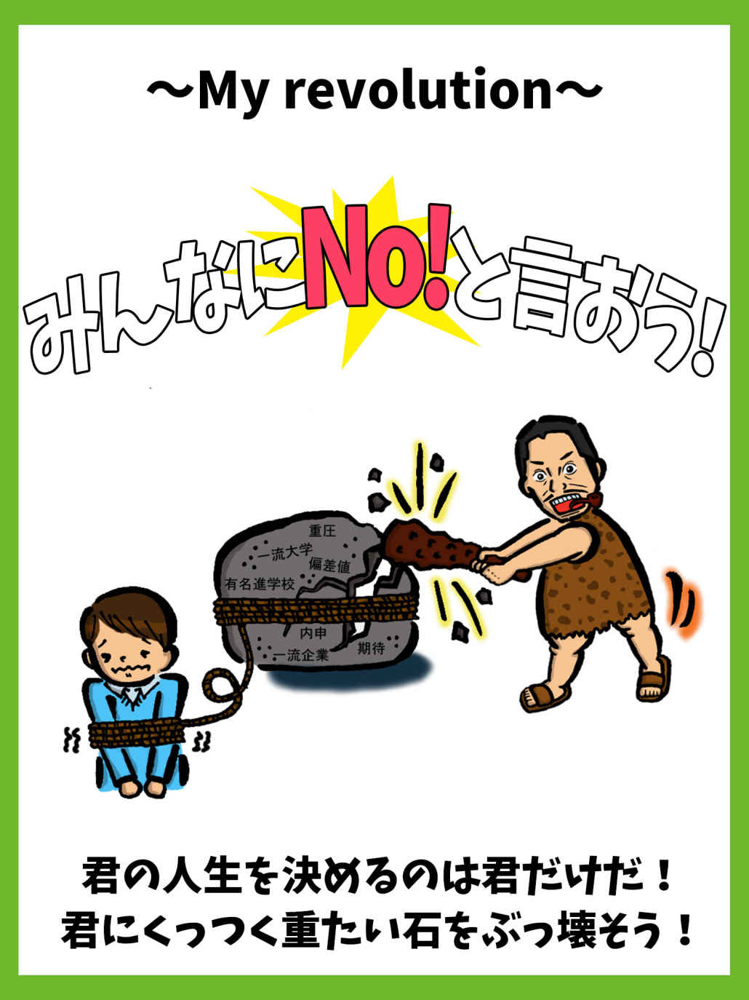
はじめに
まず初めにキミに言っておきたいことがあるよ
もし、キミがね、
・いつも先生から「頭がいいね」と褒められる
・お父さんやお母さんから「いい子だね」と喜ばれている
・将来は一流企業に入り優秀な社員として上司から注目されそう
・よいお友だちがたくさんいる
・自分は優秀だと思っている
右のひとつにでも当てはまるなら、この手紙（本）はキミには無用のもの。時間のむだから、さっさとページを閉じて書棚にもどそう。買うなんてもったいないよ。うまいハンバーガーとコーラでも買って、おなかの虫を黙らせた方がマシだよ。
この手紙（本）はね、優等生や、お利口さんや、優秀な社員さん、など、今はなんの問題も悩みもなく、日々を楽しんでいる人向けには書かれていないよ。まったくその逆。
まず初めにキミに言っておきたいことがあるよ
もし、キミがね、
・いつも先生から「頭がいいね」と褒められる
・お父さんやお母さんから「いい子だね」と喜ばれている
・将来は一流企業に入り優秀な社員として上司から注目されそう
・よいお友だちがたくさんいる
・自分は優秀だと思っている
右のひとつにでも当てはまるなら、この手紙（本）はキミには無用のもの。時間のむだから、さっさとページを閉じて書棚にもどそう。買うなんてもったいないよ。うまいハンバーガーとコーラでも買って、おなかの虫を黙らせた方がマシだよ。
この手紙（本）はね、優等生や、お利口さんや、優秀な社員さん、など、今はなんの問題も悩みもなく、日々を楽しんでいる人向けには書かれていないよ。まったくその逆。
・学校なんか大嫌い！
どこのバカ（シツレイ）が学校という変なものつくったんだろう・・・
教科書なんか見たくない。ましてや、あの偽善者で外面だけがいい、担任の先生の顔などもってのほか。正直ウザイ！
・なんでお父さんやお母さんは朝から晩まで「勉強、勉強！」ってうるさいんだ？
こわれたレコードじゃあるまいし。もっと気の利いたほかのこと言えないの？ヘタなお笑い芸人のほうがまだマシ。
・人の欠点ばっかり叱って・・・
そういう自分はどうなんだよ？まいにち部屋を片づけろとうるさいのに、自分は散らかしほうだい・・・ホント、親って、先生いじょうにウザイかも。
・職場に行くことを考えると気分が悪くなる・・・
部下の業績を平気でよこどりして、口をあければ「もっとがんばれ！売り上げがすくない！」が口ぐせの上司。そんなら自分がもっと頑張ればいいじゃないか。いつもボケーッとデスクにふんぞり返っているくせに...
・親なのに自分の子どもをごまかそうとする。
親でも信用できないと思うときがある。都合わるくなったら、話をそらす。チョイチョイ嘘をつく。（黙っているけど、こっちは分かっているんだからね！）。
・親でさえそうなんだから、友だちなんかぜったい信用できない！
仲いいふりしているのは一緒にいる時だけ。自分といないときは、ほかの友だちとどんな悪口を言っているんだか・・・でもシカとされるのは嫌だしなあ...
・イヤだ、イヤだ～ もう何もしたくない。
よくわからないけどメンドイ。なにもかもイヤになっちゃったよ～
なるほどねえ。うんうん。そうだろう、そうだろう。（タオおじさんも同感）
そうだねえ・・・
そんなキミだったら、この本のページをめくる価値は、ちょっとあるかな。
・勉強したり仕事する意欲がない
・学校や会社に行きたくないし、行く気力もない。
・お父さんやお母さんの無言の圧力が耐えがたい。
（勉強しろ、いい学校に行け、ちゃんとしなさい！・・・）
・なんか全部もうどうでもいいもよくなっちゃった。朝起きるのもメンドイ
・うつ病と言われて落ち込んでいる。安定剤や抗鬱剤などで毎日くすり漬け
・人生なんて無意味。生きる意味なんてない。生きるのもいや...
キミのそんな悩み、困っているキミのそのような状況。
それを知って、タオおじさんはこころを痛めている。なんとかしてあげたい、力になってあげたいと思う。でも「だいじょうぶだ！オレに任せろ。」なんて、タオおじさんはキミには言えない。
タオおじさんのシャツの前をあけても、スーパーマンの大きな「Ｓ」のアルファベット文字はない。ちょっと出っ張ってきたお腹が飛び出すだけ。（笑うなよ、キミのお父さんのお腹だって・・・）。
もちろん、クモの糸を手から吐きだして、スカイツリーのてっぺんにエイ！と投げつけ、キミを抱きかかえて、東京の夜景をみせてもあげられない。（できればいいなあ、と思うけどね～）
タオおじさんは、タダの中年オトコ。性格は、表紙にあるような原人にちかい。見た目はスーツをきた普通のおっさん。頭とセンスは時代おくれの発展途上人。いくつになっても成長しない。そこらの悪ガキと変わらない、幼稚なこころをもった中年オトコ。
そんなタオおじさんが書いた、この手紙（本）。
キミががんばって読んでくれても、感動するどころか「なんだ、これ？」と、失望する可能性がたかい。でも、失望したからって、この本の返品は、もちろんできない。だから、まずはこっそりとたち読みをキミに勧めたい。（本屋さんに怒られるかな）
でも、それでもキミが興味をもったら、つぎの「なぜキミは元気がないのか、そのわけを知っているか」 を読んでみてね。その上で、この本を読んでいくかどうかを決めてね。
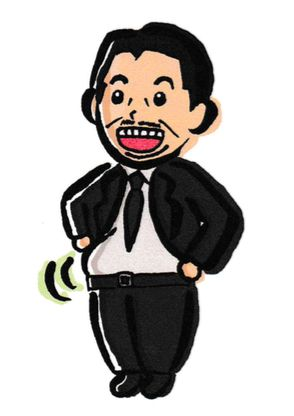
親御様向けのブログを更新しております。
もしよろしければご覧になってください。
ー 子供の笑顔と元気を取りもどし、不登校・ひきこもりの早期解決を目指す 』
ミッション１ なぜキミは元気がないのか、そのわけを知っているか
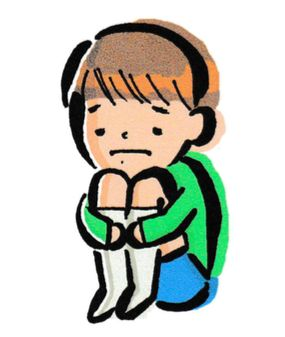
タオおじさんがこの本を書いた目的のひとつ。
それはね、少しでもこの本の内容に興味をもってくれたキミ。このページを開いてよんでいるキミに、タオおじさんからいくつか聞きたいことがあった。腹をわって（外科手術じゃないって！）キミと話しあいたいことがあった。
そして、キミに提案したいことがあった。
まちがっても、キミを優等生にしたいとは思わなかった。良い子になってもらうつもりもない。親にも先生にも好かれ、みんなから「あの子は良い子だね～」と褒められるようなすばらしいキミになってもらおうなんて、まったく考えていない。
そんなことは、キミの立派なお父さんやお母さんの役目。学校のインテリぶっている担任の先生たちのお仕事。だれでもそう思っている。ちがう？
もし、キミが色々な悩みや問題をかかえているとして、それをすべてクリアーして解決してあげること。それは、キミのお父さんお母さん、学校の先生たち、スクールカウンセラーや精神科医（心療内科医もね）のお仕事。
悩みがおおく、純真でひたむきで、とっても鋭い感受性をもっているキミ。こころ優しいキミ。そんなキミの悩みや苦しみを解決して、キミを優良児、優等生、すばらしい生徒に生まれかわらせるなんて。
そんな大変なこと、立派でも、インテリでも、エリートでもないタオおじさんにどうしてできようか。できるはずがない。考えるだけでもおこがましい。そうでしょ？
実はこのタオおじさん、フツーの中年ではない。
大きな声では言えないけどね、キミが聞いたら怖気（おぞけ）をふるうような、人にはとても言えないおおくの失敗と、みっともない挫折と、耐えがたい苦しみ。そんなことをいっぱい経験した五十年を生きてきた。（本当はもう死んでいてもいいのに、まだ生きてる。シブトイなあ）
そもそも、タオおじさんがお父さんお母さんの期待を思いきってウラギリ、お兄ちゃんお姉ちゃんを含めた家族全員を敵にまわして大ゲンカしたのは、一九才の時。
でも、そのまえの十五才の頃。
多感なタオ君。生意気にも心のなかで、はやばやとお父さんお母さんに戦いを挑んでいた。今でいえばトンでもない不良。親不孝もの。
「ボクは絶対にお父さんお母さんが期待しているような人間にはならない！お金持ちになれ、エリートになれ、リーダーになれって？そのために勉強をがんばれって？冗談じゃねえ！そんなのクソくらえ。オレはオレの道を行く！」
本気でそう考えていたから、始末がわるい。手がつけられない。矯正もできない。もちろん、声に出したらおもいっきりぶん殴られる。鼻血がでる。ドクドクと。だから口には出さない。心のなかでこっそりとツブやいただけ。（あのころはまだツイッターがなかったし・・・）
とにかく十五才のころから問題児だったタオ君。
その後、一時的に回心した。できるだけ「良い子」になろう。「優等生」になって親を喜ばそう」とがんばった（エッ？本当かって？ホント、ホント）。でも、やっぱり無理だった。お父さんお母さんの期待に応えることができなかった。本心ではそうしたくなかった。
そしてある日、ついに最大の戦いのときが、とつぜん訪れた。
十九才になったタオ君。
ある日、お父さんお母さんから呼びつけられた。「そこに座れ！おまえに話がある。」発端はタオ君のお兄ちゃんが、タオ君の秘密の計画をお父さんおかあさんにチクッたこと。（あのバカ野郎！いまでも想いだすと頭にくる）
体もデッカク、おこったら鬼よりコワイお父さん。タオ君の兄姉弟全員も呼びつけた。
「タオ君はちょうどいい見せしめのイケニエ。ここらで〝親の威厳〟をほかの子どもたちにも見せつけておこうか。ほかのヤツらも最近ちょっとワガママになってきてるからなあ・・・」
そう腹に決めたおやじ殿。一家の大黒柱。だれも逆らえない家族の最高責任者。絶対君主。
裁判所と化したリビングをながめて、ニヤリと笑い、横目でタオ君をジロッとにらんだ。（タオ君はふるえあがった）。袖をまくりあげた（イレズミはなかった。せめてもの救い）。フトコロから、ナイフをとり出した... （いや、それはタオ君の恐怖のモウソウだった）
かくして、あわれなタオ君。
たった一人。お父さんお母さんほか、兄弟全員がそろっているまえで。○○家の被告席に、無情にもすわらされた。孤立無援のあわれなエモノ。
検事と裁判長はお父さんが独占。いつもタオ君をかばってくれるやさしいお母さん、殺気をかんじたのか、今日はなぜか弁護士になろうとしない。最初からタオ君が負けるとわかっているので、知らんっプリ。
兄妹たちはまるで血にうえた群衆・・・どうやってかわいそうなタオ君がいたぶられるのか、興味しんしん。同情？ それどころか、タオ君がどうやって痛めつけられるのか、楽しみでしかたのない様子。他人の不幸は蜜（ミツ）の味、とか...
やがて、論告求刑がはじまった。
一方的な断罪。タオ君、弁明のために１分ももらえず。いや、口を開けることさえも。開けようとしたらジロッと睨まれた。タオ君、ア足がブルブルふるえて、へびに睨まれたカエルの状態。まな板のうえのコイ。
それにしても... と、タオ君は考えた。
北○○などの独裁国家の欠席裁判よりもヒドイ。昔イラクにいたというフセインの方がまだましかも。
でも、そんなこと誰も気にしない。裁かれているのはオレじゃねえ。みんなは同情するどころか、そんなことオレにはカンケイネエ！と舌なめずりししている。おもしろがっている...
やがて、判決が下された。その間、なんとわずか１０分（オイオイ、途中でＴＶコマーシャルを入れるヒマもないじゃないか）
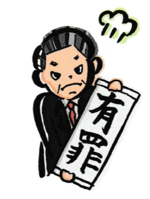
「主文― 親に反抗し、○○家の方針に逆らった、バカでアホのタオ君は、ギルティー（有罪）！」
○○ 家の法廷に、検事兼裁判長、絶対独裁者のお父さんの大きな声が無情にひびきわたった。
法廷は並みが打ったように静かになった。次にくる、裁判長が下す罰のなかみ。それをみんなは知りたくて、押しだまった。聞くのはコワイけど、そこはコワイいもの見たさ。兄弟みんなの目がニヤニヤわらっている。
「被告、タオ君は、ふとどきにも親や家族の期待にこたえず、○○家の方針をかえりみなかった。また反省のいろもない。矯正（きょうせい）するよちもなし。情状酌量のよちもなし」
「したがって、○○家からついほうする。タオ君に命令する。本日かぎり、君はわが○○家の人間ではない。たったいまタオ君を勘当する。にどとこの家の敷居をまたぐな。とっとと出ていけ！」
判決をきいたタオ君。言葉もでなかった・・・顔面蒼白。足はガクガク。
たしかに自分はお父さんお母さんの期待をうらぎったよ...
○○ 家の方針にもさんせいしていなかった。（声には出さなかったけど、１５才のころから早々と）それは事実。まぎれもない事実。
でも、行きたくなくなった大学をやめ、独りくらしをしたいと言っただけで、なにも家を追いださなくたって... １～２年後にはもどるといっているのに... そりゃあ、自分もわるかったけど... （後悔、先に立たず、とか）
いまさら、弁解のよちもなし。弁解したってだれもきいてはくれない。しかたなく、タオ君は自分のすくない服をバッグに詰めて、家を出た。いや、追いだされて、独り家から出ていった。もちろん、見送りなど一人もいない... さむい冬の夜中だった。（イヤ、真夏だったような。マ、そんなこと、どうででもいいかあ）
というわけで、かわいそうなタオ君。一九才の時に親から勘当された（家から追い出される、家族あつかいされなくなること）。
それから、なぜか悪いことがかさなった。大学を中退。恋してはやぶれ、失恋は数しれず。離婚もした。かわいい大切な子供たちをかなしませもした。長年つとめた職場にいたたまれず、リタイヤもした... （続きは、またあとでね）
ともかく、そういうわけでね、失敗だらけ傷だらけの人生をおくってきたのが、キミにこの手紙を書いているタオおじさん。
普通はね、中年になったら、特にタオおじさんみたいにいっぱい失敗したりしたら、少しは賢くなる。気のきいたことの一つくらいは言える、カッコイイ大人になる。あるいはチョイ悪オヤジみたいにスマートになる。
ところが、タオおじさん器用じゃない。立派なことをいう勇気はもっていない。なにせ、いまでも失敗と挫折をくりかえす毎日。とてもお説教できるような偉い人間はありません、ハイ。
それでも、そんなタオおじさんがこの本を書いたのはね、キミたちのお父さんやお母さんを見ていると腹が立つからだよ。
自分が本当は大した大人でもないのに、それは都合よくヨコにおいて、キミたちに過大な期待をかける。自分ではたせなかった夢をキミにおしつける。たとえば次のようなことを言って当りまえと思いこんでいる（かっこ内の反論はキミだと言ってるんじゃないよ、モチロン）
・「なんでこんなに成績がわるいの？」
（だってアンタのＤＮＡを引いているから、当然でしょ）
・「偏差値の高い中学・高校に行き、一流大学に行け！」
（ほう！アンタはそんなに立派な一流大卒かい？）
・「国公立を目指せ！」
（授業料安いからね。これはタオおじさんもちょっと共感・・・）
・「一流の大手企業に入れ！」
（自分は二流企業のサラリーマンと結婚したくせに、ホントよく言うよ）
・「勉強も仕事もがんばらないと、しょうらい幸せになれないよ」
（へえ、アンタは幸せかい？夫の給与が少ない、子供はできが悪い、妻は気が利かない、なんてブツブツ言って毎日過ごすことを〝幸せ〟って言うんだ～ 知らなかった！）
・「子供の成績がわるいのもイジメにあうのも、友だちができないのも、先生と学校がわるいのよ。学校の管理体制がなっていないから。家ではきちんと躾ています。」
（ホホウ、ご立派。子供の責任はすべて先生と学校の責任なんだ。アンタは親としての責任はないんだ～ へえ、そうなんだ～）
キミのお父さんお母さんにだけではない。学校の先生たちにも、タオおじさんは、キミのお父さんやお母さんたちに対してと同じように、ハラが立つ。いや、もっとハラが立つかもしれない。
・「生徒が勉強できないのは、指導が悪いんじゃない。親がちゃんと育てていないからだ。」
（なるほどね、アンタは立派な指導力がある先生なんだね～）
・「成績が悪いのは生徒の頭のできが悪いからだよ。」
（もちろん、面とむかってはキミにはいわない。ましてや父兄には絶対に言わない！ＰＴＡに訴えられるし。頭の出できを評価なんて、いつから学校の先生は脳医学の専門家になったんだろう... ）
・「親のしつけが悪いから、生徒の態度が悪いんだ。」
（うんうん。タオおじさんも一部は同感。でも、先生、アンタに対して態度が悪いのは、アンタを軽べつしているからだよ。どうしてわからないのかな～）
どう？大体こんな感じでしょ。当たらずとも遠からず。これが実態に近いよ。たぶんね...
お父さんお母さんたちは、キミたちを養ってそだてるためにお金をいっぱい使っているから、かろうじて許せる。でも学校の先生たちは、キミたちに教えるためにお金をもらっている教育のプロ。これじゃあプロ失格じゃあないか。
キミが会社に就職してもにたようなことが起きるよ。
一流企業も、お役所も、三流企業も、入ってしまえば、どこもかしこも似たようなもの。
キミの仕事の成績が上がらなければ、あるいはキミになにかあったときは、モチロンだれも責任を負わない。すべてキミが悪い。上司たちも同僚も、自分に責任があったとしても、必死になって責任をほかの人に押しつけようとする。（このテーマもおもしろい、またの機会にしておこうね）
さて、いまここで言いたかったのはね、タオおじさんは、キミたちのお父さんお母さん、先生や学校にハラがたっている、ということだよ。
そのわけはね、キミにたいしていちばん影響力を行使したり、上から目線で指示したり、命令したりする立場にいる。それなのに、キミのお父さんやお母さん、先生も学校も、キミの責任を絶対に取ろうとしない！
親は、先生がわるい学校がわるいという。先生や学校は、親がわるい、家庭のしつけわるいという。双方はおたがい言いのがれに忙しくて、肝心なキミのことはほったらかし...
親や先生が未成年で学生であるキミの責任を負わないで、いったい誰がキミの責任を負えるというんだい？
でも、これが現実。キミが直面している現実なんだよね。
キミの力だけでは立ち向かうには困難なおおきなカベ。でも、キミがこれからチャレンジしてぶち壊すべき大きなカベだよ。（実はね、みかけだおしの張りぼてにすぎない。キミの力でぶったおすことができるもの。ただキミはまだそのことを知らないだけ。）
まあ、ともかく、右をみても左をみても、現在はそのような「大人総無責任時代」。責任転嫁が当たりまえの社会、学校、家庭。
そんななかで、いやでもがんばって毎日を生きていかなければいけないキミ。そんなキミのことをとても気のどくに思った。一人の大人として、とっても申し訳ないと、タオおじさんは思った。
思ったけどね、タオおじさん。キミたちのお父さんでもなければ、学校の先生でもない。キミが悩んでいても、元気をなくしても、生きる力をなくしても、直接にはキミになにもしてあげることができない・・・ましてやタオおじさん、社会的な地位も影響力もない。政治家でもない。有名な学者でもない。教育者でもない。まったく無力。
そう思ったら、タオおじさん、自分の無力にハラが立ってきた。そして考えた。何でこんなにハラが立つんだろう？ってね。それで思い当たったんだ。
実はタオおじさんにも子どもたちがいる。
その子たちは目に入れても痛くないと思うほど（モチロン、本当に入れたことはない）、可愛くてかわいくてたまらなかった。毎日、少しずつ成長するのを見るのがとっても楽しみだった。なによりの喜びだった。（親はみなそう思うもの。キミのお父さんお母さんも同じだよ）
でも、タオおじさんは大人として心が未熟だった。
自分勝手で、短期で、傲慢なところもあった。そのたために、その子の母親とケンカして、とうとう離婚してしまった。そして大好きな子どもたちと一緒に暮らせなくなった。
それがタオおじさんにはこの世で一番悲しくて、辛くて、たまらない出来事だった。その子たちはタオおじさんの生きがいだったからね・・・
タオおじさん、大切な自分の子と一緒に暮らせなくなった。
毎日一緒に生活して、つらい時や悲しい時にそばにいてあげることができなくなった。うれしいこと、楽しいことを一緒によろこぶこともできなくなった。
そんなタオおじさんは、当然ながら父親失格。
家庭教育について首をつっこむ資格など、ぜんぜんない。
ましてや良き社会人を養成する使命と目的をもっている学校、インテリの先生がたを批判する資格など、当然ない。
前に書いたように、タオおじさんは中年オトコになった今でも「発展途上人」。立派な社会人ではありません。ひとの事をいろいろ言える身分ではありません。
でも、そんなどうしようもないタオおじさん。そんな自分でも、いま困っているキミ、元気を失っているキミ、独りで悩んでいるキミに、なにか力になれないだろうか。と考えはじめた。
キミにしてあげられることは何もないのか。きっとなにか手段があるはず。自分の子どもにしたくても、できなかったこと。それを少しでもキミにしてあげることができれば。でも、なにができるだろう・・・毎日そう考えていた。
今のキミたちをみていると、特にこのような手紙（本）を手にとり、興味をもったようなキミの気持ちをかんがえると、タオおじさん、正直いって胸がいたむ。こころが悲しむ。とっても辛くなる。
で、そんなキミに、なにかしたいと思った。なんでもいい。小さなことでもいいから、少しでもキミの力になれないかな。切実にそう考えた。
でも、キミの親でも先生でもないタオおじさんは、キミには直接にはなんにもしてあげられない。キミがどこに居て、どのように暮らしているのかさえしらない。
そう考え込こんでいたある日、とっぴょうしもないことを考えた。
「そうだ、キミに手紙を書こう」ってね。
キミに手紙を書き、その手紙を本の形にして、キミに届けよう、と。
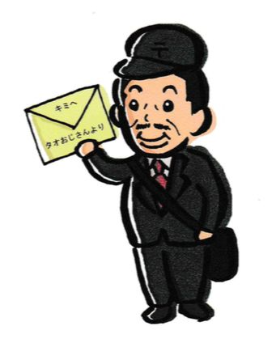
見知らぬキミでも、このような本に興味をもっているキミは、タオおじさんにとって自分の子どもとおなじ。なぜかタオおじさんはそう思ってしまう。だから自分の子のようなキミに、手紙を書こう。本の形をした手紙を書こう、と。
親としても失格。社会人して中途はんぱ。もちろん立派な人間でも、学者でない。インテリゲンチャでもないタオおじさん。そんなタオおじさんがキミに書く手紙は支離滅裂（しりめつれつ。メッチャクチャという意味）かもしれない。
でもね、この本の形をした手紙を通じて、ぜひキミに聞きたいことがある。ぜひキミにわかってほしいことがある。キミに提案したことがある。
あまりキミの参考にならないかもしれないけど、きっと今のキミにとって無駄にはならないこと、一つくらいはこの手紙でキミに伝えることができるかもしれない。そのたった一つのこと、小さなヒントかもしれないけど、それがキミのこころの力に少しでもなってくれればいい。
そう思って、そう願って、本を書いたことのないタオおじさんが、いまこうして、キミにこの手紙（本）を書いている。
ただね、キミ、注意が必要だよ。
こんな内容の本をみたら、きっとキミのお父さんやお母さんは背筋が凍る思いをする。ただちにゴミ箱に捨てたがる。それにキミを白い目でみるかもしれない。
学校の先生たちもこの本を読んだら、まちがいなく「これは不良のすすめだ！青少年に害毒のある本だから、生徒たちに絶対に読ませるな！」と顔を真っ赤にして怒る。ただちに、学校の全ての父兄に警告の回らんメールを送れ！モチロン、緊急連絡網で。（となるかもしれない）
普通のまともな大人、社会的な常識を重んじる大人が読んだら、「とうてい青少年に読ませるべきではない、誤解を与える、良識を踏みにじっている。学問的な裏づけけがない... 」といって、批判するかもしれないね。
なぜそうなるかって？
じつは、この本ではね、タオおじさん。おもいっきり勇気をだして、徹底的にキミのお父さんやお母さん、先生や学校、あげくのはてには社会や世間さま（親や先生は世間をひどく気にする）を、メッタギリにしている。えんりょなく批判している。ズケズケと。大人たちが口をぬぐって、キミたちにはかくそうとする事実やホンネをぶちまけている。
キミに直接かかわっている大人たちは、キミの悩みや苦しみやつらさに真正面から向き合うことはない。いちばん苦しんでいる被害者であるキミをほったらかしている。「責任転嫁合戦」ばっかりをやっている。（運動会じゃあるまいし）
だから、この手紙では、自分たち大人の責任を真剣にかえりみない、キミのお父さんやお母さん、先生や学校を、そして無責任な世の中や世間（社会）を、てってい的に批判している。ストレートに。容赦なく。
そのうえ、タオおじさんは、そんな無責任な親や先生や社会に、断固として「NO ！と言え」と恐ろしいことをキミに提案している。もちろん、それだけを書いている訳じゃない。でも、キミをキミ自身の思い込みから解放しないといけないために、そう提案している。
キミをお父さんやお母さん、先生たちの呪縛（思いこみ）から解放して、独立させないと、キミの人生は変らない。決して良くならない。そうタオおじさんは思っているからだよ。
「お父さんやお母さんのいうことは絶対にきかないといけない。学校の先生のいう事を聞かないと内申書がわるくなり、いい学校にいけなくなる。そうしたらいい会社にはいれなくなる。そうなったら人生の落ちこぼれになっていくしかない... 」
そんなキミのまちがった思いこみ。不安の原因。キミの心と未来をガンジガラメにしている呪縛のロープ。そのロープをまずは断ち切ること。それが大切だと、タオおじさんは考えた。
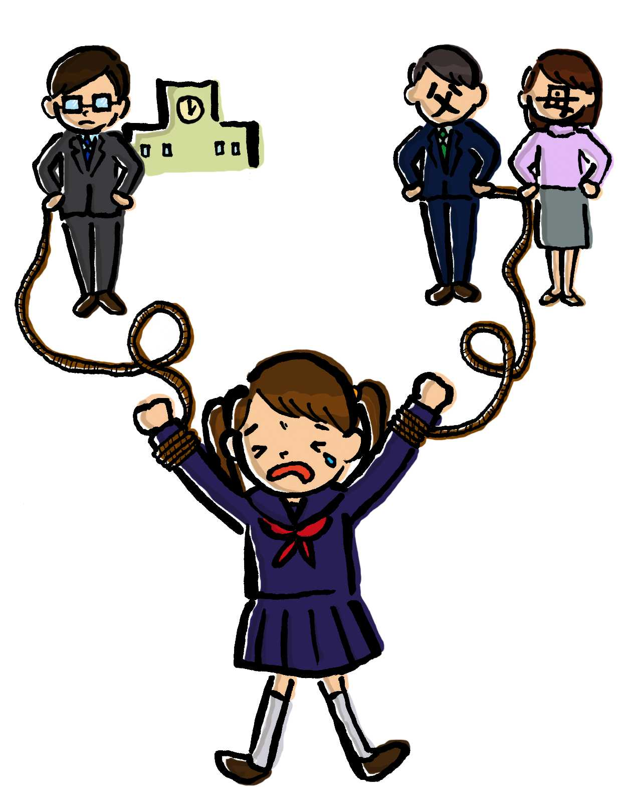
そのためには、本当は多くの大人たちがホンネでは思っているけど、なかなか口にだしては言わないことを、率直にキミにつたえよう。
タオおじさんが、こんなことを書いて、どんなに批判されても、みんなからケチョンケチョンにけなされてもいい。まずは、キミに事実を突きつけよう。それがとっても大事だと気がついたんだよね。（でも、キミも読み進んだら「なにもそこまで言わなくても・・・」と思うかも）
その上で。
では、キミはどうしたらまた元気を取り戻せるのか。
どうしたらまた勉強の意欲が出てくるのか。
どうしたらキミの毎日が子どものころのようにイキイキとして楽しくなるのか。
そのようなことを、おたがい腹をわって、正直なきもちで、キミとタオおじさんでいっしょに話しあっていきたい。いっしょに考えていきたい。
もしかしたら、そのようにしたら、キミはもともとのキミの元気を取りもどし、毎日が楽しくなってくるのではないだろうか。少なくとも、タオおじさんはそう思っている。（保証はできないよ。でも、今よりちょっとはマシになるかも... ）
まあ、そういう目的でこの本を書いた。
キミに手紙をかくつもりで、キミ宛にこの本を書いた。でも、物議をかもす内容だからね、出版社は本として出版してくれないかもしれない。そしたら自費出版でもいいから、本を出版してキミに送りたい。そう思った。それも無理なら、ネットのブログに掲載しよう、と。
ともかく、形はなんでもいい。勉強する意欲を失い、学校や会社に行く気力を失い、生きる喜びも楽しみも失っているキミ。そのキミにこの手紙（本）を届けたい。こころからそう願って、タオおじさんはこの手紙を書いている。
発展途上人のタオおじさん。この手紙ではキミになり代わって、おもいっきり毒舌をふるおう。遠慮なく変わった考えかたものべよう。独断と偏見をキミに提案してみよう。受け入れるも、拒絶するもキミ。
さて、どうかな。タオおじさんのおしゃべりにすこしばかり付きあってもらえるかな。
もしそんな気持ちになったのなら、つぎのステージ１ キミのお父さんお母さんに「 NO ！」と言おう！ をちょっと読んでみてね。
それで、気になったらその先を読んでもいいけど、イヤになったら、本を閉じてゴミ箱にポイッと捨ててね。
キミのお父さんやお母さんが口癖のように言っている言葉の定番は、だいたい次のようなものかな。
（かっこ内はタオおじさんの〝素朴な疑問〟や〝独り言〟。キミのこころの奥の声とダブルっても、オラ知らねえ）
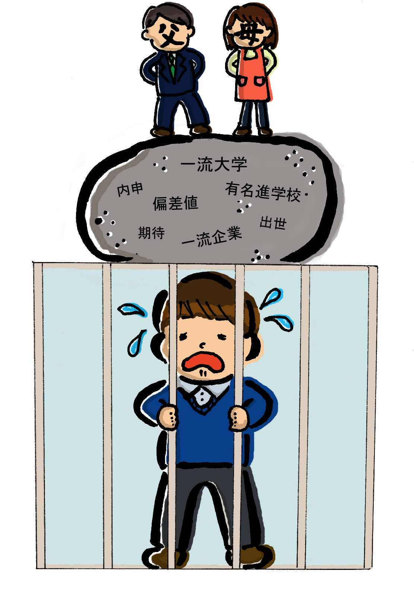
・「ちゃんとしなさい。だらしのない子はダメよ。」
（じゃあ、そういう親のアンタはしっかり親業をしてるんかい？暇さえあれば昼ドラ。家の掃除や洗濯もちゃんとしてないし。「ただいま」って家に帰っても、奥の方で「ハーイ」とまの抜けたような声しかもどらない... ）
・「しっかり勉強しないと、みんなについていけないよ。」
（どの科目をしっかり勉強せにゃいかんのか、アンタ知ってるの？）
・「ちゃんと学校に行かないと、落ちこぼれになるよ。」
（ふ～ん。でも、どうしても行きたくない時はどうしたらいいのさ）
・「なんであんたはそんなに素直じゃないの！」
（ああ、そうですか。アンタは自分の旦那や親に従順で素直な立派なお方なんですねえ。恐れ入りました）
・「お父さんやお母さんはこんなに頑張っているのに、なんでお前は・・・」
（ホホウ。自分が産んだ子どものために親ががんばるのは当たりまえ。そんなに偉そうに言わなくていいと思うけどなあ）
・「おまえはなんでこんなに心配しているのがわからないんだ！」
（へえ～。じゃあ、アンタは自分の子どもの気持ちをたいせつにしているんだあ。なるほどねえ～。立派りっぱ！）
・「ほかの子もみんな頑張っているんだから、あなたももっと頑張らなくちゃ」
（よけいなお世話だよ。ほかの子がそんなに立派なら、その子を自分の子にしたらいいじゃあないか）
・「せっかく頑張っていい学校に入ったんだから、やめたらもったいでしょ」
（どこがいい学校だよ。先生は生徒のことを考えるどころか、自分のことばかり考えているし。学年主任や教頭は、これも落ちこぼれを一人でもなくそうと必死なだけ。そんなことさえ見えないのかあ、親ってヤツは救いがないねえ）
どうかな、キミのお父さんお母さんにもそういうところはないかな。
えっ！ない？それはよかったね。じゃあ、もうこの先は読まなくてもいいよ。キミはとっても幸せな子だから、 きっと将来も幸せに楽しく生きていけるよ。
でもね、もしもだよ。
キミのお父さんやお母さんの言動に思いあたることがあるとしたら・・・もしかしたら、そのようなお父さんや お母さんのことばや態度（こころの底で考えていることは言葉や態度にでるからね）は、キミのこころをキズつけて来たのかもしれないね。少しずつ。毎日。でも、キミの気づかないうちに・・・
だって、この本を読んでいるキミはきっと純粋で多感な子だよ。サザエさんのドラマに出てくるカツオ君みたいだったら、キミは悩んでいない。苦しんでもいない。不安で心が押しつぶされそうにもなっていない。
アイツは小学生のくせに、ずうずうしく、厚かましく、徹底的にマイペースを通しているから、まずキミのようには苦しまない。悩まない。傷つかない。きっと将来は面の皮の厚い政治家になるかもしれない。（おっと、脱線しちゃったね。はなしを戻そうか）
純粋で、やさしくて、敏感な傷つきやすいこころをもっているキミは、本当はお父さんやお母さんのことが大好きかもしれない。
表面では反発したり、こころの中で「うるさいなあ、このババアは」と思っているかもしれない。あるいはお父さんのことを「古臭いことや固いことばかり言う頑固あたまのクソ親父メ」なんて思う時もあるかもしれない。
それでも、自分の親だからね、キミとしては悪く思いたくはない。なんといっても自分を生んでくれたお母さんだ。家族を養うために行きたくもない会社にいって毎日がんばっているお父さんだ。キミはけっして悪くは思いたくないだろう。もちろん、タオおじさんだって自分の親のことは悪くは思いたくない。
でも、キミのお父さんやお母さんは、キミのきもちや希望や本当はしたいことを無視（または気づかないで）して、大人の理不尽（りくつに合わない）な考えや期待を強引に押しつけくることがある。
いや、けっこうあるとタオおじさんは思う。いっぱいあるんじゃないかな。それはほとんどの家庭でもいっしょだよ。そしてタチの悪いことに、親本人はね、自分はいいことをしている、親として正しいことをしていると、本気で思いこんでいることだ。
そういうときは、ほんとうはキミは「いやだ！」とつっぱねてもいいんだよ。キミにはその権利がある。子どもだからと言って、お父さんお母さんのいうことに全て従わなければならない、ということはない。
だってね、がんばるのはキミであって、お父さんお母さんじゃないんだよ。将来こまるのはキミであって親じゃない。苦しむのも不幸になるのもキミであって、キミのお父さんお母さんは、キミの代わりに苦しんだり不幸になることはできない。
よくも悪くも、これから受験を戦い、がんばっていい会社に入っても嫌な上司や仕事なかまたちと運わるく一緒に仕事をしなければならなくなるのも、まちがった相手を選んじゃって結婚を後悔するも、お父さんお母さんじゃない。ほかならないキミ自身なんだよね。そのことはよく分かるでしょ？
でも、優しいキミは、こころの中では「嫌だなあ」と思いつつ、できるだけお父さんおかあさんの気持ちや期待に応えたいとがんばってきた。違うかな？当たらずとも遠からず。あまりちがわないと思うけどね。
で、その優しいキミのこころが、お父さんお母さんの気持ちを察するのがとても上手で親の期待に応えようとがんばってきたキミの思いやりが、実は、いつの間にか、しらないうちに、キミの元気をうばってきた。キミの勉強する意欲を失わせ、学校に行く気力をなくさせ、キミを無気力にさせているのかもしれないよ。その事を考えてみたことがあるかな？
親はだれでも自分の子に、自分のやりたくてもできなかったこと、望んでも叶わなかった夢を押しつける。これは定番。
むかし昔からの親の常套手段（意味は辞書でしらべてね）。
ハッキリ言って間違いだけど、何百年も、あるいは何千年も人類が繰り返してきた茶番劇。決して成功することはないのに、アホのように同じこと失敗を繰り返してきている。愚かで哀れな親の宿命... キミのお父さんお母さんもそういうところがあるんじゃないかな。
自分が一流校や一流大学にいけなかった。そのため、一流企業に入れなかった。だからお金持ちじゃないし、自慢できる肩書も社会的地位もない。二流の人生しか送れない。いや、三流かもしれない。いわゆる「負け組」。そのために、どれほど嫌な思いをしたか。
そう、だから息子や娘にはそんなつらい思いは絶体させたくない。子どもたちにはしっかり勉強させて、一流の学校に行かせて、一流企業へ就職させないと・・・。お父さんたちはそのように固く心に誓い、キミたちを「しっかりと勉強しろ」と叱咤激励する。
一流の国公立または私立校に進学して一流大学を卒業。一流の大手企業や国家公務員や収入のいい地方公務員がキミのお父さんお母さん（お母さんはそんなサラリーマンの嫁さんかも）であっても、事情はまったく一緒。
同じ人間だからね、一流校や一流企業でも実態は同じようなもの。二流よりはちょっとマシだけど、ちょっと毛の生えた程度にすぎない。大きな会社にはそれなりの大変な苦労もある。これは断言できるよ。給与いいけど、競争も激しいし、足の引っ張り合いなんか日常茶飯事（当たりまえという意味）。
そんなところを卒業して大企業に入ったお父さんは、こう思う。オレは中学受験時から大学卒業するまで、それこそ一生けんめいがんばってきた。そしてせっかく評判のいい国大（一流私大の場合もあるよ）を出て、一流企業に就職できた。ところが、ライバルのアイツは仕事はそんなにできないのに、アメリカ留学にも行ったというだけでオレ以上に評価されている。実力はオレの方が上なのになあ。
そうだ、これからはますます国際化の時代。子どもにはなんとしても英語をしっかり学ばせないと。できれば中国語やいまもてはやされている東南アジアのどこかの言語でもいい。外国語は絶体ひつようだ。息子や娘にもそれをしっかり学ばせないと・・・
かくして、本当は音楽が大好きなキミは、ほんとうは音楽スクールに行きたいのに、英語塾に毎日かよわされる。将来は野球かサッカー（他のなんでもいい）の選手を密かに夢見ていたキミは、お父さんお母さんに説得（無言の強制。あるいはお上品にオドされ）される。仕方ないので部活の時間をへらして、興味のない英語やタイ語や見知らぬ外国の世界に無理やり追いこまれていく・・・（おお、なんと哀れなことよのう）
それを見ている一流企業のサラリーマンのお上品な奥様であるキミお母さんは、こうつぶやくかも知れないね。
そうそう、お父さんのいう通りよ。一流企業にはいっても課長になり部長になり、出世していくのはほんの一握り。その競争に負けてはダメよ。ダメ夫のキミのお父さんは一流企業には入ったって給与はいいけど、出席競争では実は負け組なのよ。
お隣の奥様のご主人は課長。うちのダメ旦那は課長補佐。この歳ではもう挽回は無理よ。お隣の奥様は鼻が高いのに、あたしのメンツは丸つぶれ。ああ、結婚する相手を間ちがってえらんじゃったのかなあ・・・
そうよ、だから息子や娘には一流校に行かせて、一流大学に行かせる。そして何がなんでもダメ夫よりももっと能力を付けさせないと、きっと不幸になる。だってアタシをみてよ。毎日こんなみじめな思いをしている。
（あと数年で定年になるダメ夫には内緒だけど、定年と同時に離婚よ。アタシの期待を裏切ったのだから、年金は半分もらう権利も当然あるわよねえ・・・）
かくして、キミのお父さんの〝期待〟だけではなく、キミのお母さんの〝裏切られた期待〟も共同戦線を組んで、キミをあらゆる方角から攻撃し、キミの幼い時の夢や希望をことごとく打ち砕く。
キミを攻撃する大義名分（ひらたく言えば、大人のへりくつの美名）は、言わずとしれた、「子どもの将来と幸福のため」。（もちろん、そうともそうとも。親は絶体にまちがわない！つねに正しい！）
そしてお父さんお母さんにうまく抵抗できないキミは、その大義名分に従うしかない。嫌々言いながら、あるいは泣くなく、または漠然とそうかなあと思いつつ・・・立派な一流企業の社員である努力家のキミのお父さんと、その社員を内心は密かにダメ夫と別名をつけているお母さんのご期待に応えるべく。
まだ右も左もわかるはずもないキミを、お父さんお母さんが勝手に選んだ中学を受験させる。有名な進学高校に行かないといけないのは、当たり前。ひどいときには、行くべき小学校や幼稚園さえ、キミの気持ちにおかまいなしに決めていく。
うん？お花屋さんやパイロットになりたいのにって？
なにをバカなことを言ってるの！それは幼稚園のときの話でしょ？
もう中学生になっているのに、なにを寝ぼけたことを言ってるの？お隣のあの子は幼稚園の頃から毎日２つも習い事をしていたのよ。だからあんたも・・・ かくして、キミは親の決めたレールにしばりつけられ、ガンジガラメ。
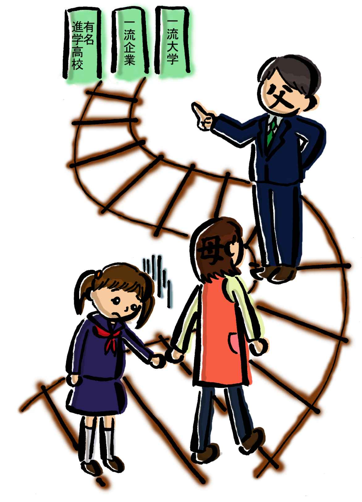
いやいや、小学校や塾だけじゃないよ。中学校も高校も、大学も、就職先を選ぶときさせ、キミの将来と幸せは親私大と信じて疑わないキミの立派なお父さんお母さんは、まちがいな口を挟んでくる。疑う必要はない。必ず生涯キミにつきまとい、キミの人生を采配しようとすること請け合いだよ。うん、間違いない。
学校や会社を選ぶときだけじゃないよ。
お父さんお母さん（特にお母さんかな）が絶好調に独裁女帝の権力をふるうのは、キミが大人になってフィアンセ候補を連れてきたとき。キミの結婚相手なのに、お母さんはギラギラした目でその候補者を無遠慮に上から下まで観察する。ご出身校はどこ？勤務先は？（自分の相手でもないのにねえ。いえいえ、子どもの将来と幸福のためでしたね。これは失礼）
娘のフィアンセ候補なら、相手の年収がいくらか、直接は聞けないから、訪問客がかえってからこっそりと娘に聞く。もちろん、それだけじゃない。ご両親はどこの大学のご出身かしら？どんなお仕事を？とお上品な言葉で徹底的に探りをいれる。できればご両親の年収も知りたいけど、聞くわけにはいかないわよね、と独りつぶやきながら...
そして、キミが結婚する相手なのに、相手の性格や考えはロクに聞くこともなく、お母さんは断固、まようことなく宣言する。「いい子を見つけたわね～将来すること間違いなし。これでアナタも玉の腰。勝ち組の仲間入りよ」。メデタシ、メデタシ！これはマシな方。
反対の場合。相手の家柄が悪い（というか有名でない）。出身校が悪い（国立でも超一流じゃないと、ねえ）、就職先が大企業であっても一部上場じゃない。あるいは小さな企業。これはもう、目も当てられない。それでもすごい高給を取っていればまだ議論の余地があるかもしれないけど、先ずはむずかしいと思うべし。
結論はたった一言「あんな男やめなさい！」。これでキミのフィアンセは跡形もなくふっとんでいく。
キミの気持？そんなこと、お母さん（あるいはお父さんが）が考えたことがあるか。お父さんお母さんが一生懸命がんばってきたのは、「キミの将来と幸せのため」。それがキミに何でも強制する根拠。大義名分（大人のへりくつ）。決して、キミの〝気持ち〟や〝夢〟のためではない。
おまけに、もう少しだけ。
「子どもの将来と幸せのために」一生懸命にがんばってきたキミのお父さんお母さんは、キミの幼稚園から始まって、大学卒業まで。就職先から結婚まで。もちろんキミの子どもの名前にもいちゃもんをつける。マジか？と思うだろうけど、そんな親はね、叶うことならば、７０年後に死んでからキミがはいるお墓の種類まで自分たちで選ぼうとする。
そして、キミはその執拗な追求から逃げるすべはない。だってお父さんお母さんには大義名分がある「子どもの将来と幸せ」のために自分たちはがんばっている。文句があるか、と開き直っている。疑いもしない。だからキミは、疑うことなく、疑っても仕方なく、納得できないままに、または無意識に、キミの夢や希望を捨てて、お父さんのお母さんの言うことに従っていこうとする。
まあ、当たらずとも遠からず。
ここではキミに極端なケースを拡大して見せているけどね、案外こんな場合があるんだよね。それもキミが思っている以上に、たくさんたくさん。
キミたちのお父さんやお母さんは「子どもたちの将来と幸せのため」にがんばり、キミたちに自分たちの考えや期待（多くの場合、屈折した間違った期待だけどね）を、当然のこととして押し付けてくる。無言の強制をする。
こころ優しいキミたちは逆らうことができない。本当は進みたかった学校をあきらめる。やりたかったこともできなくなる。幼い時から抱きつづけてきた夢は、こころの奥の方に隠されてしまう・・・
かくして、時間とともに、登校拒否・適応障害・無力感・うつ病などのいや～な実を実らせる種が、キミたちの、優しくて素直な子どもたちのこころの中に、しっかりと植えつけられていく・・・ その種は、知らないうちに、すこしずつ、深く根づいていく。
そしていつか芽が生え、すがたを表し、キミを苦しめる。不安にする。悲しませる。意欲も気力もなさせる。そしてキミは人生は無意味と感じはじめる。生きる気力をなくしていく。そういうことも多くあるんだよ。
これまで書いてきたことを読んで、キミは「どっかおかしいなあ。ナニか変だなあ」って思わないか？ もしそう思ったら、ここのところをキミにじっくり考えて欲しい、とタオおじさんは希望している。
長々と空想か、妄想か、あるいは事実を書いてしまったけど、タオおじさんがキミに伝えたいメッセージが分かるかな。極めて単純。バカらしいくらい、簡単なこと。つまり、
「キミのお父さんお母さんもタダの人間。そこいらに溢れている大人たちと変わりない存在。だから当然、失敗もする。世間の実態をちゃんとみていないこともある。まちがった考え方もする。自分の思いこみで、これが正しいと思ったことを子どもに押しつけもする。」
このことを、まず最初にキミにしっかり理解してほしい。ここが出発点となるんだよね。この事実をキミがどう感じるか。どう受け止めるか。そしてどうしたいと思うか。ここがとっても大事なポイント。
もう一度言うよ。
キミのお父さんもお母さんも完璧じゃない。完全な人間など、この世には一人もいない。だから、とうぜん間ちがうこともある。悪気はないよ。でも、子どものこころの世界にはまったく無意味で場ちがいな、大人の論理や理屈や考えかたを、まちがいだと気づきもせずに、キミたちに強制してくることもある。
そして、そのためにキミが傷つきやすいこころを抱えて苦しんだり、悩んだりしていても、キミのお父さんお母さんは自分たちの考え方やことばや態度がその原因だと気づかない場合が多い。死ぬまで分からないこともあるし。
勉強ができない、成績があがらない。それは学校の先生が悪い。学校の方針がまちがっている。塾の教え方がわるい。という訳で、キミのお母さんは学校に行ってクレームをかけ、塾を変えたりする。（お父さんは同意している場合が多いか、単に無関心。とっても忙しいらしいよ）。そして朝から晩までキミの生活をコントロールしようとする。
でも、キミはお父さんお母さんのクローンじゃない。お父さんお母さんのＤＮＡを引き継いでいるとしても、キミは親とはまったく異なる一個の人間。そりゃあ、赤ちゃんの時はおむつを替えてもらい、ミルクを飲ませてもらいながら育った。
でも今じゃあ、立派に大きくなっちゃって、もう自分で考え、自分の感情を持ち、自分の足で歩いている。とうぜん、親の考えるように考え、親の思うとおりに思えるはずがない。違うかな？
で、どうなる？
キミの考えや思いや気持ちが、キミのお父さんお母さんのそれと一致していれば、全く問題ない。キミは間違いなく、素晴らしい充実した人生を送れる。ステキな未来がキミを待っている。万歳！ よかった、よかった。
タオおじさんも心からキミを祝福するよ。ハイ、そんな幸せなキミはこの本を閉じて、自分の生活にもどってね。ここで無駄な時間をつぶすのはもったいないよ。また、どこかであったらよろしくね。バイバイ～
でも。
もし、キミの考えや思いや気持ちが、お父さんお母さんと異なっていたら、どうなる？そして、そのことをお父さんお母さんが気づかずにいて、相変わらずキミに親の期待や希望を押しつけてきたら？ キミはどうする？ 拒絶するか、従うか？
タオおじさんが思うには、その場合は、そんなキミは親から独立するしかない。「親離れ」しないといけない。そこで、ここでタオおじさんから、最初の提案をしたい。爆弾提案。ぜったい物議をかもす。血を見るかもしれない提案。キミのお父さんお母さんがタオおじさんを殺しかねない、恐ろしい提案。
それはー
お父さんお母さんにNO ！とハッキリ言おう。絶交状を突きつけるんだ。
自分は今日からは、二度とお父さんお母さんの言いなりになりません、と大々的に宣言しよう。なんなら先生や友だちを来てもらって証人になってもらってもいい。
これからは、自分で考え、自分がしたいことだけをする。苦手な科目を勉強したり、嫌なことをしなければならない場合でも、お父さんお母さんが言うからするんじゃない。これからは、自分で決めて行動すると、キミのこころに誓いたまえ。決してお父さんお母さんの言いなりにならないことを、ハッキリさせることだよ。
そして、今日までキミのお父さんお母さんが押しつけてきた、自分勝手な考えや希望や期待は、それがキミに元気と喜びを与えてくれないかぎり、すべて捨ててしまうことだよ。それがキミのこころを自由にする最初のステップだよ。
えっ？
「お父さんお母さんにNO ！と言えなんて、そんな恐ろしい、大それたことは自分にはできない。こわい！」って？それは当然だよ。
こころ優しいキミにはとうていできないだろうね。お父さんお母さんの気持ちをひどく傷つけることが分かっているようなこと、物わかりの良いキミにはできるはずがない。タオおじさんには良く分かるよ。
実は、そんなことは、タオおじさんにだって、とてもじゃないけどできない。できっこない。自分の親にそんなことを言うなんて、罰があたりそうだし、死んだら地獄に行きそうで、怖くて足がすくんで震えてくるよ。キミの気持ちはわかるよ。うん、よ～く分かる。
でもね、絶対にキミは、キミのお父さんお母さんの思惑や期待や思いこみから自由にならないといけないんだよね。そうしないとキミは絶体に変らない。変わりたくても変れるはずがない。こころが自由にならないし、元気ももどってこない。この点は間違いないよ。
でも、お父さんお母さんの顔を浮かべると、面と向かって「NO ！」というなんて、できないよ... そういうキミの声が聞こえてきているよ。
わかった。じゃあ、こうしようか。
キミは自分のこころの中で「お父さんお母さんから独立する！」と大きな声で宣言するというのはどうかな。こころの中でだよ。こっそりと、だよ。まちがってもお父さんお母さんの前で口をすべらせちゃいけないよ。兄弟にも言っちゃいかん。
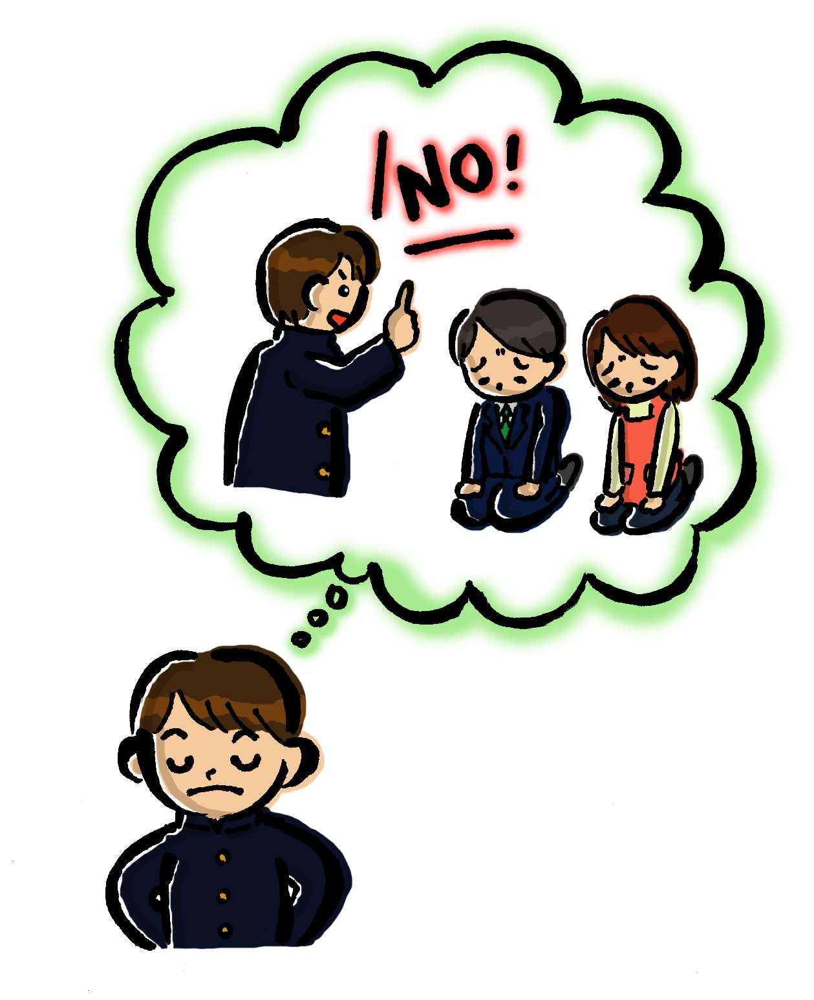
家族にキミのホンネがバレてしまったら、キミは袋叩きにあって鼻血を流すことはまちがいなし。あげくの果てに、ホンネを言ったキミは、自分の家から追いだされるかもしれない。「この家から出ていけ！この親不孝者メ！」という言葉を背中に受けながら。。。（思い出すなあ... むかし、タオおじさんも２０才で勘当されて、家を追いだされたなあ... ）
どうだろう？
こころの中での独立宣言ならキミにはできるかな？
できるなら、大したもんだ。明日からキミのこころは晴ればれとして、明るくなってくるかもしれない。では、次のステップに進もうか。
次のステップではね、タオおじさんは「先生や学校にNO ！と言おう」とキミに提案するつもりだよ。もちろん、その理由も説明しよう。では、準備はいいかな。
「いやあ、ちょっと待ってください、タオさん。ちょっとついていけないでいるよ。
とてもじゃないけど、タオおじさんの言うことはあまり理解できない。過激すぎるし... タオおじさんの言う通りにしたら、なんか不良になってしまいそうだし、家族から見はなされるかもしれないし。なんかちょっとこわいなあ... 」
キミがそう思っても無理はない。実は、そう思うのが当たりまえ。キミがまともな証拠だよ。
この本を書いている当のタオおじさんでさえ、このメッセージをキミに伝えて、親に対してNO ！をつきつけて、独立宣言せよ！なんて言っちゃっていいのかなあ、となかば躊躇（ちゅうちょ）しているからね～。うん、キミの気もちはよく分かるよ。
じゃあ、一つだけキミにきいておきたいことがある。
もしキミが、そこまでしなくても自分は変わることができる。勉強の意欲も取りもどせる。学校にもいける。会社にも行ける（仕事をしている場合だよ）。もしそのような気持ちになってきているのなら、ここでキミに提案したことはすべて忘れてもいいよ。
この本のキミに対する目的も用ずみだよ。だから、この本の先をもう読む必要はない。そうだねえ、ブックオフに持っていって古本として売っておいで。１０円くらいは払ってくれるかも。
もし、先を読んでいいのかどうか迷っているのならね、しばらく読むのを止めて、本を閉じて、脇においてね。そして、今までタオおじさんが言ってきたことについて、ちょっと考えてみてね。
タオおじさんが言ってきたことに「そうそう！」共感を感じたか。それとも、「そうじゃあないでしょ」と反発したか。なにも感じなかったか...
自分のこころの中をよ～く見つめてみてね。それがこのステップではとっても大切なこと。結論などは、実はどうでもいいんだよ。キミが読みながら何を感じたかが大事なんだよ。
読みながら「キミが感じたこと」。つまりね、この本を読みながらキミが共感したこと。あるいは拒絶反応をしたこと。疑問に感じたこと。不安に感じたこと。
そういう事など、キミがこころの中で「感じたこと」（頭やりくつで考えたことじゃないよ）が、キミの疲れた心を刺激する。そして、キミのこころの中を少しずつ変えていく。いままでハッキリと意識していなかったキミ自身のいろいろな気持ちや思いなどに気づいていく... そういうことが起こってくれば、この手紙はもう読まなくてもいいよ。
なぜかというと、そういう変化がキミのこころの中で起きてくるとね、少し時間がかかるかもしれないけれど、やがてキミの気持ちが楽になってくる可能性が高い。こころの重荷が取れてくるにだろう。すくなくとも、タオおじさんはそう思っているよ。
でも、もうちょっとだけ先を読んでみようかな、と思ったら、またこの本を開いてページを空けて、もう少し続きを読んでみてね。
この先でタオおじさんは、今度は学校の先生や学校について書いていくよ。どんなことを書くんだろうって？ 大したことじゃあないけど、キミの予想外のことかもしれないね。
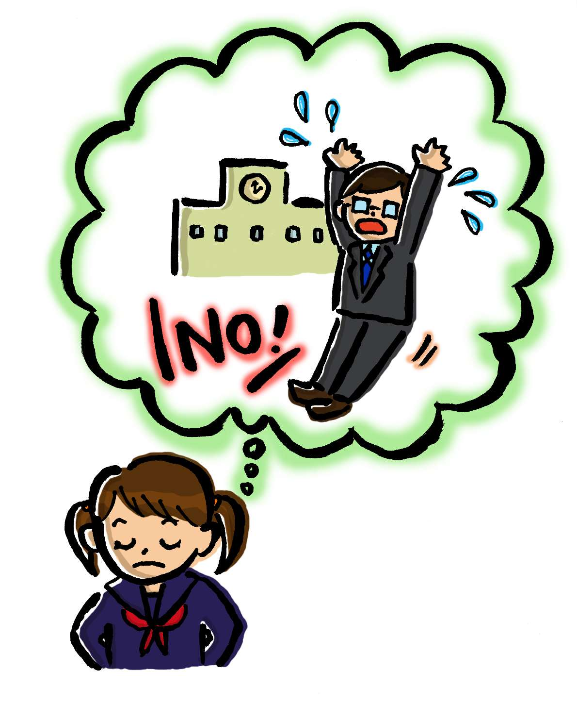
こんどは先生と学校にNO ！という番だよ。( 笑)
お父さんお母さんの「子どもの将来と幸せのために」という思い込みに根付いた、愛情あふれる強いつよい思いと期待。その大きな期待と無言のプレッシャーがキミのためになることは先ずない。
それどころか、逆に、キミのこころの大きな負担となることが多い。優しくて感受性のするどいキミのこころを傷つける。キミの勉強の意欲を奪う。学校にいく気力を失わせる。そういうこともある、ということを読んできたね。
だから、「お父さんお母さんにNO !! といおう」。キミのこころを弱め、勉強の意欲を失わせ、学校や将来が嫌になるようなプレッシャーは勇気をもって拒絶しよう。そのために、必要なら、仕方がないけど、お父さんお母さんから独立しよう。そうしないとキミは変わることができない・・・
キミの親でも先生でもなく、キミに直接会った事さえないタオおじさんは、何の権利があってか（もちろん、ない！）、そのように厚かましくもキミに提案した。
でも、実は、問題はお父さんやお母さんだけではない。
学校の先生、いや学校そのものも同じようなマイナスの働きをキミにおよぼすこともある。キミたち生徒や学生に過大な期待と暗黙のプレッシャーをかけていることもある。そして、そのことがキミたちの勉強する意欲や学校に行く気力をうばってはいないか。タオおじさんは、そういうことも大いにあることを知っている。
キミの学校を想いうかべてごらん。
学校には何百人の生徒がいる。色々な科目の先生が何人もいる。担任の先生もいるし、学年主任もいる。給食を作ってくれるおばさんもいたり、スクールカウンセラー、保険の看護師さんもいるね。教頭先生や校長先生もいる。私立の場合は、理事会という運営機関もあったりして、学校の運営・指導のあり方に口をはさんだりする。
学校の外では、市や県の教育委員会が目を光らせている。国の教育機関としては、偉そうな文部科学省がある。この人たちや機関などが生徒としてのキミに関わっている。（本当はそのはずだけど、実際には大いに違うかも）
で、ここでキミに質問。
学校の校長先生、この人はキミとどんな関係があるんだろうか。
キミは会ったことがあるかい、校長先生に（入学式や運動会の挨拶以外の場所で、だよ）。たぶん無いよね。ましては、面と向かって１対１で話をするなど、もちろん無い。それが当たり前。
だってね、校長先生は先生たちを指導したり管理したりしないといけない。生徒のことを気に掛けてくれる心ある校長先生がいても、キミたち生徒は何百人。とうてい無理。だから、教頭先生や学年主任に「よろしく頼むね」と丸投げするしかない。
校長先生は学校の管理者でしかない。キミの教育や勉強の状況など、ましてはキミの将来など、興味があっても知りようがない。キミはあくまでも多くのデータのなか（成績優秀者とか、問題児とか）の数字であって、一人の人間ではない。
じゃあ、「よろしく頼むね」と丸投げされた、教頭先生や学年主任はどうだろう。
キミは教頭先生や学年主任と１対１で会って話したことはあるかい？まず、ないだろうね。キミがよっぽど秀才か、もしくは担任の手におえないとんでもない生徒でないかぎりは。
だって、教頭先生や学年主任などは、キミたち生徒たち一人ひとりのことを考えるのが仕事じゃない。本当はやらないといけないけど、とてもじゃないけど、そんな余裕はない。教頭先生は教師の管理をメインにしている。学年主任も似たようなもの。教頭先生といっしょに学校全体、あるいは学年全体のことをみないといけない。
二人とも、到底キミ一人のことなどに時間をつかうわけにはいかない。とっても忙しんだよ、この二人は。なにせ校長先生から、仕事を丸投げされてしまった。がんばらないと降格されるし、給与は上がらない。
じゃあ、キミのことはどうなる？
賢い教頭先生と学年主任は、自分たちのボスにならって、担任の先生に「よろしく頼むね」と丸投げする。「私は忙しいから仕方がないからね～」と追加する事は忘れない。自分たち管理職とはちがう担任の先生がやりなさい、と。まあ、だいたいこういうところかな。（これも当たらずとも遠からず。キミの学校がそうでいないことを、タオおじさんは祈っているよ）
さて、教頭先生と学年主任からキミの教育を丸投げされた担任の先生。担任の先生はさすがにキミの名前を知っている。顔も覚えていてくれている。よくも悪くも、気に入っていても気にいらなくても、さいてい１年間は付きあわないといけない相手だから、もちろんキミの名前と顔やイヤでも覚えてしまう。
ここで、やっと得体のしれない〝学校〟は、担任の先生という〝人の形〟をとって、キミに対面する。キミは担任と接することによって、はじめて学校と接していることになる。別ないい方をすると、キミは担任の先生を通して、通っている学校を評価する仕組みになっている。
もちろん、ほかの教科の先生たちとも関係はあるよ。クラスメートや部活の先生や友だちともね。本当はほかの科目の先生との話し合いや、友だちとのつきあい、部活やクラブ活動、そういうものがとっても大切だよ。
でもね、基本はどうしても担任の先生との関わりが一番おおくなり、中心となる。それが今の日本の学校の仕組みになっているんだよね。
そこで、この担任の先生にとって、キミという生徒はどんな存在だろうか。
ハッキリ言おう。キミは４０人（３０人かもしれないけど）いるクラスのなかの１人にすぎない。
校長先生と教頭先生にとってキミは何百人という生徒全体のなかの１人にすぎなかった。学年主任にとっても、キミは生徒全体の３分の１、何百人のなかの１人にすぎなかった。やっとキミに個人的もかかわれる担任の先生が登場しても、キミは４０人のなかの１人にすぎない。
問題はね、次の点にある。
キミとキミのお父さんお母さんにとっては、担任の先生は１人しかいない。だからキミの目もお父さんお母さんの目もいつも担任の先生に向けられている。そうじゃないかい？そして、何かあると（なになに学科の成績がわるいとか、部活でのトラブル、いじめ）、キミとお父さんお母さんはまず担任の先生に相談にいく。そうでしょ？
学校からみたら、担任の先生は学校の窓口。お父さんお母さんから見たら、担任の先生が学校におけるキミの責任者。そんな構図になっている。
ところが、だ。
担任の先生にしてみたら、キミはそのた大勢の１人に過ぎない。４０人の生徒がクラスにいたら、一人一人に気を配らなければならない。キミ一人に特別にかかわるわけにはいかない。それはキミもわかるよね。だって、担任の先生というクラスの生徒全員の面倒をみるほかに、担当の学科をおしえないといけない場合もある。
おまけに、校長先生や教頭先生や学年主任からもいろいろと仕事を言いつけられたりする。本当に忙しいんだよ、担任の先生は。とてもじゃないが、キミ一人に構っていることはできない。
問題は、キミ（とお父さんお母さん）からみたら、担任の先生はたっと一人。
担任の先生からみたら、キミは数十人というそのた大勢のなかの一人。
どう？ なにが言いたいか分かってきたかな。
ハイ、そうです。学校はキミの面倒などまったくみてくれません。みたくても、みられません。
学校が生徒を教え・指導する、というのは幻想です。真っ赤なウソ。学校のパンフレットや校長先生の挨拶などを真にうける。きっとこの学校ならうちの子も伸びる。そう考えてしまうのがいけない。
学校が生徒をちゃんと教えて指導してくれるらしいよ。そこに入学させればうちの子の成績も伸びるかも。いい高校や大学に行けるかも。だって、「一人一人の個性を大事にして、伸び伸びと勉強させるのが本当の方針」ってパンフレットに書いてあるし。
あそこなら学校全体で生徒の面倒をきちんと見ているみたい。なら、うちの子も大丈夫だろう。（期待感にもとづく想像はつきない・・・）
そんな学校だから、きっと担任の先生も一人一人の生徒をきちんと見てくれるのよ。あそこにしましょうよ。と言って、キミのお父さんやお母さんは期待をもってキミに勧め、入学させる。キミは、「あそこはいい学校だよ」っていう親の言葉を信じて入学する。そこから全てのまちがいがはじまるんだよね、うん。
学校の進路指導。三者面談。進路決定・・・
（ここまで読んできたキミは、キミの将来にすくなからぬ影響をおよぼすだろう進路相談や指導についてゾッとしてこないか。）
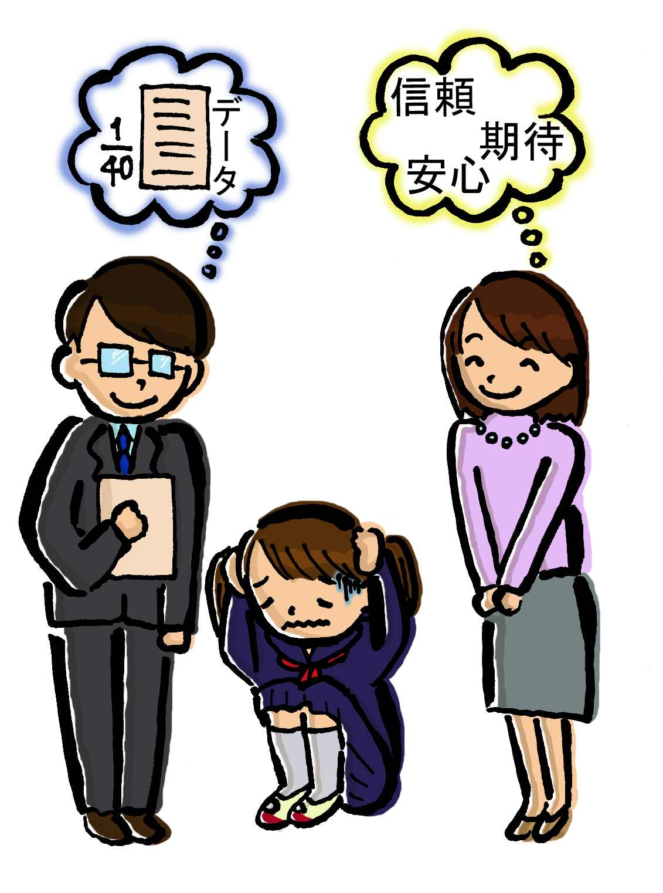
だいたいそのような場面の参加者はいつも３人。担任の先生、キミのお母さん（お父さんは忙しいし）、そしてキミ。
一方では、そのた大勢のなかの一人に過ぎないキミのことは個人的にはほとんど知らず、ファイルのデータに頼っている担任の先生。
もう一方では、キミのことはすべて把握してきちんと指導してくれている担任と相談しに行くつもりで来ているキミのお母さん。
そして、なかなか自分が本当はやりたいこと、感じていること、思っていることをお父さんやお母さんに言えない、傷つきやすくて心の優しいキミ。学校ではそのた大勢扱いされていて、書類の上のデータで分析され、評価されているキミ。
こんな３人が集まって、いくら脳みそをしぼって話し合ってみてところで、キミの素晴らしい将来につながるような結論にたっすると思うか。絶対にないね。あり得ない。
だって、みんなそれぞれ異なる土俵にたっているじゃないか。一緒に３人で相撲などできっこない。別ないい方をすると、同床異夢（どうしょういむ）意味は自分で調べてね）の典型的な例だよ、これは。百害あって一利なし。
で、そのような３者面談の結果は、どうなると思う？
一言でいえば、キミの気持ちや希望や無視される。
それだけじゃない、キミのこれから大いにのびたかもしれない才能も、伸ばす可能性も摘みられる。しぼんでしまう。なんで？って。だって担任の先生は１枚（２枚かもしれないけど）の紙に書いてあるデータがキミだと考えている。キミのお母さんは、担任の先生がいうことを信じている。
キミはあくまでも試験の点数、学校での態度、担任の先生やほかの先生の独断と偏見で評価されてしまう。もちろん、キミの将来はそれで決定。ちゃんと学校で慎重に検討して出した結果です。クレームは受け付けません。よろしいですね。（口ではそうは言わないけど、内心ではそうスゴんでいるかもしれないよ）
かくして、担任の先生の手に握られたペーパーと、学校に絶大な信頼を寄せているキミのお母さんのダメ出しにより、キミの将来は決定される。
キミは、もうちょっとがんばって偏差値をあげれば行けたかもしれない高校や大学を諦めてしまう。もう少しがんばれるのをキミは知っていても、担任の先生に無理と言われれば、逆らうのはむずかしいからね。（そのようなケースがたくさんあるのを知っているタオおじさんは、とっても悲しくて残念に思う）
ところで、ちょっと休憩しようか。
それでだけどね、キミがいま書いたような問題がぜんぜんなければ、それはとっても幸せなことだと思うよ。きっとそんなキミはお父さんお母さんともツーカーで気持ちが通い合い、担任の先生ともいいコミュニケーションが取れていると思う。キミは本当に恵まれているよ。
もしそうだったら、ここで読んだことは全部忘れて、この本を閉じて、自分のお勉強にもどってがんばってください。タオおじさんは、心からキミのますますの前進と向上を祈っているからね。Good Luck !
でも、もしキミが、思いあたることがある。あるいは、自分もそのせいで辛い思いをしたり、行きたい学校に行けなかったことがある。そのせいで、お父さんお母さんに期待できなくなり、担任の先生が嫌になってしまった。学校にもいきたくなくなった。将来に希望をなくした。すべてが嫌になって生きるのがメンドイから、もう死んでもいいと思っている・・・
もし、万が一、そうだったら、ここでもタオおじさんはキミに提案しなければならないね。「先生と学校にNO ！と言おう」、とね。
これからは絶体に担任の先生の言いなりにならない。先生たちや学校が一方的に作ったキミにかんするデータや評価を無視する。
自分がこれからどこの学校や大学に進学するか、あるいは進学せずに仕事をするかどうかは、自分が決める。担任の先生や学校の〝指導〟などには従わないこと。
結局、３者面談でもしまちがった結論にたっしても、その責任が担任の先生やキミのお父さんお母さんとの話し合いにあったとしても、実際に苦労するのはキミであって、担任の先生ではない。ましてや、学年主任や教頭先生や校長先生ではない。
繰りかえすけどね、苦労したり、まちがった方針のとばっちりを食うのは、キミだよ。ならば、否が応でも責任や苦労やとばっちり、そのすべてがキミ一人にかかってくるのならば、これからは全て自分で決めたほうがいいじゃないか。
お父さんお母さんや担任の先生が相談して決めて失敗したら、キミはその人たちを責めるでしょ？でも、くりかえすけど、その人たちは決してキミのために責任を取らない。自分たちに責任があるとは思っていないしね。それに取りたくても、取れない。その結果、まずキミは親不信、先生不信、学校不信になっていくだろうね。
そして人間不信になったキミは、とても辛い思いを抱えて生きていくことになる。まあ、それもキミの人間力を高めるためにはいい勉強家もしれないけど、ちょっとかわいそうすぎると、タオおじさんは思うんだよね。
それならば、だよ。自分で決めようじゃないか。
よくも悪く、失敗しても成功しても、自分自身が決めた方針や決定の結果だったら、納得がいくんじゃないかな。自分が原因で失敗したり苦しんだりしも、人は生きていける。でも他人のせいで（キミがそう思い込んでいるだけであっても）失敗したり、苦しみにあったりしたら、人は挫ける。
分かってもらえるかな。
キミの将来はキミの手でつかめ！
キミのことを何にもわかっていない担任の先生（含む、他のもろもろの教科の先生）や学校がキミをバックアップしてくれるなんて、そんな甘い期待はするな。それは幻想にすぎない。だから、「先生と学校にNO ！」と言おう。これが結論。
モチロン、自分のこころの中で大きな声をだして宣言するんだ。でも、まちがっても口を滑らせてはいけない。そんなことしたら、キミはただちに精神病院送りになるか、お父さんお母さんを呼びつけられる。最悪、不良あつかいされて学校を退学させられるかもしれないからね。（そうなっても、タオおじさんはキミを助けにいけない）
さあ、ここまで読んできて、キミはどう感じているだろうか。
このおっさん、またまた変な事を言っている、と思っているかな。
それとも、そう言われてみればそうかなあ、とちょっとは感じているのかな。
大切なことだから何度もくりかえすけど、この本を読んで大事な点は、読みながらキミが何を感じるか、だよ。読んで反発する、面白く感じる、疑問を感じる、共感する、訳が分からなくなってきて不安を感じる、混乱する、考えさせられる・・・
この本を読んでいるキミのこころの中に生じる動き、それが小さなものでも、その〝心のうごき〟が、どんな内容であれ、感じることがとっても大事なんだよね。
こころが感じていることが変わってくると、キミの考えも変わってくる。そしてキミの行いやものの見方も変ってくる。
そして何よりも大事なのが、自分で感じること、自分で考えること、自分で決めること。そういうことができるキミになれば、必ずキミの勉強への意欲もだんだんともどってきて、学校にいく気力が生まれてくる。
そうしたら、何でもトライしてみようという元気も、だんだんと復活してくるよ。タオおじさんもそのような経験があるし、そのようにして元気になっていった人たちをたくさん知っているよ。
このテーマは、ここで一応おわり。
ところで、お父さんお母さん、学校の先生たち、会社に入れば上司のみなさんは、口癖のように「みんなは・・・」とか、「世の中は・・・」とか、「世間は・・・」とよく言ったりするでしょ？ そういう言葉って、なんか分かったような、わからないような、意味不明な言葉に思えるよね。
でも、大人たちは正体不明・意味不明の「みんな」や「世の中」や「世間」を楯にとる。そして純粋無垢なキミたちを説得して従わせるための道具につかっている。そういうことが少なくない。
そしてキミたちは、多かれ少なかれ、その摩訶不思議な言葉のせいで、翻弄されることが少なくない。だったら、タオおじさんはこれは無視できない。
そこで、次には、タオおじさんはその摩訶不思議な言葉を取りあえず「社会」という言葉でひとくくりしたい。本当はそんなに簡単にひとくくりにできない言葉だけど、メンドイから、取り敢えずそういうことにしておこう。（スゴイ独断と偏見でごめんね）
そういうわけで、次にタオおじさんがキミに提案するのはね・・・キミにはもう分かったでしょ？そう、大人たちが無視してはいけないといつも言い、恐れているその「社会にNO ！と言おう！」ということ。
タオおじさんの毒舌につきあう気持ちがあれば、また時間ある時に続きを読んでみてね。
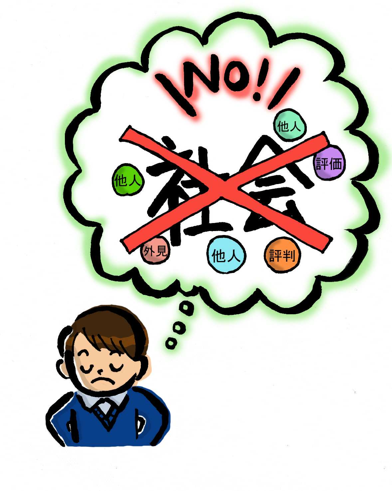
さて、３番目にNO ！を言うべき相手は、キミのお父さんお母さんや先生たち、つまり大人たちがキミを説得したり、いうことを聞かせようとしたりする時によくいう「みんなは・・・」「世間は・・・」「世の中は・・・」という得体の知れない、意味不明な相手だよ。
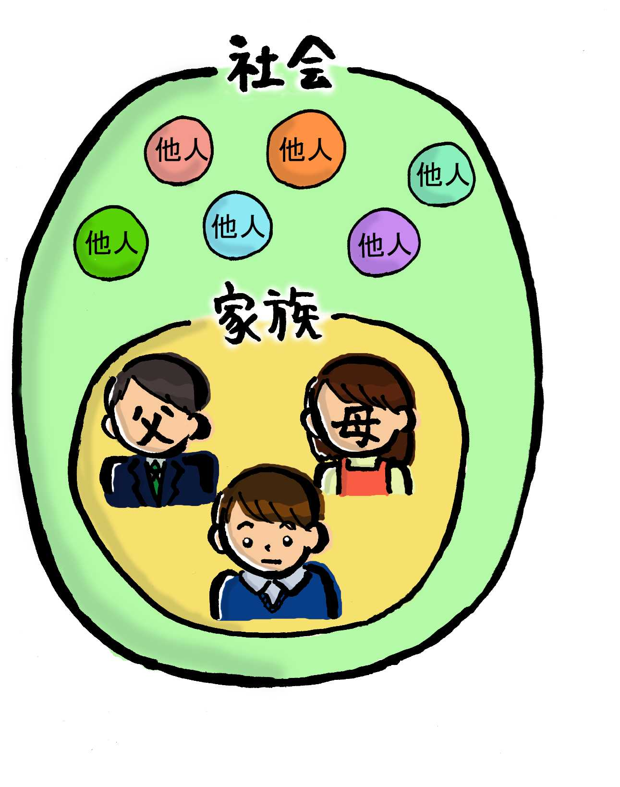
ちなみにね、キミのお父さんお母さん、あるいは担任の先生でもいいよ、たずねてごらん。「みんなは・・・って、誰のことを言ってるの？」「世間ってどういう意味？」「世の中はって、簡単にいえばどういうことなの？」。
きっとキミのお父さんお母さん、担任の先生も、返事に困るだろうね～ 先ずまちがいなく「う～ん・・・」と唸って黙り込んでしまう。イエイエ便秘じゃあなくて( 笑) 、頭の消化不良だよ。でも、それはタオおじさんも同じ。いつも平気でつかっている割には、改めて質問されると、なんとも答えようがないからエライことは言えない。
そこで、タオおじさんは考えた。
これを一括りにして、「社会」ということばでまとめてしまえ！ってね。社会ということばならキミも分かるでしょ？ 平たく言えば、キミとキミの家族以外のすべて。一般の他人たちのこと。
いや、そうじゃない、会社や学校やお役所や他にもいろいろあるじゃあないか。いろんな解釈があるじゃあないか。マックス・ウェーバ・は・・・なんていう偉そうな学者や評論家もいるだろうけどね、そんなの無視。ヒマな人に議論させておけばいいから、今のところはキミは忘れていいよ。タオおじさんも都合よく忘れておこう。
結局、どんなに大きな会社だろうと、大学だろうと、政府だろうと、外国だろうと、そこで働き、それを動かしているのは、キミと同じ「人間」。人間のいない会社や学校なんか存在しない。あるとすれば、それは廃墟。会社や学校の抜け殻にすぎない。
だからね、今のところは、「社会」と言う言葉の意味を、キミとキミの家族（あるいは親しい親戚とか友だちなど）以外の、「他人」ということにしておこう。細かい議論をすればきりがないけど、それは大学に行って偉い学者になってから研究してね。
では、本論に入ろうか。
キミのお父さんお母さんが言っている社会というのはね、つまるところ、「他人」のいうこと。「世の中ではそんな甘えた考えは通用しないよ」という場合は、「ほかの人たちはキミのそんな考えを認めないよ」と言いたいわけさこれは学校の担任も似たようなもの。
その社会だけど、キミは何も恐れることはない。
社会は学校と同じようにキミのお世話なんてしてくれない。困った時には助けてくれない。死にそうになっても手を伸ばしてくれない。壊れたキミのこころなんか絶対に癒してなんかくれない。だって、社会と言ったって、結局は「他人の寄り集まり」にすぎないからね。
そんな社会。それをキミを脅す材料に使うのは、キミのお父さんお母さんは自分の言葉ではうまく説明できないから。それだけだよ。だから「世間は・・・」「世の中は・・・」とかいう言葉をつかって、さも恐ろしい化け物かのように持ち出して、キミに自分たちの考えを押し付けようとしているに過ぎないんだよね。これが真実。
その社会というヤツ。これがね、実にいい加減なものなんだよね。
今日はキミのことを勉強ができない、まじめな生徒じゃない、努力が足りない不真面目な生徒とさんざんけなしていたとする。そんなキミが、ある日、ホームから線路に落ちたおばあさんを見つけた。迫りくる電車を恐れもせずに、夢中に線路に飛び降りておばあさんを助けた・・・
キミの行為は警察に表彰され、新聞の記事となり、テレビでも放映された。そのときから、キミはさっきまでのダメ生徒じゃなくなり、ガッコイイ英雄に生まれ変った。
世間は喝采する。あの生徒はすごい！自分の命もかえりみず、おばあさんを助けた。若いのにすばらしい勇気の持ち主だ。誰にでもできることではない。きっと親のしつけが素晴らしかったんだろう。いや、学校の教育がよかったのか・・・
かくして、昨日まではキミのことを毎日叱っていたお父さんお母さんにとって、いまやキミは自慢の息子や娘になる。わが家の誇り。「いやあ、あの子は小さい時から気がやさしくてね。困った友だちをみるとほっておけないところがあった。思いやりもあって・・・いい子ですよ、ええ本当に」。
学校の担任の先生。インタビューされて、「ええ、もちろん！あの子はとってもいい生徒よ。勇気のあるすばらしい子だってことは、入学した時から分かってましたわ・・・」とニコニコ顔で、平気で答える。もちろん、カメラ目線。モデルスマイル、でね。
教頭先生や校長先生もインタビューに備えて原稿まで用意したりしてね( 笑)
まあ、ともかく、ダメ生徒のキミは一夜にして、きわめて優秀で、優しくて、勇気のある、素晴らしい息子や娘として誉めたてられる。学校では、急いでキミの内申書が書き換えられる。徹夜をしてでも。一夜明けたら、キミは生まれ変わった優等生扱い。（世の中にはよくあることだよ）
ところが、だ。
それからしばらく経ったある日のこと。
学校からの帰り道。キミが気晴らしにちょっと寄ってみたゲームセンターでの出来事。
何人かの悪ガキどもがたまたまキミの近くを通り、キミが手にもっていたコーラにわざとぶつかった。コーラはこぼれて、悪ガキどものボスのシャツの袖にかかっった。ボスは憤り「おい、テメエ！なにすんだよ！きのう買ったばかりのブランドの服が台無しじゃねえか。弁償しろよ」と凄んで大きな声を張り上げる。
悪ガキの子分どもに取りかこまれたキミは、逃げ場がない。仕方ない。ケンカを避けたいキミはお詫びを言ってあやまり、財布にあった２千円をわたす。しかし、ボスは「ふざけんなこの野郎！このシャツは５万円もしたんだぞ。もっとヨコせ！」と怒鳴りながら、１年前にユ○○ ロで千円ちょいで買った、洗濯もしていない汚いシャツの袖を突きだした。ついでに、キミのカバンをぶんどろうとする。
キミは本能的にカバンをしっかり握って、ボスの手を振りほどこうとした。その瞬間、体制が崩れていたボスは足をつまづかせて倒れた。運の悪いことに、近くのゲーム機のガラス面に思い切って頭を突っ込んでしまった。（自業自得だけどね～）
ボスの顔は血まみれになった。ちょうどそこへ、さわぎを聞きつけたゲーセンの店長がその場に飛び込んできた。ボスが顔から血を流しているのを見て驚愕。足はガクガク。でも腰はかろうじて抜かさない。そこは店長のプライド。で声をふるわせながら、警察を呼んだ。サイレンと共に警察官がってきて、ボスや悪ガキどもと一緒に、もちろんキミも警察に連行された。
「ケンカは両成敗」とみなされ、キミのお父さんお母さんが警察に呼ばれる。学校にも通知され、青い顔をした担任の先生もやってくる。もしかしたら、学校の評判を落としてはいけないと、教頭先生まで急いでお出まし人なる・・・あとはどうなる、キミにはもうわかるね？
いくらキミが無実を訴えても、誰も聞く耳なんかもっていない。「ケンカ両成敗」。下校後もまっすぐに帰宅せず、ゲーセンなんかに行くからこんなことになるんだ。キミも悪いと、一方的に断罪される。弁明してもモチロンダメ。起訴されないだけまし。かくて、昨日までヒーローだったキミは、今度は一夜にして、不良少年に二段階も格下げ。それが社会のルール。世間の決まり事。
そう、それが、世間、世の中、社会というものの正体なんだよ。
昨日のダメ生徒を一夜にして日本中のヒーローに仕立て上げる。そのヒーローを、今度は、一夜にして不良少年に陥れる。そして、もちろん良心の呵責なんて感じない。こころも痛まない。キミの気持ち？キミの思い？社会にとってはそんなこと、関係ネエ！
おまけに、世間（他人）だけがそうならまだいい。
学校の担任の先生はしたり顔で言うだろう。
「やっぱりね～ あの子はこの学校に入った時からどこか粗暴なところがあったのよ。アタシは気づいていたのよね。根は変わらないものねえ～」。ほかの先生たちと、入れたての美味しいお茶を飲みながら、ひそひそとキミの噂話をする。
キミのお父さんお母さんは、キミが帰宅しても口をきこうとしなくなる。お父さんは、近所の人たちが起きる前に出勤し、近所が寝静まってから、こっそりと帰宅するようになる。
キミのお母さんは、ゴミを出すときは窓のカーテンの端から外をこっそりとのぞく。近所の口うるさいおばさんたちがいないのを確認してからでないと、ゴミを捨てに行こうとしない。
かくして、昨夜までヒーロー、優等生、良い子扱いされてきたキミは、学校と家のやっかいものに成りさがる・・・。
モチロン、すべて空想。フィクション。
だが、想像するだけでゾッとしないかい？背筋が凍りそうにならないかい？
キミも知っているはず。なんといっても、世間は、世の中は、社会は無節操。
きのうまではテレビやマスコミが大いにモテハヤした人たち。それをきょうは平気でシカトする。バッシングする。
一流スポーツ選手だろうと、有名タレントだろうと、大物政治家だろうと、お構いなし。その理由がスキャンダルだろうが、汚職だろうが、バカな発言だろうが、関係ない。後日、シカトしたりバッシングした理由となったことが冤罪やカン違いであっても、もう遅い。誰も彼も知らないふりをする。もちろん、誰もあやまりもしない。いや、それどころか、あんな話題もうとっくに忘れたよ。いまはもっとおもしろい旬のテーマがある... と興味も示さない。これが、社会。
昨日まではそのスポーツ選手やタレントや政治家に媚びていたくせに。いい加減じゃないか！とキミは起こるかもしれない。いや、キミだけじゃない。まともな神経をもっている人は内心怒っていることが多いと思うよ。でも世間は、世の中は、違う。
まあまあ、そんなことは気にしない、気にしない。すぎた事は忘れたふりをすればいい。記憶にございません。そうお互いに弁解しあう。そこは一つ、大人のつきあいで。大人同士の暗黙の了解、ということで...
これが、社会の常識。これがキミのお父さんお母さんや学校の先生、会社の上司がいつもびくびくしている「社会」とやらの偽らざる正体だよ。
そんな無責任で無節操な世間、世の中、社会のいうことをきくなんて、実にアホラシイ。そんな社会の評価や評判を気にするのは、無知かバカな人間のすること。良識もあり、見識もあり、教養もあり、長年の人生経験のある大人のすることでは、決してない。
本当に賢い人はね、社会とはうまく付きあうけどね、肚の中では世間や世の中のことを徹底的に無視している。これは間違いのないこと。キミも色々な偉人や、たたき上げの会社社長や、根性のあるスポーツ選手などの自伝を読んだり、コメントを聞いてみたら分かるはず。
そういう訳で、結論。
キミが本当はどういう気持ちをもっているのか。どんな思いをこころの中にもっているのか。何を考えて毎日を生きているのか。
そんなキミという人間を知らずに、キミの外見や行動だけでキミを批判したり、持ち上げたり、叩きつぶすのが社会。そんな社会などは、キミは徹底的に無視すべき。タオおじさんは正直にそう思っている。
本当のキミを知っているのは、実はキミ自身。キミしかいないんだよ。だからね、世間がどんな評価はや判定（ジャッジメント）をキミにくだそうとも、気にするな。どうせ、明日なにかあれば、社会の評価や判定はいとも簡単にひっくりかえる。そんなくだらないものに振り回されるな。タオおじさんはキミに是非そのことを知ってほしい。
だから、タオおじさんはキミに提案したい。
「社会にNO ！と言おう」と。
さてさて、ここでちょっと復習のために一服しょうか。
ここまで読んできて分かったと思うけど、タオおじさんがキミに提案してきたことは次の３つのこと。
・「お父さんお母さんにNO ！と言おう」
・「先生と学校にNO ！と言おう」
・「社会にNO ！と言おう」
なぜこの３つかというとね、この３つがまだ生徒・学生、あるいは働き始めたキミに一番直接関わっている。良かれ悪しかれ、直接または間接的にキミに影響をおよぼしている存在だからだよ。
ということはね、この３つが、実はいまのキミの勉強への意欲を失わせているのかもしれない。学校や仕事に行く気力をうばっているのかもしれない。あげくの果てに、キミの生きる力まで取り去り、キミを無気力にさせている元凶かもしれない。
そしてね、もしキミが何とかいまの自分を変えたいと願っているなら、また勉強する意欲を取り戻し、学校に行く気力、仕事をする気力を養い、生きていく力を取り戻したいなら、どうしても、これまでに書いてきたことをキミには知ってもらう必要がある。そう、タオおじさんは思ったんだよね。
どうかな。キミは同感かな。反対かな。どっちでもないかな。
きっとキミにはエッ！と思うことばかりで、戸惑っているかもしれないね。あるいは、この本を読みつかれてきたかもしれないね。なにしろこれまでタオおじさんがキミに向けて書いてきた内容はね、実はとっても複雑な意味をもっている。
造詣の深い学者、本当に人間観察に優れている作家や芸術家、優れたスポーツ選手、大企業をたたき上げで作り上げた社長さんなんかだったら、もしかしたら、この手紙を読んですぐにピンとくるかもしれない。タオおじさんが、なぜこんなにクドク、繰り返しくりかえし３つのNO ！をキミに提案しているのか、その理由も意味もわかって、「ハハ～なるほどね～」と納得しているかもしれない。
でもね、普通の生活をしている人。お仕事に忙しいキミのお父さん。家事育児に忙しいキミのお母さん。たくさんの生徒かかえて途方にくれている学校の担任の先生。学校の管理や運営に振り回されている教頭先生や校長先生。キミに関わっているこの人たちには、もしかしたら、まったく分からないかもしれない。（試にこの本をお父さんお母さんか、担任の先生の目のつくところにポンとおいてみたら？ただし、自己責任でね。）
いや、わからないどころか、多分、タオおじさんを責めまくる。
「コイツはなんて非常識でバカゲタことを言ってるんだろう。純粋で世間しらずな子を親にさからわせて、家庭を崩壊させるつもりか！」と怒るだろうね。
学校の先生たちは、「無知な世間知らずな子を、悪い道に、危険な方向に誘導している。なんというメチャクチャで無責任な男だ」と口を揃えてケナスだろうね。
じつはこの本の目的は、そのような大人たちの心配とは、まったく関係ないどころか、逆の意図をもっている。でも、この本を最後まで読まないとわからないから、ここでは説明は省略するよ。
ただ、簡単にいうとね、ここまで書いてきたのは、キミをお父さんお母さんの呪縛から解放するため。学校への期待感は無意味だと気づいてほしいため。社会なんて、実はたいしたことはないことを知ってもらうため。そういうものには一切頼ることなく、自分に頼れ！というメッセージを伝えるのが目的。
キミにはね、自分のこころと頭と体で、なんでも乗り切っていける力がもう備わっている。この本をここまで読んだキミなら、大丈夫。キミは並みの大人以上に自立している。素晴らしい理解力と能力がある。そういうことをタオおじさんはキミに伝えたいんだよ、本当は。
だから、次のステップからは、これまでの３つのNO ！とはまったく異なる内容をタオおじさんは書くことになる。
これまでは、キミのお父さんお母さん、先生と学校、そして社会の否定的な面について書いてきた。キミの思いこみや幻想を叩きつぶすために、あえて過激な言葉をつかってきた。本当はは小さな欠点に過ぎないものを、おもいっきり大きく拡大してキミに見せて攻撃してきた。でも、それはキミのこころをこれから書くことを理解してもらうための準備段階だった。
だから、次からはキミについて、キミ自身について書いていくよ。
・キミはなぜこの世に生まれ、いま生きているのか。なぜ、キミはいま勉強の意欲を失い、学校や会社に行く気力を失い、生きることを無意味とかんじるようになったのか。
・いま、なぜ力がでてこないのか。そういうキミの状況をキミ自身が乗り越えていき、変えていくためにはどうしたらいいのか。
・なによりも、もともと元気いっぱいだったころのキミを取り戻し、毎日を楽しく過ごせるようになるためには、どうしたらいいのか。どこから始めればいいのか。
そういうことを、タオおじさんは自分の言葉で説明していき、キミがそれをどう思うか、ぜひ知りたいと思っている。
では、キミもここまで読んできて疲れてきただろう。
しばし、この本を横において、ゆっくりくつろいでくれたまえ。
そして、まだこの先も読みたいと思うかどうか、じっくり考えてみてね。
ところで、ここまで読んできたキミは偉い！
よくぞここまでタオおじさんの悪文、毒舌に耐えてきたね。
意味不明なところがあるとおもったら、支離滅裂（しりめつれつ）な理屈もある。反抗児さえつかうに躊躇する毒舌をいっぱいまき散らす。それに、まるで文法を知らない人が書いたとしか思えない、悪文の連続（小学校の国語の先生がみたら、ゼロ点まちがいなし。タオおじさんはきっと特別学級に直行）...
イヤハヤ、ちょっとこの本に興味をもってくれたキミも、きっと読むのが大変だっただろうね。タオおじさんはこころからキミにお詫びを申し上げる。まことにモウシワケない。
こんな乱筆駄文の本をがんばって解読（暗号じゃあるまいし、ね）しながら読んできてくれたキミ。ホント、表彰もんだよ。タオおじさん、感謝感激。ぜひともキミに表彰のトロフィーをあげたい。
ところで、予告したように、次のステップでは「キミ」について、「キミ自身」について書いていきたいんだけどね、タオおじさん、ちょっと立ち止まって考えてみた。
待てよ。
キミはここまで、がんばってこの本を読んできてくれた。悪文にかかわらず、ついてきてくれた。それはなぜか。この本の内容になんとかなく気になるところがあったからかもしれない。
でも、なぜそこまでタオおじさんが、しつこく、くどく、何度も「みんなにNO ！と言おう」と言っているのか、疑問にもっているにちがいない。なにしろ、その具体的な理由をあまりダイレクトに説明していないからなあ...
実は、この手紙はね、読みはじめたころは、何がなんだかあまり分からなくても、読み終わったら、次のように感じるようになることを期待して書かれているんだよね（そうなるかどうか、保障のかぎりじゃないけどね(-_-;)
・いつの間にか自分の気持ちがどっか変化してきている
・お父さんお母さん、学校の先生や学校、世の中にたいして、自分がなにか違う感じ方をし始めている
・なんかよく分からないけど、前の自分とはどっか違うようになってきている
・いつのまにか、こころがふわりと軽くなってきている（どうやって心の重さを計る？なんて突っ込まないでね）
・いつも心の中に居座っていたいや～な感じ。何もしたくない気持ち。それがちょっと変わってきている（たくさんの場合もあるよ～）
キミのこころに、わずかでもいい、そんな変化が少しずつ起きてくれればいいなあ（ときどき劇的な変化も起きるけどね）、とタオおじさんは考えていたんだよね。
ここまで読んできたキミなら、タオおじさんが予想していたよりも、はるかに賢く、強く、こころ優しく、そして敏感で聡明かもしれない。だからね、ここらあたりで、もうすこしハッキリと、この本の狙いを書いてみたらどうかとタオおじさんは考えた。
でもね、もしキミが、「いや、本の狙いなんか読みたくない」と思ったら、この部分は読みとばして、先にすすんでね。（たしかにね、本の狙いなど、読んでも読まなくてもいいよね。狙いがあったからといって、的に当たるとは限らないし... ）
万が一、キミがこのような本を読んでいることが見つかって、驚愕したお父さんお母さん。あるいは学校の先生が、「なんでこんなヘンな本を読んでいるの！？」とキミが問いつめられたときに、「ちょっとここ読んでみて」と見せるための材料（攻撃をかわすため）にでもしておこうか。（その間に、キミは一目散に遠くに逃げろよ！）
偉そうな先生や医者や学者がこの本を読んだら、批判したり、反論したり、議論したがるかもしれないね。でも、それはヒマな人たち、屁理屈が好きな大人たちにまかせて、ここでは無視、無視！
タオおじさんは、いまのところ、そんな学問的や理論的な議論、空理空論にまったく興味がない。いま興味があることはただ一つ。
「キミが、キミの本来の元気と、イキイキとした毎日を取り戻してくれること。」
では、そのためにはどうしたらいいのか。
偉そうな先生や学者や医者は、このテーマについて、りっぱな議論や教育論を声たかくギャアギャア言いふらす悪いくせがある。空理空論をもてあそぶ悪い習慣がある。同じように、学校の先生や、もしかしたらキミのお父さんお母さんもそのようなクセがあるかもしれないね。
でもね、そんな大人の気休めの理屈をもてあそぶ暇があるけど、困っているキミのために具体的になにもしないのなら、できないのなら、そのおしゃべりな口を閉ざして黙ってほしい。
一人でも、二人でもいい。勉強する意欲をなくし、学校や会社にいく気力をなくし、生きる意味も意義もうしなって無力となってしまったキミのような子が少しでも元気になるように、具体的に何かをしてほしい。そのためにこそがんばってもらいたい。おしゃべりな口を閉じて、立派な論文を書くペンを横に置いて、まず具体的に行動しろ！とタオおじさんはその人たちに言いたい。（そういうタオおじさんも何もできないから反省しているんだけどね）
それは、キミのお父さんお母さん、学校の担任の先生、学年主任、教頭先生、校長先生、スクールカウンセラーの先生、みんなに対しても同じことを言いたい。ああじゃない、こうじゃない、と議論するヒマがあったら、具体的に行動しろ、と。
傷つき、弱っているキミに「なぜ勉強ができないの？」「なぜがんばれないの？」「なぜみんなと同じようにできないの？」と無神経に言う。成績をあげるために、キミを塾に放りこむ。暇つぶしに、習い事をさせる。朝起きられなくなっただけで、精神科医や心療内科のお医者さんに丸投げして、キミを薬づけにする...
そしてこうつぶやく。
「ああ、あの子は〝病気〟だったのね・・・。そうよ、オカシイと思ったわ。は一生懸命あの子を教育しよう、指導しようと努力したのにできなかったのは、アタシ（オレ）の責任なんかじゃなかったんだ。ああ、よかった。あとは、お医者さんに任せるしかない。あら、お茶が冷めたわ。こんどはコーヒーでも飲もうかしら。」
オイオイ、そんなことする暇があるなら、キミと一緒にテーブルに座り（ソファーでもいいよ）、なぜトコトン話し合おうとしない？
キミと考えがちがうなら、なぜ自分が親として、あるいは先生として、そう思うのか。それを誠心誠意、言葉を尽くしてキミに説明しようとしないのか。
キミのことば遣いや行いや態度が気に入らないのなら、なぜ気に入らないのか、自分の言葉でいいから、キミが分かるまで一生懸命わかってもらう努力をしないのか。
そして、なによりも、なぜキミの今の状態について、キミに多大な影響力を行使し、指示し、命令してきた親である自分たちが、あるいは担任としての自分が、本当は一番責任があることに気づかないのか。
どうして、自らの考えかた、感じかた、ものの見方、そして接し方がまちがっていたことに気づかないのか。気づいても、認めようとしないのか。
キミと接するときに、「この子はどうしようもないわ。本当に大変」と心のなかではつぶやきながら、顔には笑顔を浮かべて適当にアシラッテいなかったか。（つぶやきはツイッターだけにしろ）。
キミに真心で本当に接していたといえるのか。結局、自分たちの言動でキミをそこまで追い詰めてしまったことを、キミに対する本当の思いやりと真心が足りなかったことをどう思っているのか。反省はしないのか...
おっと、タオおじさん、ちょっと（相当かな）興奮して、またまた脱線してしまったよ。イカンイカン。言いたいことはまだたくさんあるけど、それは別の機会にね。
自分たちはちゃんとした大人で、学もある社会人と思いこんでいるキミのお父さんお母さん。
口にはださずとも、自分たちは立派な教育者としてがんばっていることを自認している学校の先生たち。
救いを求めていっても、一回２～３分の診察だけで、安定剤や抗鬱剤などの薬剤しかくれないお医者さん（本当はなんとかしたくても、日本の医療システムのため、他に手の打ちようがないんだけどね）。
その〝立派な大人たち〟。
キミに対してもっとも影響力をもち、それなのにキミがもっとも助けや協力が必要なときに、なんにもできない「立派な大人たち」。それどころか、内心（ホンネ）では、すべての責任をキミに押し付けている責任転嫁が身上の〝立派な大人たち〟。
そんな人たちのことはホットケ。今のキミにとっては「百害あって一利なし」（少なくとも今は）。協力などしてくれない、力にもなれない。今のキミにとってはただの無用の長物。断固、無視すべし！まちがっても当てにするな。タオじさんは、まずキミにそのいや～な現実を知ってほしかった。
ここで、まちがってこの本を手にとって読んでいる〝大人〟の皆様に一言。
「お父さんお母さん方、先生方、お医者の皆様、ここに書いて言える通りでしょ？違いますか？ エッ、違う？ホウ、それは素晴らしいい！タオおじさんのカン違いなんですね。」
「それなら、どうか屁理屈を言うまえに、いろいろな教育論やノウハウを振りまわすまえに、ここでこのような本を読んでいる〝キミ〟と真正面から向きあって、膝をまじえて、トコトン話しこんであげてください。」
「時間を忘れて。お酒を飲みながらでもいい。徹夜してでも。サラリーマンなら、明日は欠勤届を出してでも。医者やカウンセラーなら、クリニックに１日か２日「休院」の看板を掲げてでも。」
「大人の皆さまがそうしてくだされば、本当にそのようにして、心から〝キミ〟と向き合ってくれたら、ここでこんなヘンな本を読んで心を慰めるしかない〝キミ〟も、きっとあなた方にこころを開くでしょう。そして元の元気な子にもどります。」
「そしてまた、親思いの以前の優しい子にもどります。勉強の意欲をとりもどします。学校にいく気力も戻ってきます。
しばらくしたら、元気が復活し、あなた方が予想もつかないような、素晴らしい能力を発揮するような子になるでしょう。強く優しい人間に成長していくでしょう。」
「苦しみを乗りこえた人、挫折から立ち上がった人、悲しみの日々を送った人が、その苦しみや挫折や悲しみを乗り越えて立ちあがったとき、その人は誰よりも強く、愛情深く、賢明な人間になります。それはタオおじさんが保障します。」
「でも、もし大人のあなた方が今はそうすることができないのなら、したくでもできない事情がおありなら、せめて批判する口を閉じて、よけいな口をはさまないでください。ここにいる〝キミ〟とタオおじさんの、この手紙を通じての対話を、いましばらくだまって見守っていて欲しいと思います。」
「タオおじさんも、子をもつ人の親（４人の子どもがいます）。自分の子どもたちと似たような年代の子どもたちや若者が苦しむのを見ていて、やむにやまれず、この本を書いているのです。その狙いが成功するかどうかわかりませんが、誠心誠意を尽くしています。」
あ～あ、また脱線しちゃったね。すまん、すまん。
では、本題にもどろうか。
では、がんばっても元気のでないキミのこころが、なぜそうなってしまっているのか 、もうチョットだけ、キミの参考になるかもしれないことを簡単に書いておくね。
•登校拒否や出社拒否をする人、引きこもり、うつ状態にある人の心の根底には「不満」がある。
•うつ状態・うつ病の状態にある人も、突きつめれば心の奥の「強烈な不満」がこころと身体の症状となって出ているのかもしれない。
•だから、安定剤や抗鬱剤で症状を和らげ、すこし症状が改善しても、根本的な治癒にはなかなか結びつかない。症状やそのような心の病を生じさせたところの、こころの原因の解消がどうしても必要。
•不満の原因は、本当は自分がしたいこと、やりたいこと、なりたい自分、自分の夢・・・そのような自分のこころの中にある、欲求や願望が抑え付けられているのが大きな原因となっている。
•もう自分にはそれを叶うことができないと心の底であきらめたとき、人は誰でも意欲や気力を失う。がんばろうという気持ちがなくなっていく。誰のために、何かのためにがんばろうという元気も当然なくなる。
•それは勉強であり、仕事であってもおなじ。恋愛関係も、夫婦でもかわらない。もちろん、親子の信頼関係は、この時点で崩壊へと一直線にむかう。
（問題はね、こんな大変な時に限って、だれかが偉そうに「今こそがんばらなくっちゃ！」というんだよね～）
•そのような状態が何か月も、何年も続いていくと、人生は無意味と感じるようになり、人は無気力になる。その影響は、子供なら勉強の意欲がなくなる、学校にいくのを嫌がる。そう登校拒否。
•大人だったら、仕事や会社がいやになってくる。つまり出社拒否。（それがキッカケとなって独立開業する人もいるけどね）
•キミのお父さんお母さんがそんな状態になったら（どっちが一方でもいいよ）、家の中での愚痴がおおくなり、やがて夫婦喧嘩が絶えなくなる。
•こころが優しくて、まわりの人たちを傷つけたくない人、考える力もなく、再起できないとあきらめた人の中には、残念ながら自殺する人も出てくる。（これはキミたちのような生徒や青少年に限らないよ。病気でもなく、まだ元気な現役の中高年のサラリーマンが、毎年約３万人も自殺をしているのをキミは知っているかな。）
•本当に心のそこにある思いや悩みや苦しみを打ちあけて話し合うことのできる人にめぐり合えないで、自問自答がつづく。いい考えや解決策は見つからない。考えることさえ嫌になる。
•もうどうでもいいや。もうどうなってもいい。そう考え、思うようになると勉強する意欲も、学校や会社にいく気力もなくなってくるのは時間の問題だよね。
•そんな日々がすぎていくと、人生に意味が見いだせなくなり、生きる気力をうしなうのは当たりまえのこと。
•かくして、登校拒否、出社拒否、家庭内暴力、夫婦不和、離婚、青少年の非行、自殺などが絶えることがなくなる。それが日本のいまの現状。キミの生きている社会であり、世界だよ。（社会問題の原因はいろいろあるけど、それは別な機会に）
•その原因や対策については、偉そうな学者や医者や教育者や評論家などはいろんなことを書いたり言ったりしている。テレビでもそんな番組があるでしょ。みんな言いたい放題。百家論争。
•でも、根本的な解決策は、だれも提示できていない。論より証拠。いまの日本を見てごらん。解決策を提示したら、その人はノーベル賞まちがいなし。
•もちろん、浅学菲才なタオおじさんも、そんな複雑怪奇な、想像するだけでも背筋が凍りそうな、おぞましい社会問題の解決策はもっていない。検討もつかない。
•でも、キミと一対一で話ながら、少しはキミが元気をとりもどす力になれるかもしれない。そう思ってこの本を書いている。キミと直接会うことはないので（だってキミが誰でどこにいるのか知らないし）、せめてキミに手紙を書いている。
•キミ自身が直面している、苦しい状況にかんするタオおじさんの考えを伝え、思いを伝え、いくつか提案してみたいと思ったんだよね。それがこの本の主旨。目的。オブジェクト。
ところで、キミは、なぜキミが今のような状況にいるのか。いまの状態にあるのか。なぜそうなってしまったのか。 なにか気づいてきたかな。気づいてきたらシメタものだよ。
「なぜそうなったのか」がわかってくれば、「それでは、どうすればいいのか」が自然に分かってくるからね。エッ？いま一つまだよくわからない？ うんうん、そうだろうね～たしかに簡単ではないからね。
じゃあ、ここでもう少し、こんどはキミの立場に置き換えて、タオおじさんのやり方で、タオおじさんの言葉で、キミを向かって書いていくからね。（難しい解釈や賛否は、暇で偉そうな学者や先生方に任せておこうね。）
なぜキミはいま元気がないのか。
それはもしかしたら、キミがね、親の期待（進学校・有名校への進学、一流大学の卒業、一流企業または病院や会社などの稼業への就職）を知っていて、お父さんお母さんの期待に応えようとして、一所けんめいがんばってきたからかもしれないよ。
親の期待に応えるためにがんばることは、もちろん悪いことじゃない。むしろ立派なこと。親孝行。
でもね、問題は「キミのこころの中にある本当にやりたいこと、したいこと、進みたい方向、叶えたい夢などを犠牲にして、お父さんお母さんの期待に応えようとしたこと」、この点にある んだよね。
こころ優しいキミは、自分を生んでくれたお母さんの気持ちがよく分かる。自分たち家族を養いながら、キミを学校に行かせるために毎日しごとをがんばってくれているお父さんの期待ももちろん分かる。
そのようなお父さんお母さんの期待や気持ちに応えないといけない。そう思ってキミはがんばろうとしてきた。違うかな？ 当たらずとも遠からず？
でも、自分の幼いころの夢。なりたかった自分。お花屋さん、ケーキ屋さん、スチュワーデス。モデル。サッカー選手。パイロット。未知の世界の探検家。大企業の社長。人類を救う医者。外国のいろんな国を見ること。世界一周をすること。そんなものをいつのまにか、知らないうちに、だんだん忘れていってしまった。
だって、いつからだったか、お父さんお母さんは、そんなことでは生活できないと言った。甘い夢を見るな、とか。世間は厳しい、とか。
まず学校でしっかり勉強しなさい。そしていい学校に入らないと、将来はちゃんと生活できないよ。まともな人生をおくれないよ、と。（もちろん、なにが「ちゃんとした生活」で、どんな生き方が「まともな人生」の説明はしてくれなかった）
そうそう、成績をあげるために、熟にも通いなさい、とも言ったかもしれないね。
勉強だ、塾、習い事だ、偏差値だ、と言われた毎日。そんなことを毎日させられているうちに、いつの間にかキミは自分にとって、とても大切なことを忘れてしまった。自分のやりたかったこと、したかったこと、なりたかった自分。気づかないうちに自分の夢をこころの奥におしやり、わすれていった。
いま突然、「じゃあ、キミはなにをしたいの？キミの夢はなんだ？」と聞かれても、きっとキミはすぐには答えられない。説明できない。そして、戸惑うだろうね。自分が本当はなにをしたいのか、自分の夢はなんのかを答えられないキミ自身に。
そして、ふと考えるかもしれないね。「自分には夢も希望もなにも、最初からなかったんじゃないか」と。
でもね、それはキミの勘ちがいだよ。
キミの夢は、キミのこころの奥のほうに追いやられているだけ。消えてなくなっちゃあいない。ちゃんとキミのこころの奥底で生きのびている。ひっそりと。でもしぶとく生き残っている。いつか来るだろう自分の出番を待っている。
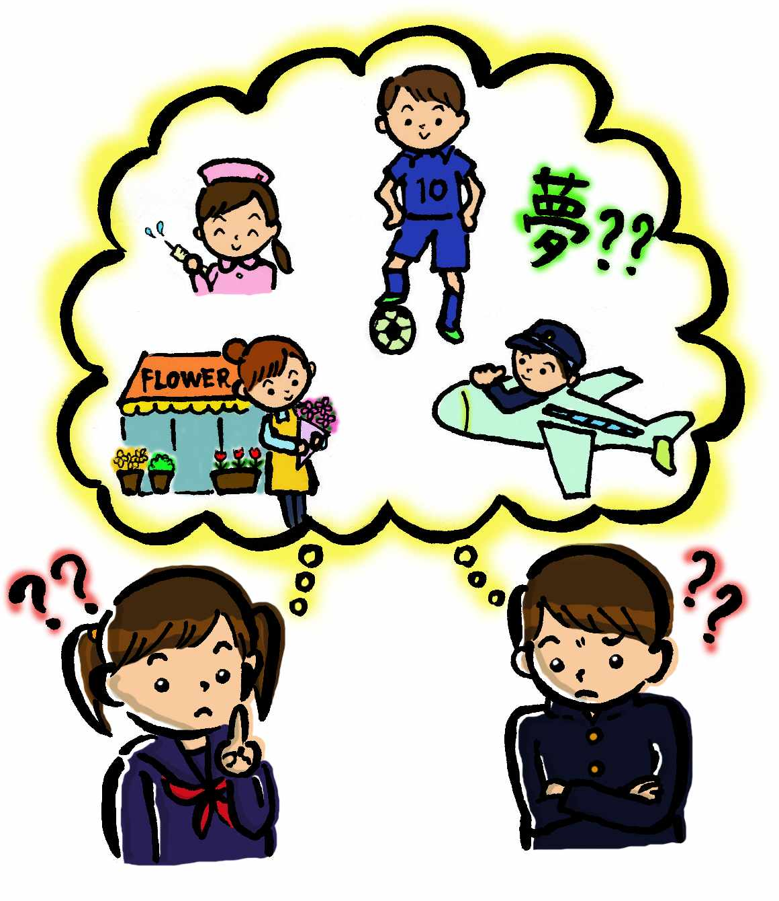
（もっと先のステップではキミの夢を再発見するヒントについて書いていくからね。もうちょっと待ってね。）
キミは、一方では、お父さんお母さんの希望や期待に応えたいと思った。学校や塾で一生懸命がんばって、習い事もしてきた。部活ももちろん（内申書に響くしね。）
でも、お父さんお母さんの言うとおりにいい学校に行けるように、進学校に入学できるように、一流大学にいけるように努力してきたけど、なぜかまったく成果があがらない。成績もよくならない。それどころか勉強も頭に入らない。
三者面談では、担任の先生は他人事のように「この成績はちょっと心配ね～」と言っていた。確かに、マズイと自分でも思う。でもどうすればいいのか分からない。
あ～あ、学校にも行きたくなくなってきた。朝起きるのがつらくなってきた。人と会うのもおっくうだ。
でも、これではいけない。マズイ。
クラスメートはみんながんばっているし、自分だけ取り残されそうだ。友だちもそれなりに勉強して、塾にも通い、成績をあげている。このままでは、自分だけ取りのこされてしまう・・・
そんな不安がどんどん広がっていくけど、ノートもテキストを手に取る気には、どうしてもなれない。焦りがドンドンひどくなってくる。不安で夜も眠れなくなってしまった・・・もう、ダメだ・・・（かくして、キミは、いまドン底にいるのかもしれないね。）
さて、では、キミはどうしたらいいのか。
どうしたら、キミはこの状況から抜けだせるのか。
あの前にはあった元気を、キミはどうやって取り戻せばいいのか。
タオおじさんの最初の提案はいたって簡単。
まず、キミのこころと行動をがんじがらめに縛りつけている、その〝呪縛〟を解きなさい。これに尽きる。
えっ？「呪縛」って？
それはね、読んで字のごとし。
キミのこころと行動をしばりつけて、キミがしたいようにさせない、やりたいようにやらせない、太いロープのような、恐ろしい〝呪い〟のことだよ。それがキミを縛りつけている限り、キミにどんなに力があっても動けない。
勉強したくても、やる気がでない。学校や仕事にいきたくても、行く気力がない。キミのやる気をなくさせている呪い。キミを無気力にしている呪い。それをほどかない限り、キミはもとのキミにもどることはできない。
もし、そんな〝呪縛〟が本当にあるとしたら、キミはどうする？
仕方がないとあきらめるかな。何としてでも自由になりたいとして、振りほどこうとするかな。
振りほどいて自由になりたい？
わかった。それでは、まずその〝呪縛〟の正体をキミに教えようか。
（ナニ、もう分かったって？ フンフン。キミは大したものだあ～ タオおじさんはこの事に気づくのに何十年もかかってしまったよ）
キミを縛りつけている〝呪縛〟は３つある。 （もう分かるよね）
・お父さんお母さんのキミへの過剰な期待
・先生や学校がキミに押し付けるルール、学校としての期待
・社会（世間や世の中）が一方的に押し付ける社会の常識や評価
実はそういうものが結託して、まだこの世で十分な知識と経験の足りないキミのこころをがんじがらめにしている元凶かもしれない。全部じゃなくても、一部がそうであることは間違いない。
だからタオおじさんは、この本のはじめのほうで、「みんなにNO ！と言おう」と提案した。
そして、お父さんお母さんのことを、学校の担任の先生や学校のことを、世間や世の中という社会のことを書いた。必ずしもみんなが考えていることが正しくない。そのことをキミに少ししってもらうために、それぞれの欠点を拡大して、すこし大げさに、ちょっと過剰に書いた。
（いや、そうとうカゲキに書いたかも。おかげで、タオおじさんはみんなからの嫌われ者になっちゃったよ）
それはね、キミはお父さんお母さんの期待に応えるためにがんばり、良い生徒になるために先生がたのいうことを一生懸命がんばってきた。でも、今ではそれらの期待や押しつけ人疲れ切ってしまっている。押しつぶされている。
だからね、まず素直で優しいキミの思いこみを徹底的に壊す必要がある と、タオおじさんは、ツクヅクそう思った。ほかにもいい方法があるかもしれない。でも、この本に興味をもったキミは、そこから始めたらいいだろう、とね。
・キミはお父さんお母さんの期待になど応えなくていい。
・学校で良い生徒になるために、先生や学校の言いなりにならなくていい。
・立派な人だ、優秀だ、成功者だと、世の中の人たちや社会に思われなくてもいい。
まず、このことをキミに気づいてほしかった。しっかりと理解して欲しかった。
なにしろ、これが出発点になる。 この事をしっかり理解するだけで、キミのこころは変わってくる。キミの考えや思いは変化してくる。すくなくとも、タオおじさんはそう思っている。キミはどう思うかな？
でもね、タオおじさんが本当にキミに伝えたいこと、提案したいことのエッセンスは、これから書いていくことにあるんだよ。今までのことは〝まえがき〟みたいなもの。これまで書いたことの〝補足〟だった。（えっ？長すぎる！ ゴメンゴメン。そういえばタオおじさんの話はクドすぎる、と小さかった娘にも言われたなあ～）
ちょっと休んで、またもう少し読みたい気持ちになったら、気が向いたときにこの本を開いてみてね。「いやいや、もう十分。あとは自分で考えるから、もういいよ」
もし、キミがこうおもったとしたら、キミはもう大丈夫。キミの悩みや無気力の種はなくなった。これからキミの元気ももどり、また楽しい毎日を送れるよ。（この手紙はもうキミには用済みだよ）
でも、まだ気になることがあったら、気が向いたらまた先を少し読んでね。
ただの中年にすぎないタオおじさん。学者でも評論家でも偉い先生でもない。それを都合よく忘れて、少ないミソをフリフリ、汗をかきかき、まだ知らぬキミに、小学生のような文で手紙を書いた。（ちなみに、タオおじさんの書く字は小学生なみらしい）
そしてキミに〝なぜキミは元気がないのか〟と問いかけた。（エッ！問いかけていない？ゴメンゴメン。でもそんなつもりで書いていたんだけどなあ）その手紙の中で、キミを変えるためには、またキミの元気をとり戻すためには、まず、「みんなにNO ！と言おう」と提案した。
キミのお父さんお母さんの考えや期待が、キミのこころに呪縛をかけている。〝親の期待・押しつけ〟とデカデカと書かれた太いロープ。その太いロープで、キミをがんじがらめに縛りつけている。
呪縛の太いロープに縛られたキミは、もちろん身うごきがとれない。最初はなんとか呪縛のロープをほどこうとした。でも太いロープはビクともしない。何度かトライした。やっぱりダメ。助けを呼んだ。でも、誰もこない。
ぜんぜん動けないキミは、もうどうしようもないと諦めた。抵抗しなくなった。自分にはもうなにもできない・・・キミは呪縛のロープから逃れる希望を捨てた。ロープが逃れて自由になる夢も捨てた。好きなことがもうできなくなった。それを悟ったキミは、夢も、希望も、好きなことをする期待を失っていった・・・
自由になる希望と夢と期待を捨ててしまったキミ。
とうぜん元気がなくなった。勉強する意欲をなくした。学校にいく気力もなくした。朝も起きられなくなった（そりゃあ、そうでしょ）。そして、登校拒否になった（もちろん、そうとは限らない）。
それなら、その呪縛のロープを解くべし！解けなければ、思いきって断ち切るべし！そのためには、キミのお父さんお母さんにNO ！と言おう。キミにそう提案した。（エッ？そんなの忘れちゃった？オイオイ・・・まあ、いいか。何度も書いてやる！）
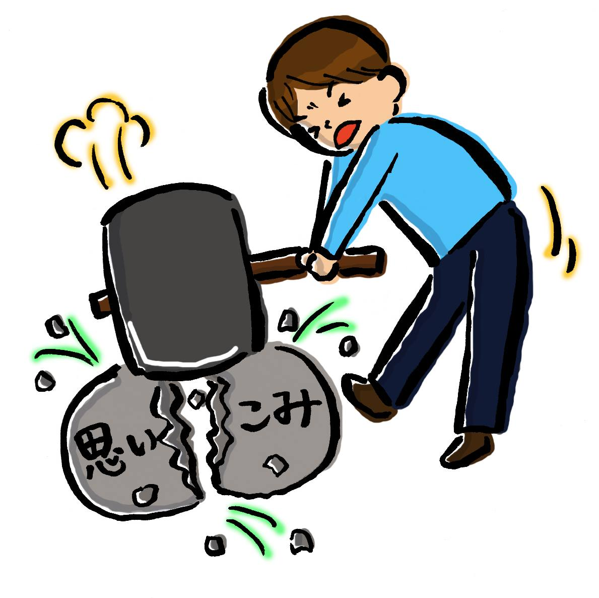
キミの学校の担任の先生や学校も同じこと（多分、塾の先生も似たようなもの）。
学校の担任の先生や学校の目的はなにか。
まず、担任の先生の目的は、クラス全体の成績（クラスの平均値）を上げること。（そうじゃない！担任である私の氏名は・・・という声が聞こえてきそう。取りあえずここでは無視。）
学年主任の目的は学年全体の成績（学年の平均値）を上げる目的。（そんなことは絶対にない！学年主任の目的はそれだけではない・・・確かにね。でもアンタ、本当にそれをやってるの？）
そして、教頭先生や校長先生の目的は、学校船体の成績（学校の平均値）を上げること。学校全体の成績が上がれば世間の評判は良くなる。教育委員会にも大きな顔ができる。教頭先生や校長先生のメンツも立つ。とってもいいことずくめ
そう言葉に出したら、「無礼者！われわれ教育者はそんなゲスなことを考えていない。われわれ教育者は、生徒の健全な発育と知育により、社会に貢献を... 」という怒声が聞こえてきそうだね。
ハイハイ、学校や校長先生の建前は、パンフレットや入学式のごあいさつで拝見しました。その議論はまたの機会に、ネ？いまは、キミに実態を知ってもらうのが大切なんで。
つまりね、キミ、いくら先生方がきれいごとを言っても、ほとんどの学校の至上命題（必ずたっせいしないといけない課題）は学校全体の平均値を上げること。極言すればこれに尽きるんだよね。
もちろん、少ないけど、本当に生徒一人ひとりのことを真剣に真心をもって指導し、教育し、その成長を暖かく見守ってくれる学校もあるよ。進学する時にはそんな学校を選べるといいね
エッ？違うって先生が言っていた。フンフン、それじゃこんどキミの担任の先生にきいてご覧。「先生、このクラスがアタシみたいな勉強のできない、手のかかる子ばかりだったら、クラスの成績の平均値は下がるよね。先生はそれでいいの？」と。
答えはなんだった？
当てようか？
たぶん多くの担任の先生は、ほっぺの筋肉がヒクヒクしだす（顔面神経痛みたいに）。声が震える。指先もふるえるかな。怒りととまどい目の中が一気に広がる。でもそこは担任。そこは教師。プライドを保つため、ふか～い深呼吸をする。
やっと気持ちをすこしおさえることができたところで、やさしいやさしい猫なで声でこういうかもしれない「う～ん・・・○○ ちゃんがもっとがんばってくれると、先生は嬉しいなあ・・・」（ダマサレちゃいかんよ。先生のホンネは「NO ！困るこまる～」。モチロン、学年主任も、教頭先生も、校長先生も似たりよったり。（勇気があったら、今度キミからきいてみてごらん。ただし、逃げみちはかならず事前に確保してからだよ。）
タオおじさんも言いたかあないけど、キビシイけれどハッキリ言うね。
担任の先生（ほかの先生も同じ）も、学校も、キミ１一人のことにはとてもかまっちゃいられない。
使命感にあふれ、熱い心を持ち、熱意ある先生でもね、キミにいくらかまってあげたくても、時間がない。担任の先生はたった一人。キミたちは４０人。キミはその内の一人に過ぎない。キミが考えても無理じゃない？
担任の先生は、ある意味では、現在の日本における教育システムの最大の犠牲者（おお、タオおじさん教育論か！なんで言わないでね。単なる思いつき）。タオおじさんはこころから同情している。（さんざん批判しておいて、今さら同情なんてヘン！って？ マアマア、その訳はあとで話すから(~_~;) ）
でも、同情はするけれども、実態は変わらない。キミにはしっかり知っておいて欲しい。担任の先生はキミの面倒はみたくても見られないし、キミの成績をアップすることもできない。ましては、キミが勉強ができなくなったり、学校にいけなくなっても、決して最後までキミの力になることはできない。したくてもできない。
こころの中でいくらキミのことを気にかけていても、心配していても、なんとかしてあげたいと本心から願っても、実際には担任の先生はキミにはたいしたことは何もしてあげれない。キミのほかにまだ生徒がなんと３９人いる。無理にきまっている。物理的にむり（体は一つしかない）。時間的にも無理（一日の時間は限られている）。それがキミが通っている学校の現在のシステム。日本の教育システムの実態。
問題はね、キミのお父さんお母さんは、キミの教育と指導を担任の先生に丸投げしていること。実際にはキミの面倒をみる時間も余裕もない担任の先生に、すべてまかせてしまっていること。これはいまの日本の教育制度や教育にかんする世間（社会）の常識。
当然、キミのお母さんも同じように考える。みんなもそうしているからいいんじゃない？と疑いもしない。キミの教育（成績や進学）のことは学校にまかせたし、担任もいる。安心あんしん。（で、時間があるので、ちゃぶ台にヒジをついて、昼ドラや韓国流ドラマをみながらのんびりしたひと時。お茶とおせんべい付。あるいは、ママ友たちとファミレスへ。スパゲッティー食べながらおしゃべり。ドリンク・バーはモチロンわすれちゃいけない）
というわけで・・・またまた長いながいタオおじさんの空想を独断と偏見で書いてしまったけど、これが実態だよ。これが、タオおじさんがキミに「先生と学校にNO ！と言おう」と提案する理由だよ。換言（べつな言いかた）をすれば、担任の先生にも学校にも頼るな、ということ。
だってね、困っているキミに、勉強する意欲をうしない、学校にいく気力もでず、あさ起きれなくなり、まだとっても若いのに、生きる意味さえ失い、元気をなくしてしまったキミに、なんにもしてあげれない担任の先生（ほかの先生含む）や学校に、頼ってどうするの？ 無意味でしょ？違うかな？
でも、キミの声が、疑いと不安の声が、きこえてきそうだね。
「お父さんお母さんにNO ！と言って、おまけに学校の先生にNO ！と言ってしまったら、頼れる人がいなくなっちゃう。そしたら、いったいだれに頼ればいいの？ だれが自分を守ってくれるの？ なんか不安で、コワイ・・・」
そうだね、たしかにその通り。タオおじさんはその気持ちがよく分かるよ。だからね、キミをこんなところにホッタラカシテおくつもりはまったくないよ。タオおじさんは、どこまでもキミと一緒にかんがえていくつもりでいるし、もっと先で、いくつか提案したいこともある。だから安心してね。
実はね、もうすこし先のほうで書くけどね、その人たちや学校や社会を、キミが元気になるためのステップにしなさい、と提案するつもりだよ。
元気をとり戻したキミが、やがて自分の好きな進路をみつけ、元気で楽しく前進し、社会に出て、思い通りの人生を生きていくためのステップ。そのステップを踏んで前進していくために、お父さんお母さん、学校の担任の先生と学校、もっと先では大学や就職先の会社、そして社会（世の中、世間）を、キミの夢を実現するためのステップにしなさい。そうキミに提案するつもりでいるよ。
ちょっと補足した方がいいかな。
タオおじさんはね、キミにお父さんお母さんにNO ！と提案しているのは、お父さんお母さんを嫌いになれ、という意味ではないよ。また、担任の先生や学校のことを嫌いになれという意味でもないし、世間や世の中や社会を嫌いになれ、という意味でもない。
お父さんお母さんから独立しなさい。担任の先生や学校から独立しなさい。社会から独立しなさい。それらに頼るな。自分を助けてくれることを期待するな。自分を強くしてくれることを期待するな。そういうことをキミに提案したいんだよ。
これからは自分の頭で考え（どんなに幼稚な考えでもいい）、気分のこころの中の思いや自分の夢（小さくても、大きくても、人から見たら変なものでも）をしっかりともつこと。それは親や先生や学校や会社が押しつけたものではなく、自分のものであることが大切だよ、と。
キミならそれが絶対にデキル！この本をここまで読んできたキミなら、必ずデキル！タオおじさんはそう信じている。そして、いまはまだ元気がなくても、きっとキミはまた自分のこころの奥にしまいこまれた、キミ自身の元気をとりもどすができる。
そのようにがんばろうとしているキミを、タオおじさんはどこまでも応援する。どこまでもキミの味方として一緒にがんばっていきたい・・・そうタオおじさんはキミに伝えたいんだよ。
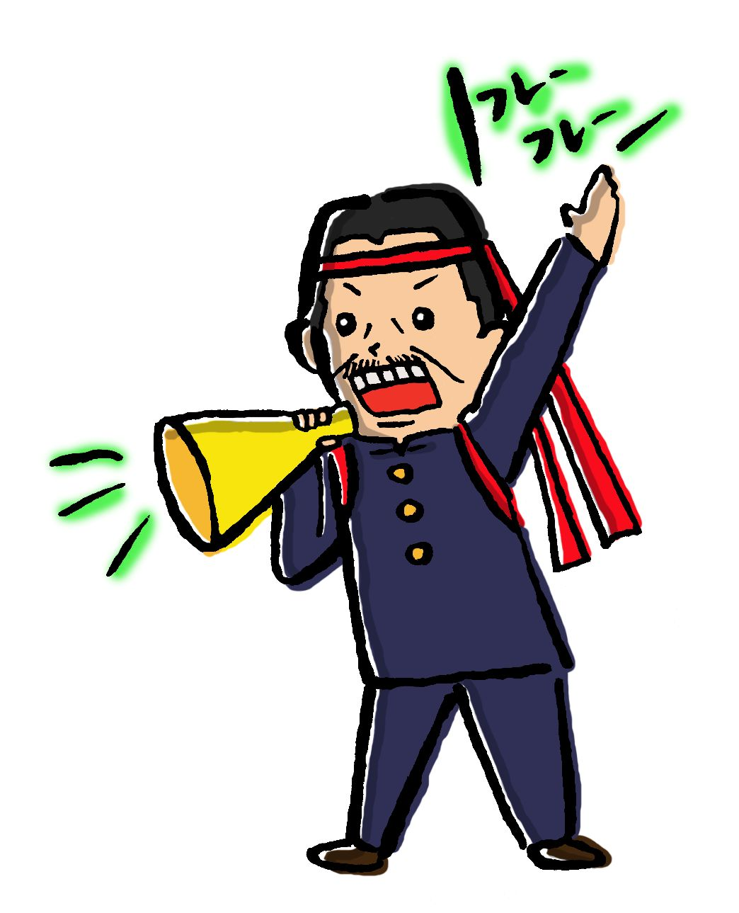
ハイ、どうかな。すこし安心してもらえたかな。
じゃあ、もう少しがんばって、先にいこうか
なにがキミの元気をうばっていたのか。
なんかもやもやしてハッキリわからないその〝なぜか〟。その正体について、タオおじさんはキミに話してきたね。
キミを縛っている〝太いロープでできた呪縛〟ある。
キミのこころの自由と人生を縛りつけている、４つの呪縛がある
それを解かないと。それを断ち切らないと、キミの自由はない。キミがもっていた元気はもどってくることはない。キミの毎日は、きのうとおなじように、明日も無気力に続いていくだけ。
その先でキミをまっているのは、悔いだらけの末路（おわり）。お墓に入るまえの、おそすぎる後悔。ひとり淋しく死んでいく、哀れなキミの未来のすがた。
やがて、年月がたち、朽ちはてたキミの墓標の上には、秋の落葉がハラハラと舞いおちるだけ... （Autumn Lives のメロディーが聴こえてきそうだなあ・・・ン？わからない？世代が違うのお～）
そうなってたまるか～！
その通り。ここで諦めちゃアカン。絶対にあきらめちゃアカン。なんとかなるかて、がんばりいや！ なんとかなるサカイ。泣いちゃアカン。きっとなんとかなるデ！ おめえにゃあ、オラがついとるヨ。タオおじさんがしっかりついとるからノ～。
（うんうん。やっぱり関西弁がいいね～こうリキいれるところは。なに？大阪弁と方言がメチャクチャ？いいのいいの、ふんいき出るでしょ）
まあ、ともかく、がんばってキミを縛りつけている、その太い呪縛のロープを断ち切ってやろう。そのために、キミの手にあるその大きなスルドイ剣を、今こそサヤから抜き、呪縛の太いロープをおもいっきり断ち切れ！そう言ってきた。
（「剣で断ち切れ」なんて書いてなかった！ アッ、そうだっけ？！言い忘れただけじゃよ。まあまあ、ささいなことはいいじゃあない(~_~;) ）
じゃあ、具体的にはどうすればいいの？
そう、キミはきいたよね（ん？きいていない... ）
まあ、ともかく。具体的にはね、みんなにNO ！と言おう。
キミのお父さんお母さんに。先生や学校に。世間や世の中といわれる社会に。そしてキミ自身の思いこみに。そうタオおじさんはキミに提案してきた。
それは、なぜか。
なぜ「みんなにNO ！」ということが、キミの自由をとりもどすために必要なことか。なぜ、それでキミの元気がもどるというのか。タオおじさんは、保障できるのか。（いやあ、そう言われると・・・７日以内なら返品可、なんて言えないしね～。取りあえずもうちょっと先まで読んでみてね。ハイ、先にすすむよ～）
その回答の典型的なモデルがここでする話。
実話。作り話ではない。
昔むかし、フランスに「サルトル」（猿をトル猟師、ではない！）という哲学者がいた。作家稼業などもやっていた。詩もたまに。
どんな人かというと、これがおもしろい。ちょっと日本版Wikipediaから一部引用させもらおうか。
「サルトルは転校先のラ・ロシェルにうまく溶け込むことができず、後に挫折の年月と述懐している。この時期のエピソードとしては、母の金を盗んだことで祖父から見離されたことや、美少女を口説こうとして失敗し、自身の醜さを自覚した・・・」
この不良少年。あとになっても試験に失敗したり、いろいろなトラブルを起こしていく。子どものころから手の付けられない〝どうしようもない子〟の典型だったらしい。
いまの日本だったら・・・ キミのお母さんだって〝いいかげんにしなさ～い！〟とヒステリックな、近所中にとどろくような怒声を張りあげるだろう。超マイペースな悪ガキだった。いい加減ででたらめなヤツ。
ところが、この悪ガキ、どうしようもない子。みんなの迷惑児。生長してからなんとマジメな人になった（マジ？）。そして今では、死んで相当たっているのに、インテリゲンチャを自認するほどの人であれば知っている。世界有数の哲学者、作家、評論家であることを知らないはずはない。知らない人はモグリ。（・・・らしいよ。タオおじさんはエラクないから、詳しくはしらない）
おっと。タオおじさんはその悪ガキから天才に生まれ変ったサルトルさんの話をしたいんじゃない。
このサルトルおじさんが書いた『家の馬鹿息子』という本がある。これがとってもおもしろい。興味ふかい。
いまのキミのおかれている状況、これについてじっくり考えるためのとてもいい材料になる。キミが自分を縛りつけている、太いロープを断ち切るのはなぜ必要か。キミが呪縛から解放されたら、キミはどうなっていくのか。そのためのヒントが書いてある。
でもね、この手紙は長ったらしいし、読むのは大変。
そこで、考えた。そうだ。タオおじさんが敬意を表している教育学者がこの本の内容について自分の本の中で書いている。とっても読みやすく、わかりやすい。そこからキミに伝えたいポイントだけ、抜粋させてもらおう。
この教育学者、とっても優れた学者でもある。考え、思ったことを、いっしょう懸命に実践する教育者でもあった。キミにはぜひ会わせたい大人の一人だ。（タオおじさんも個人的にあったことがないけどね）
と言う訳で、次から引用。少し長いけど、とっても大切な部分。気がむいたら、キミもこの本読んでみてね。（注：強調文字はタオおじさんがした）
「わたくしはふとしたきっかけで、「できない」子どもについての認識をあらためてしまったのである。 サルトルの『家の馬鹿息子』を読んだことによる。この馬鹿息子とは、『ボヴャリー婦人』『サランボー』『感情教育』などの作者として有名なフローベール（一八二一～一八八〇）のことである。それはどういうことからか」
この伊藤隆二という人はね、日本の教育学者。アメリカにも留学に行き、西洋的な考え方もよく知っている。日本の子ども、つまりキミたち生徒・学生にとってはどのような教育が一番大切か。いっしょうけんめい研究した。それを教育者としても実践してきた。日本には本当にすくない素晴らしい人だよ。
この人の本は大人向けだけど、これから生長する子どもや学生への深い愛情が感じられていて、読んでいると、とても気分が良くなる人だよ。
では、引用の続き。
「フローベールはことばもおくれ、学校へ行っても字を書くことが、なかなかできなかった。外科医であった父は、息子が学校では成績が少しもふるわないのをみて、「馬鹿息子」だと考えた のである。」
いるね～ こんなバカ親。
どこにでも。日本でも。もしかしてキミの身近にも。
自分がすこしばかりいい企業の管理職である。成功してお金がある。社会的地位がある。それだけで、〝オレさまが考えることがすべて正しい〟と思いこむ。子どもの気持ちや考えや希望？そんなことカンケイネ～。オレがボスだ。黙って従え！（このパターンね）
そういうバカ親、おろかな大人。
まわりの人たちだけでなく、大切な家族にも、自分のかんがえと基準を、きょうせいする。押しつける。おまけに、たかが学校の成績で評価したり、否定したりする。いますねえ、そういう人。それもたくさん。（キミのお父さんお母さんがそんなバカ親でないことを祈るよ。アーメン）。
もちろん、このタオおじさんも、もともとはそうだった。（かもしれない(~_~;)
また、脱線。本線にもどろう。
「事実、フローベールの学業は、遅々として進まなかった。どうにか義務教育だけは終えることができたが、それ以上の進学は何度かのアタックを試みたにもかかわらず、成功しなかった。それどころか、かれは学校の試験のたびに発作をおこしたのだ。」
このフローベール君。いまの日本の学校だったら、きっと低能児あつかい。あるいは不適応障害児か。すくなくても問題児。小学校さえ卒業できなかっただろうね。（日本は中卒までは義務教育だから、ま、そんなことはないか）。本当はとんでもない天才かもしれないのに。
その、フローベール君。中学だったらどうなった？
クラスメートはもちろんシカトしただろうね。ウザイ、シッシ、アッチイケ、チカヨルナ、と。
担任の先生たちにとっては言うまでもない。問題児。かんべんしてくれ～ってところかな。
「とてもじゃございませんが、こんなアホな生徒にはかかわれませんワ（この部分はこころの中のツイッターにのみアップ）」
「アタクシ、ほかのたくさんの生徒たちの面倒もみないといけないんザマスの。」
これ見よがしに腕どけいをみながら、「それでは。時間ありませんから。シツレイ・イ」メガネを右手の平でお上品にかるくあげながら。ツンと澄ました顔で。サイナラ～
三者面談にきたお母さんとフローベール君をさむい教室にのこし、担任は去っていく。かっこよく。後ろをふりむくこともせず... 「早く帰ってくれ」、とこころの中でつぶやきながら（オイオイ、本音はいつもツイッターかい？）
学年主任や教頭先生？
もちろん、フローベール君の名前を生徒名簿にさえのせたくなかっただろう。校長先生にいたっては、「さっさとべつな学校に転校させろ。本校のハジだ！」とコッソリと裏でフローベール君の〝マッサツ指令〟を出しているかも...
おお～。気のどくなフローベール君。
文化花咲く世界の都１９世紀のフランスでは馬鹿息子。
でも、２１世紀の世界最先端技術をほこる日本でもダメ生徒。
かわいそうなフローベール君の将来やいかに。
続きをみたいと思わないかい。そう？では、引用続き。
「父親の嘆きはさらに広がっていった。医者として後を継がせたいと思っていた父 はつきっきりで、勉学の面倒をみたのだが、息子のほうはさっぱりだったからである。十八歳のとき、医者になる望みがもてないと知ると、父は今度は、パリで法律の勉強をすることを、息子に強要 したのだ。」
いやあ、ここまでくると、もう笑うしかない。
１９世紀のおろかな、あまりにもバカバカしい教育の失敗。２世紀もたっているのに、いまの世界最先端を言っている日本のバカ親たちは、また繰りかえしている。歴史はくり返す、とは言うけれど。
（キミのお父さんお母さんのことを言ってるんじゃないよ、モチロン一般論だよ。一般論）
いくらくりかえしても自分の過ちに気がつかない。
気づこうともしない。子どもが登校拒否になったり、引きこもったり、いじめなどで自殺したり、非行に走ったりするまでは。いや、そのようなことがおこっても。
だって、最悪のことがおきたとする。
かならず親は学校の責任にする。学校は、これまたかならず家庭の問題、親の責任にする。ニワトリが先かタマゴが先か。嫌煙轟轟（けんけんごうごう）。終わりなきバトル。
そのうち、ケンカ疲れした双方は、手打ちを考える。大人の常套手段（つごうのいい妥協）。大人の流儀。大人のマナー。
そうですね・・・。考えてみれば、誰にも責任はない。きっとあれがアノ子の運命。悲しいけれど、しかたがないですね。そうですね・・・（かくして、メデタク手打ち）
そうだワ、みんなでかわいそうなアノ子の冥福（めいふく。さ迷って出てくるなよ、という願い？）を祈りに行きましょう。（マスコミも来ているし）
かくして、先生は、キミをシカトして無関心だったクラスメート。こいつらを大勢ひきつれて、キミの仏前に花束をそえる。
どうせ、とつぶやく。黒い縁取りの写真のキミ。ぜったい反論できないことを知っている。（だって、死人に口なしというじゃあないか）。少しあんしんしつつ、キミのお位牌に手を合わせる。ポクポク、チ～ン。
（「勝手に殺さないでよ～！」 オッ！キミまだ生きてた？ゴメンゴメン(~_~;) ）
ともかくじゃよ。キミにはその両目をしっかりと開けて、気がついてほしいいんだよね。このオロカな大人たちの無知に（もちろん、とても聡明で愛情の深い親もいるよ）。それが呪縛をとく、一つのヒントだよ。
さて、フローベール君のことが気になってきたね。どうなっていくのか、続きをみようか。
「そんなある日、フローベールはヒステリー発作をおこして倒れてしまったのである。ボン・レヴェックへ行くために、兄とともに馬車を駆っていたとき、突然、。手綱をはなし、兄の足もとにころがっていったのである。二十三歳のとき のことである。
その病気の療養の治療のために、父は勉学の面倒をみることをいっさいやめ、いや将来をあきらめ、あとは放任したままだったという。 」
きのどくなフローベール君。とうとうお父さんから見はなされた。（タオおじさんの目には涙。鬼のかくらんか）たぶんお母さんからも。兄弟からも。
フローベール君がいなくなった学校は、もちろん大喜び。担任の先生も教頭先生も校長先生も。こころの中ではホッとしたことだろう。バンザイ。やっと、やっかいものがいなくなった。これが共通認識。
ところで、親からも学校からも見はなされた、気のどくなフローベール君。どこにいったのだろう。
世をはかなんで川に飛びこんだか。フリーターとなり、隅田川ぞいに青いテントを張ってホームレスになったか（日本じゃないって？わかっとるよ）。
それとも・・・なんか不吉な予感が。
ところが、だ。
「この放任（じつはフローベールにとっては、はじめてのいっさいの束縛からの解放であった のだが）によって、 フローベールは、はじめてかれ本来の才能を発揮することができた のである。家にどじこもって、ありとあらゆる文学書を読み、夢想にふけり、そしてつぎつぎに作品をかいていったのだ。」
さあ、ここがこの物語のクライマックス。注目！
キミにはもう分かってきただろうね。
そう、親の呪縛。
これから解放されたフローベール君。無気力なフリーターにならなかった。隅田川ぞいの青いテントのホームレスにならなかった。もちろん、自殺など。
その反対。フローベール君、親の呪縛から解放されたら、こころがノビノビとしてきた。イキイキとしてきた。そしたら元気がわいてきた。ワーイワーイ！バンザ～イ！
ボクはこれで自由だ～。好きなことができるゾ～
親の呪縛をとくだけで、とっても元気になることができる証拠の一つ。
でも、実はこんな例は世界中にたくさんある。モチロン日本でも。むかしも、現在も。
さて、イキイキと元気をとりもどしたフローベール君、本を書きだした。
これ２３歳頃のときみたいだね。たぶん、フローベール君は本が好きだった。いつか書きたいと思っていた。それが、親から叱られ、じっとがまんして耐えつつも、こころの奥にいだいていた、小さな夢だった。
でも、偉いお医者さんのお父さんは「医者になれ！」と強制した。それがダメなら「弁護士になれ！」と。
フローベール君、どちらも嫌だった。でも親思いだったのか。気が優しすぎたのか。親の期待や希望や押しつけに反発できなかった。ともかく、嫌とはいえなかった。
これはキミとおなじかもしれないね。日本の多くの悩んでいる子たち、元気を失っている子たちは、似たような体験をしている。いまも、そうかもしれないね。
でも、いつもやりたいことをこらえ、やりたくないことをしてがまんしていると、こころはだんだん弱ってくる。元気がなくなる。その結果、体もよわってくるんだよね。
フローベール君の場合、これはヒステリー発作。キミの場合はうつ病かな（うつにまだなっていないよ！って、おうおうまた早とちりしたね。ゴメ～ン。）
お父さんお母さんだったら、キミが病気になったらきっと悲しむ。キミはモチロン、悲しんで落ちこむ。自分はきっともうダメだろうなあ。再起できないかもなあ。
ところがね、それはカン違い。大いなるカン違い。
実はね、病気はチャンスなんだよ。親の呪縛から抜けだす。行きたくもない学校にいったり、したくもない勉強から逃げ出すチャンス。そして、キミのこころのそこからのメッセージかもしれない。
このままじゃ、苦しいよ～、というメッセージ。その心の苦しみが体に表れたもの。それがキミの病気かもしれない。
フローベール君にとっては、まちがいなく自分の元気をとりもどし、自分をとりもどすチャンスだった。ラッキ～！フローベール君のよろこびの叫びが聞こえてきたぞ。（ン？そら耳？そうなんかなあ）
よかったなあ、フローベール君。親の束縛（この本では呪縛と書いた）から逃れられて。オメデトウ！ところで、その後、フローベール君はなにをしただろう。続きをみよう。
「しかも、かれは遅筆ではあったが、ひとつひとつのことをやりとげる情熱は部類のものであった。代表作『ボヴャリー婦人』は六年、『聖アントワーヌの誘惑』は、たびたび想をあらため、文章を練って、決定版ができたのは着手されてから、じつに二十五年ののちであった。』
きっとフローベール君の偉いお医者さんのお父さん。フローベール君が〝ひとつのことをやりとげる部類の情熱〟をもっていることを知っていたら、激怒したことだろう。「なぜおまえは医者になるためにその部類の情熱を傾けなかったんだ～！」と。
イヤイヤ、お父さんね。フローベール君は、好きなこと（この場合、本を書くこと）であったからこそ、部類の情熱をそそぐことができた。いくらお金と地位と名誉がついてまわるからといって、卒業証明書や医師免許をお金で買って、むりに医者にさせても、無駄。
まちがいなくフローベール君は、やぶ医者で終わり。それも一生、こころの中にやり場のない不満をためてね。人生をうらみ、アンタを軽べつし、アンタの墓石をけとばすことまちがいなし。（タオおじさんが保障する。必ずそうなる）
さて、最後に。
この本の中でもとても大切な一説を引用して、キミにじっくり考えてもらいたい。コメントはつけないよ。キミのいまおかれている状況。それを、フローベール君のおかれた状況にオーバーラップさせてみてね。じっくり読んで、考えてみてね。
「フローベールの成功は、親の教育の成果なのではなく、それとはうらはらのものだった ことに、注目しなければならない。わたくしたち教育心理学者にとって、フローベールの才能発見と、その豊かな発露は、意表をつくものであった。」
「親があの手この手をつかって、息子を「できる」こどもにすることを試みたのであるが、それはなんらの効果もあらわさなかったばかりか、かえって病気に追い込んでいった のである。」
「かつてルソーが『エミール』のなかで、もっともすぐれた教育 は、と自問し、それは何もしないことである と自答した。教育しようという意識がなくなったときが、もっとも教育的であるというのが真実であるならば、もともと意図的ないとなみだといわれてきた教育を、根本から考えなおす必要がおこってくる。」
（以上、『育つ才能 伸びる個性 ― 世界の偉人５０人の子ども時代』 伊藤隆二 PHP 文庫より数カ所抜粋）
さて、ここまで読んできたキミ。
タオおじさんがなにを伝えたかったか、もう少しわかってきたかな。
なぜ、「みんなにNO ！と言おう」とキミに提案したのか。
キミを縛りつけ、キミの自由と元気をうばい、あるいはキミを病気に追いやった、その呪縛の正体。それをタオおじさんは、キミに何度もなんどもくどく、くりかえしてきた。その意味もわかってきただろうね。
ここでもう一点だけ、いくら強調しても強調したりない大事なポイントがある。それはなにか。それをキミに考えてもらいたい。
キミに２つの質問をしたい。
１ 「フローベール君は、親の束縛からはなれることができたとき、本を書きはじめた。なぜ、本を書いたのだろうか？」
この答え、キミには分かるかな？
キミにとってもたいせつなクイズだよ。
２ もし、キミがお父さんお母さんか、学校の先生や学校、会社や世間の呪縛（束縛）から自由になったら、キミはどうする？ キミはなにをしたい？
よーく考えてみてね。
では、ここらで休憩にしようかね。おつかれさま～
キミは今日はコーラかな。それとも音楽でもききながら、寝そべるか。
タオおじさんは、例のごとく、熱いコーヒーをいれて、パイプをくゆらす。あのプカプカと浮かんでいく煙をみるのが好きでねえ～
ナニ？タバコは体にワルイ？禁煙が奨励されているって？ノーノー。
このタオおじさんには、「そんなことカンケイネエ！」（しまった、娘に聞かれたかな？秘密だよ。秘密(~_~;) ）
では、もしまだ元気があったら、キミが続きを読みたいと思ったら、またアトでね。（モチロン、もう十分わかった、と思ったら、もう読まなくていいよ。卒業、卒業！またいつかね～）
次からは、このクイズの答えにたいする説明について書いていくよ。
タオおじさんはキミに２つの質問をしたね。
１．「フローベール君は、親の影響から離れることができたとき、本を書きはじめた。なぜ、本を書いたのだろうか？」
２．「もし、キミがお父さんお母さんや、学校の先生や学校、会社や世間の呪縛（束縛）から自由になったら、キミはどうする？ キミはなにをしたい？」
キミの回答はなんだろうかね～タオおじさんは興味津々だよ。
ぜひいつか機会があったら教えてほしいと思わっているよ。楽しみに待ってるね。
ここまで、タオおじさんは次のことを言ってきた。
キミのお父さんお母さん。担任の先生や学校。世間や世の中という社会・・・
そういう存在が結託して、あるいはそれぞれが、キミを太いロープの呪縛で縛りつけている。期待。押しつけ。学校の常識。世間の常識。そういう色とりどりのロープで編んだ、太い呪縛のロープ。
その太い呪縛のロープが、キミの元気をうばっている。キミの自由を奪っている。そしてキミの勉強の意欲を失わせ、学校や会社にいく気力をなくさせ、生きる気力も楽しみも奪ってしまった。
だから、キミはその太い呪縛のロープを断固として断ち切れ。そうしないとキミは意欲も気力も元気も取りもどせない。くら～いどんよりとした日々を今までのように過ごしていくしかない。そう、キミに話してきたね。
最初は半信半疑だったキミも、フローベール君の話をよんで、どうやら、なぜタオおじさんがなんどもそのことを強調してきたのか。なるほどね、と分かった。あるいは、だんだん分かってもらっているようだね。
ところで、フローベール君。医者になれ、弁護士になれという、一方的な親の期待や押しつけや重圧がなくなったとき、アラ不思議。
それまではダメ人間で、なにに対しても意欲もなくて、勉強する気力もなく、ぜんぜん元気がなかったフローベール君。とつぜん、生まれかわったかのように、どんどんと本を読みだした。昨日の無気力はどこへいった？ そんなこと、オラ知らねえ！（と言ったかどうかタオおじさんは知らないけど）
ともかく、フローベール君、人間が変わったように精力的に読書をはじめた。そして、そしてやがて本を自分で書くようになり、とうとう素晴らしい作家となってしまった。
この奇跡。このマジック。なんとも摩訶不思議（まかふしぎ。まったくわからない）。
でも、事実。歴史的な現実。そういうことが起きる。それが人間。それが世のなか。キミにもとうぜん起きてもおかしくない。
いや、タオおじさんは、そのミラクル・マジックがキミにも起こることを知っている。預言しよう。「キミは変わる！」と。「昨日までのキミと、明日はまったくことなるキミに生まれ変わる！」と。
キミもタオおじさんの予言があたるように、協力してね。じゃないとタオおじさん、ウソツキとして生涯をすごすこととなる。成功したら、マックの一番高いハンバーガーをおごってあげよう。これ約束（タオおじさんも男のはしくれ。約束は守るよ）
ところで１．の質問。ちょっとキミにかんがえてもらいたいことがある。次のうちの２つの回答のうち、キミはどっちだと思うかな。
・フローベール君は、親の押しつけやプレッシャーから自由になった。だから、も元々やりたかったけど隠していたこと、こころの奥にひそかにしまっていた、本を書きたいという夢を実現できた。
それとも。
・フローベール君は、親から医者になれ、弁護士になれと親の夢や期待を押しつけられた。強制的にいやな勉強をさせられたり、学校に行かせられたりしていた。その頃、自分に夢（好きなこと。やりたいことなど）があることなんて、思ってもいなかった。
でも、親の押しつけやプレッシャーから自由になったとき、こころも自由になった。そうしたら、自分のやり
たいこと、好きなことが自然に心にこみ上げてきた。そして自分の夢をみいだし、本を書いた。作家になった。
キミはどっちだと思うかな？
実はタオおじさんもわからない。だって、フローベール君と会ったこともないし。ましてや話したこともない。
キミは好きなことがあるの？ヤリタイことがあるの？キミの夢はなんなの？いつからそんな気持ちをもっていたの？小さいころから？１５才のころから？それとも親の期待や押しつけから自由になってから気づいたの？そんなこと、タオおじさんも知るはずネエ！（でしょ？）
でもね、まちがいないことは、次のこと。
フローベール君のこころの中には、まちがいなく、「本を書いて作家になる」という夢がまちがいなくあった。やりたいこと、なりたい自分の種がこころの中にはあった。そのことに、フローベール君、早くから気づいていた。だから、お医者さんにも弁護士にもなりたくなかった。
あるいは、フローベール君のお父さんお母さんがあまりにも強く親の期待を押しつけ、プレッシャーをかけたので、本人は気づかなかったのかもしれない。自由になるまでは。自分がしたいことをできるような環境になるまでは。
でも、確かなのは、「本を書いて、作家になる」という夢はず～っとフローベール君のこころの中にあったということ。幼い時からフローベール君が意識していたか、否かに係らず。
自分のこころの中にないものは、環境がどんなに変わっても出てくることはない。これはまちがいないこと。それはちょうど庭に植えるようなきれいなバラの花のタネのようなもの。
バラの種は小さな小粒。どうみても花には見えない。種を割ってみてもその中にはない。顕微鏡でみても同じこと。美しいバラの花をみるためには、種を土のなかに植えなければならない。そして水をやり、太陽の陽にあてながら、時間がすぎるのを待つ。
その時がくるまえに、バラの花を咲かそうとしてもむり。その時をまたなければならない。やがて、しかるべきタイミングがくると、バラは真っ赤なキレイな花をさかせる。種とは似ても似つかないキレイな自然の芸術作品をキミはみることとなる。
フローベール君の場合。その夢が姿をあらわし始めたのは、親の期待やプレッシャーからのがれた時から。
だが、すぐにはフローベール君の夢の花は咲かなかった。彼はまず好きなことから始めた。閉じこもって本を読むこと。読書。
きっとフローベール君は本を読むのは好きだったんだね。好きなことの中には、多くの場合、実現したい夢の片りん（カケラ）がある。やりたいことの中にも。なりたい自分の中にも。それはキミも同じことだよ。
フローベール君はいろんな本を読んだんだろうね。
小説に限らず、手に入るいろいろな好きな本。その中でも小説が一番気にいった。小説を読みふけった。（エッ？なぜそんなこと分かるのって？まあ、そんなこといいじゃあないか。続けるよ～）そして、いつしか、自分も小説を書きたいと思うになった。
やがてフローベール君。小説を読むのは楽しいけれど、自分でも書こうと思った。自分のヤリタイことが形をとりはじめた。バラの花の芽が見えてきた。
ためしにペンをとり、インクをつけて白紙にむかった。最初からステキな文章なんかかけるはずはない。もちろん、情熱あふれるロマンスなど、すぐにはとても無理。ふ～。フローベール君のため息が聞こえてくる。でも、そこは好きなこと。やってみたいこと。フローベール君はあきらめないで、がんばりつづける。
医者や弁護士なる勉強は、興味も関心もなく、もちろん好きじゃなかった。だからいくらがんばってもすぐにあきてしまう。続かない。いくらお尻をペンペンされても、できない。でも、本を書くことだったら、大好き。いまは一行さえまともな文章をかけない。でも書いてみたい。
かくして、フローベール君はがんばった。がんばり続けて、とうとう小説を書きはじめた。そうしたら、おもしろいなんの！いちどやったらやめられない。中毒になってしまった。（好きなことをやっていると、苦労も楽しみの一種になるんだよ。覚えておいてね）
長い小説なんかの時は、６年間もかかった。書いては直し、書いては直し。苦痛なんかじゃあないよ。だって、好きなことだもの。やっていて、とってもおもしろい。三度のメシより好きになった。とうとう６年間で名作を書き上げた。
フローベール君の夢は、実現した。フローベール君のこころの中に植えつけられていた種は、長い時間がかかったけれども、とうとう花ひらいた。これ、実話。こんなケースの実話はたくさんある。外国にも日本にも。
さて、キミは、このことをみて、どう感じる？ どう思う？
なぜ、フローベール君は小説家になることができたのか？
そのキッカケとなったのはなにか。そのキッカケで、フローベール君はなにをしたのか。
親からはバカでアンポンタンあつかい。もちろん、先生や学校にとっても同じこと。無能で病気。そんなフローベール君。どうやって自分の好きなことをみつけ、やりたいことをやり、自分の夢を発見し、それを実現していったのか。
これは、いまのキミにとってはとても参考になるケーススタディー（事例）。この問いを解くことが、いまのキミの生きる上での、至上命題（なんとしても解かなければならない、課題）。
このキミにとっての至上命題。とくと考えてみてくれ。
時間がたっても日が暮れても。夕食の時間がきても。夜が更けても。窓の外から朝日がさしはじめても。しっかりと考えてみてくれ。自分の身にあてはめて、考えてくれ。
フローベール君の物語を読んで、キミはどう感じたのか。いやな感じがしたか。うれしくなったのか。ワクワクしたのか。それともなんとも思わなかったのか。なんでもいい。いまはね、キミが何をかんじているのか、それがとっても大切なんだよ。
ここでは、とりあえず、タオおじさんの感想をかいておこうか。
キミの考えかた、感じたか、とらえ方とはちがうかもしれないけどね、キミの参考までにね。
タオおじさんは、フローベール君の物語を読んで、こう思った。
フローベール君の「人生のシナリオ」が変わったんだ！ とね。
最初は、フローベール君のお父さんお母さんが、親である自分たちの期待と願望でフローベール君の人生のシナリオを作りあげた。
家業をついで「フローベールよ。医者になれ。それがキミの役目だ」。それがダメだと分かると、社会的な地位と名誉のある「それなら、せめて弁護士になれ。医者ほどじゃないけど、お金も儲かるし、社会的な地位と名誉もそこそこ手に入る」。つまり、社会的エリートの仲間入りをしろ。これがフローベール、お前の生きる道だ、と。
そしてフローベール君はどうした。
医者になるのはいや。弁護士にももちろんなりたくない。でもお父さんお母さんの言いつけだし、期待。自分は親に逆らえない。だって育ててもらっているし、養ってもらっている。怒らせると、コワイし（これ今の日本でも同じこと。）
それで、仕方なく、親の定めたシナリオに従おうとした。優等生になり、秀才になり、医者になろうとした。
でもダメ。どうしても気持ちがついていけない。そんな勉強メンドイ。興味がわかない。だからどんなにがんばっても成績もあがらない。それどころが、自分でもどうしてかわからず、どんどん元気がなくなり。無気力になった。ヒステリー症状まででるようになった。あげくの果てに、病気でブッたおれてしまった。
なぜ、こうなかったか。答え。それは親の作ったシナリオのなかの人物を演じようとしたけど、自分はそのようなタイプでもなく、そのような才能も持ち合わせていなかったから。（キリがないので、強引だけど、こういう結論にしておこうね。とりあえず。）
フローベール君の親は、結局は失敗したんだよね。
フローベール君の適性や向き不向き、やってきたいこと、好きなことについてまったく知らなかった。フローベール君にインタビューもしなかった。やってみたい役柄をききもしなかった。独断と偏見。自分たち大人の屁理屈と考えかたで、親の期待に応えろと迫った。
キャスト（役者）がほかにいないので、「お前がやれ。医者の演技をしろ」。「医者がダメなら、弁護士の演技をしろ」と。フローベール君に一方的にせまった。親の期待にそうような、そんな演技をしろ、と。
フローベール君のお父さんお母さん、舞台監督としてはとうぜん、失格。演出家としても。こんなヘボ監督じゃあ、どんなにがんばってもハリウッドの映画監督になどなりっこない。それどころか、田舎のドサまわりの一座の座長もむり。
ともかく、役者フローベール君。
お父さんお母さんがつくり、上演しようとしていた舞台を降ろされた。いっしょうけんめいお前を育ててきたのに。教育費や食事代をいっぱい注ぎこんだのに。マッタク。テメエなんか使いものにならない。初歩的な演技もできない。
おまえの顔もみたくない。とっとと、どこかへ行きやがれ！
かくして、役者フローベール君、お父さんお母さんが監督や演出家を独占している舞台からおろされた。楽屋からも追いだされた。
行くあてもなく、真冬の夜風が吹きすさぶ夜中の歩道をトボトボと去っていった。（カワイソウだねえ。涙）。フローベール君はホームレスになるしかない。いや、世をはかなんで、自殺するかも。
ところが、人生はじつにおもしろい。
それがフローベール君の転機となった。チャンスとなった。
親の期待からに応えられなかった自分。お父さんお母さんから将来の見込みなしと見捨てられた自分。悲しくるかと思いきや、なんと気分がスッキリした。ぜんぜんさみしくもない。
ヘンだなあ。でも、家族のプレッシャーがなくなったら、肩の荷がなくなった。気分も晴れ晴れ。気分もウキウキしてきた。人生って、こんなに楽しかったっけ？と、不思議に思うフローベール君。
なにをしても良くなり、親の期待やプレッシャーから自由になったフローベール君。こころがだんだん元気をとりもどしてきたら、ちょっと本でも読んでみたいなあ、という気になった。そして好きな本を片っ端から読みはじめた・・・（あとはキミの知っている通りだよ。ここではくりかえさないよ。）
結論。
これはとっても重要だよ。いくら強調しても足りない事実。
フローベール君の人生は、親の期待と押しつけとプレッシャーで作られた「親のシナリオ」がなくなり、フローベール君が自分自身で描きだした「自分のシナリオ」が見えはじめたときから、変った。
これは他人事じゃないよ。まさにキミの物語でもある。
キミの人生もね、キミが「自分自身が描いたシナリオ」で生きはじめるとき、まったく変わってしまう。奇跡が起きる。ミラクル・チェンジ。
キミの無気力は消えさり、なにをするにしても意欲も気力も出てくる。そして、そのシナリオに従っていきていくのがどんなに大変でも、キミにはスポーツを楽しむように楽しい努力となる。だって自分のシナリオ。自分のプラン。あきもしないし、苦痛でもない。
だからね、ここでなによりも大切なことは、キミがどんなふうにいきたいのか、なにをやりたいのか、どんな人間になりたいのか、その「キミのシナリオ」を描きはじめることだよ。
それが、これからのキミの人生の大事な出発点となる。キミの人生のターニングポイント。大きな方向転換。
そして、キミがキミだけのシナリオを描きはじめるにあたって、タオおじさんからぜひキミに伝えたいことが。ある。最後の大切なこと。
それはね、タオおじさんの独断と偏見かもしれないけれども、キミにとっても当たらずとも遠からずのこと。でも、キミの人生にとって、 キミが自分の生き方を変えるにあたって、とっても大切なことだよ。
「エッ？ それって、ナニ？」
それはね、次のページから書いて行こうと思っている。
それは、最後にキミに是非しってもらいたい、とても大切なことだよ。そしてきっとキミのこころに力を与えてくること。勇気も与えてくるだろう。（すくなくともタオおじさんはそう思っているよ）
では、また後でね。
さて、そろそろ、キミに伝えたいと思っていたこの手紙のエッセンス（一番たいせつなこと。本質）、それをキミに語るときがきたようだ。
タオおじさんはね、これまで５０年以上生きてきた中年。約半世紀だね。いろんなできごとがあったなあ。（パイプをくゆらしながら、しばし回想にふける... あ、キミは先を読んでいいからね～）
高校生の頃は不良っぽいことをした。（親には死ぬまで言わなかったけど、校長をクラスに閉じこめたこともあったなあ）大学の入学試験に失敗したこともある。一方、外国の大学で勉強したこともあるし、日本の某国大を卒業もした。多くの本も読んだ。自分のライフワークとしての研究もしてきた。
若い時はなんども恋愛した。フッタリ、ふられたり（結果はイーブンか( 笑) ）。ある時などは、恋が叶わずに自殺未遂までしたことがある。（カッコいいでしょ。エッ？みっともない？ザンネン... ）結婚の喜びも知っているし、離婚のつらさも。
多くの人たちとあってきた。いろいろな国にも行き、仕事をし、外国人たちともつきあってきた。失敗もたくさんした。成功もした。お金も儲けた。大損をしたこともある。
サラリーマンも経験した。２０年以上も勤めたところを泣く泣く退職し、しばらく失業していたこともある。その後、つらい時期をおくったけど、だれも想像できなかったような恵まれた大手企業に再就職した。収入も前の職場以上に増えたというような逆転劇も体験。
子どもにも恵まれ、子育ての大変さも、楽しさも知った。学校の先生の友だちもいたので、学校側、先生たちの大変さも良く聞かされた。多くのお母さんたちと話す機会もあり、それぞれが抱えている育児の大変さに同情もした。
そんなタオおじさん。２０才の頃から、これからキミに伝えたいことについてかんがえていた。それについては読んだし知ってもいた。うすうすあり得ることだろうと思ってはいたけれども、それが本当かどうか、自信がなかった。確信がなかった。何しろ若くて世間知らず。経験もない。自分の思いこみだったらどうしよう。そんな不安もあった。
だから、知っていたことをこころの奥底にかくして、ふたをした。知らぬふりをした。そしてその後の３０年以上を生きてきた。でも、最近になってハッキリわかった。２０才の頃に自分が知ったこと、読んだこと、感じていたあのことは、やっぱり本当だった、と。
そしてそれをこころの奥底にしまいこんで、忘れたふりをして生きてきたのは、まちがいだったと気づいた。だから、大きな回り道をした。悔いはないけど、やっぱりもっと若い時の自分が感じていたこと、知っていたことを信じて、生きればよかった。
もし、あの時の自分の気持ちを信じて、やりたいことやしてみたいことに突き進んでいってれば、もっと楽しくて、充実した人生を生きてこられたかもしれない。後悔はないけど、そう反省はしているんだよね。
また、タオおじさんは考えた。
いまの日本の子どもたちや若い人たちは、タオおじさんが若かった経済バブルの頃より大変だな、と。
長いあいだ日本は景気が悪かった。リストラが日常茶飯事。アルバイトもパートさえもいいのがなかなか見つからない。だから多くのお父さんお母さんたちは、ついつい考えてしまった。子どもたちには自分たちがしているこんな苦労はさせたくない、ってね。この親の気持ちは、タオおじさんも良く分かる。痛いほどわかる。
その結果、どうなった。
お父さんお母さんたち（タオおじさんも含む。以下、同じ）は、幼い子どもたちが入学する小学校まで慎重に選ぶようになってしまった。日本の小学校は世界でも恵まれている。田舎の分校でも同じこと。だから本当はどこにいっても似たりよったり。どんぐりのせいくらべ。
なのに、世間知らずのお父さんお母さんたち。
狙いを定めたあの中学校に進学させるために、ここ小学校に入学させよう。あの進学校の高校に入学させるためには、この中学になんとか行かせなくっちゃ。そう考えた。モチロン、その先にあるのは一流大学への入学。一流企業（無理なら、大手の二流か）への就職。
「なんのため、だって？ バカな子ねえ。安定した収入と安定した生活ができるようになるためでしょ。そうしないと、幸せになれないじゃない？分からないの？」
あるいは、自分が会社の重役であったり。医者であったり。弁護士であったり。建築士であったり。長年つづいた家業を営んでいたり。名家であったり。その場合は、当たりまえのことのように、子どもにも自分と同じような生活をさせ、同じようなコースを歩ませようとする。
このようなことは日本では一般的なことになってしまった。（おとなりの韓国でも似たようなものだけどね） その結果、家庭でのキミはどうなる？ キミのお父さんお母さんは、キミをどう育てる？その弊害については、もうこれまでキミに話してきたよね。ここではくりかえさない。
一方、先生や学校、教育業界。
あまりにも多くの生徒や学生をさばくため、「偏差値」というとってもべんりな物差し」つくった。一人一人の適性や向き不向きなんかをいちいち見ているヒマはない。「偏差値が高い生徒がいい生徒」このように定義づけた。 十把一絡げ。つくった人は天才。団子をつくる天才。ノーベル賞もの。
まあ、ともかく、むずかしくこと考えるのはやめよう。
生徒や学生はすべて学校の成績で一律に評価しよう。これは簡単。これは便利。で、みんな右にならえ。論より証拠。かくして、「学校は学ぶ場」ではなくなった。「成績を良くする場」になっちゃった。
生活？生徒の人格育成？ よい生活ができるための指導？そんなこと、学校は関係ネエ！先生たちはそのように考えるようになってしまった。かくして、何百万の生徒がいても、優秀な生徒をみつけるのはきわめて簡単。偏差値をみればいい。ウンウン、楽だねえ～とっても。
学校は生徒の能力＝成績を伸ばすところ。文句アッカア？！ナイよな。あるはずがナイ。だって、良い大学に入るためには、どうしても偏差値をあげるしかない。もちろん、いい高校にはいるためにも。いい大学を卒業しなければいい会社に入れない。チガウカ？！ 文句いうなら表にデロ～
そしてついに、「良い高校、良い大学＝高い偏差値がある学校」という構図ができてしまった。当たらずとも遠からず。
これがキミたちが行っている学校の実態。キミたちが学んでいる教育システムの弊害（へいがい）については、これまでもさんざん書いてきたので、ここではくりかえさない。
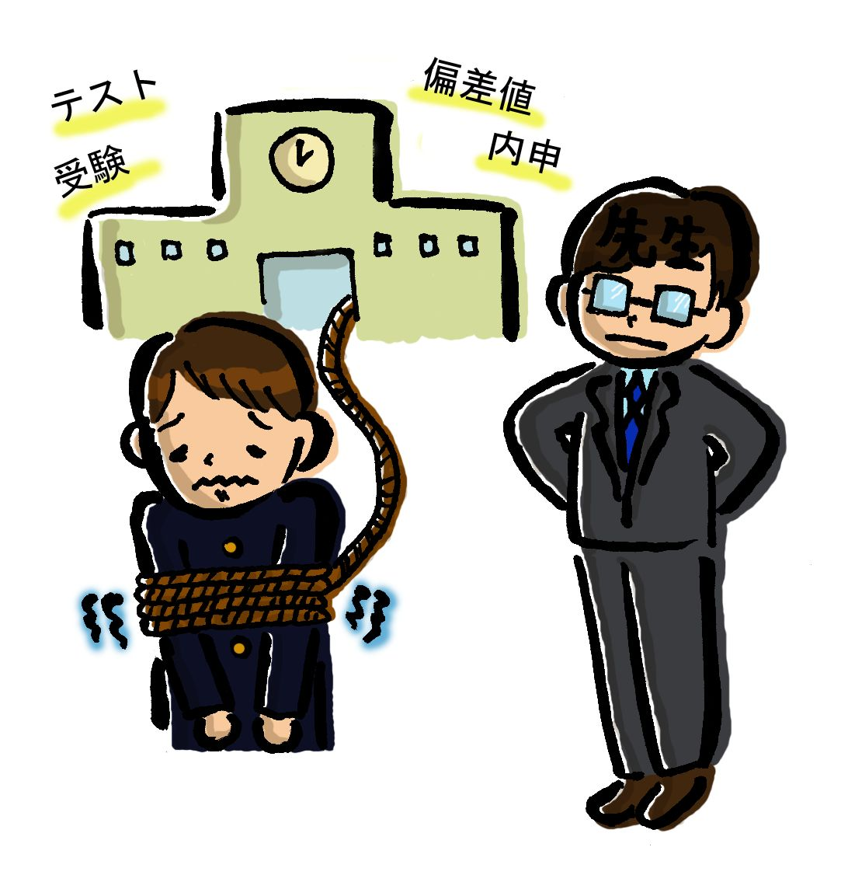
これじゃあ、子どもたちはたまらんなあ。若い人たちもやる気をなくすなあ。こう、タオおじさんが考えた。
このままほっておけば、その先に待ちうけているのは、登校拒否。出社拒否。ネバーエンディングの転職ではないだろうか。あるいは、フリーターの生活。無気力な人間の大量生産。元気のない社会・・・なんとも悲惨な将来だなあ。
そして、なぜ自分がそうなっているのか、その理由もわからずに悩んでいるキミたち。元気を失ったキミたち。勉強の意欲を失い、学校や会社に行く気力を失ってしまったキミたち。生きる楽しみも元気もうしなったキミたち。
それを見たタオおじさんは、「キミたちがそうなっているのは、キミたちの責任じゃない」それをキミたちに伝えたいと思った。
それで、縁あってこの手紙（本）をとったキミ。
（エッ？縁なんかじゃなくてただの偶然？まあ、いいからいいから。）
そのキミに、手紙をかく気持ちで、タオおじさんはいろいろとキミに話しかけてきた。キミの意見や考えや気持ちをきいた。そして、キミにいくつか提案してきたことがあるね。
これまで書いた手紙の最後の方では、「親のシナリオ」を捨てろ。「自分のシナリオ」を描いて、それを追及するんだよ。それがキミが変わる道。それがキミがキミの元気をとりもどす道。キミがイキイキした毎日をとりもどす道だよ。そうキミに言ったね。（「自分のシナリオ」は、「自分の夢」に置き換えてもいいよ）
では、なぜ「自分のシナリオ」、つまり「自分の夢」を描くこと、「自分のシナリオ」＝「自分の夢」を実現していくことが、キミを元気にするのか。
キミにはそれが分かるかい？
それはね、そのキミの夢こそ、キミがこの世に咲かせるべき花 だからだよ。その夢のなかみはなんでもいいんだよ。
小さなお花屋さんを開く。ケーキ屋さんを開店する。レストランのオーナーになる。可愛い服をあつかうブティックをつくる。中華料理のチェーン。フランス料理店のシェフ。小説家。映画監督。サッカー選手。地方公務員。キャリア国家公務員になって国家行政に係る。政治家になる。会社を企業する。
あるいは、一流上場企業の社長になる。パイロットになる。世界一周して世界中の人たちと仲良くなる。宗教家になる。医者になって人の命を救う・・・何でもいい。現在の日本には職種（仕事の種類）がいくつあると思う？２０，０００種類以上だって。（どっかの資料にそう書いてあったよ）
ただし、大事なポイント がある。
必ず「キミが選んだ夢」「キミが自分で決めたシナリオ」であること。けっしてお父さんお母さんや、学校の先生や学校、会社や社会が押しつけたものであってはイカンよ。
結果的には、キミの夢と、キミのお父さんお母さんがキミにいいね、と思っている夢が一致することもある。その場合は、ラッキー。問題ない。ただし、それでも、キミのお父さんお母さんがキミに提案してくれたもので、キミが納得できない夢であっても、最終的にはキミが決定しないといけない
ここが肝心かなめの大事なところ。
親が決めてはいけない。提案するだけ。決めるのはあくまでもキミ。キミ自身。そうすれば、キミは必ず成功する。楽しい人生をおくれる。反対の場合は、残念。ポクポク、チ～ン。世を恨んでバケてでるなよ～となる。
では、なぜ「キミの夢」だとキミは元気になるのか 。
それはね、キミの夢は、キミがこの世に生まれてくる時に、キミが一緒に持ってきた、キミの「生命の種」を宿しているからだよ 。キミは生まれてくるときにそれを両手にしっかり持って生まれてきた。
ナニ？そんなこと覚えていない？親からも生まれた時に手のひらにそんな種があったとは聞いていない？（たとえじゃよ、喩え。それぐらいは大目にみなさいよ。）
ともかくだ、キミ。
キミはこの世に生まれてくるとき、ハダカで生まれてきた。でも、こころの中にはしっかりとキミの「生命の種」を宿して生まれてきた。その種は、誰がキミにくれたのかって？ それは、キミをこの世に送りこんだ、その送り主。神様に決まっておる。仏様でもいい。天でもいい。
（かくいう、タオおじさんは神様も仏様も見たことない。キミはあるかな？天と言ったって、よくわからない。でも、便宜上、神様、仏様、天にしておこう。悪魔やゾンビよりはマシでしょ？）
いま書いているのは、タオおじさんの考えにすぎないよ。でも、タオおじさんはきっとそうだろうと思っている。（たぶん、そうだろう、と。）その観点から書いていくね。（否定も肯定もキミの自由だよ）
タオおじさんは、こう思っている。
キミは天からの授かりもの。（キムタクも言ってたじゃないか。子どもが生まれたときに）キミのお父さんお母さんを親として、キミはこの世に生を受けた。
でも、いったいキミはどこから来たんだ？
お母さんのお腹から？たしかに生まれる９～１０月間はお母さんのお腹の中にいたね。でも、更にその１年前。キミはどこにいたのかな。キミは答えきれるかな。知っていたら、ぜひ教えてもらいたい。（もちろん、タオおじさんだって分からない。生まれるまえなんて、覚えてないしね～）
むかし、まだ幼稚園児だったタオおじさんの娘に同じことを聞いたみた。そしたら、娘は答えたよ。「お母さんのお腹に入るまえ？ さあ・・・。あ、そうだ。きっと、〝死んでる世界〟にいたんだよ。」と。たぶん、人は死んだらこの世からさって別な世界にいく。そこと同じところだよ。そう幼い娘は言いたかったんだろうね。
でも、タオおじさんはこう思う。
キミがお母さんのお腹にはいっていた約１０ヵ月間のその前、きっとキミは神様の世界にいたのじゃないだろうかと。そして、そこで、神様との対話があった。（ここからは、フィクションだよ～）
・・・・・・・・・・・・・・・・・・・・・・・・・・・・・・・・・・・・・・・
地球と言う惑星にいきたいというキミに、神様はキミにきいた。
「地球には、いきたい人が誰でもいっていいわけじゃない。ちゃんとした目的があっていく場所だよ。キミは地球に何しにいきたいの？」
しばし考えたキミは、自分の考えや思いを神様に説明した。それを聞いていた神様は、しばらくじっと目をつぶった。やがて厳かにキミに告げた。
「よろしい。キミの地球旅行を認めよう。ただし、キミは自分が地球でやりたいこと。したいこと。なりたい自分。そのような地球という天体でキミが実現したい夢を書いて、企画書にして提出しなさい。」（天国にも企画書があるとは・・・しらなかったなあ）
それでキミは、自分の気持ちや思いを整理し、文章にまとめた。
キミが地球で実現したいと思っているその夢を、企画書をに書いた。
それをもって神様のところに行き、神様にわたした。神様はキミの企画書を慎重に読んだ。パイプをくゆらしながら・・・（おっと、神様はパイプは吸わない）。ときどき、うなずいたり。しかめっ面をしたりしながら。
キミは、神様のまえに立って、じっと待っていた。緊張しながら。不安をかんじながら。もし許可されなかったら、どうしよう。企画書にはかいてないけど、AKB ４８を見れない。スマップにも会えない。ヨシモトも楽しみにしているのに・・・
「よろしい。良くできているね。これならば地球にいくことを認めよう。人間の言葉で言えば、地球に赤ん坊として生まれ、死んでこちらに帰ってくるまでに７０年程度の時間をキミに与えよう。有効につかうように。」
ハイ、分かりました。ほっと胸をなでおろしながら、素直にうなずくキミに、神様はつづけて言った。
「でも、いくつか条件がある。」 エッ！なんだろう？キミの全身に一気に緊張がもどってきた。
「キミは地球と言う惑星で、人間の子どもとして生まれ、育っていくことになる。そのためには、どの国で生まれるか。どんな人種で生まれるか。どこでどう育つか。それをいま、ここで決めなければならない。キミはどうしたいのかな？」
アア、よかった。そんなことか。キミは胸をなでおろした。
そこで、キミは神様につたえる。自分が生れたいのは東洋の東にある日本というくに。そこで、日本人という人種として生まれたい。できれば、首都東京の近くで育つった方がいいかな。自分の夢を叶えるために都合がいいと思います。（本当は東京の方がAKB ４８など見れるからだけど、それはモチロン言わない）
ともかく、そういう希望をキミは神様につたえた。神様はキミのそんな下心をすべて見通すような目でじーっと聞いていた。、「ま、しかたないか」とそっとため息をつき、キミに言った。
「わかった。キミの願いを聞き入れよう。ところで、生まれたてのキミを育てるためのお父さんお母さんが必要だ。現在、地球で子どもを欲しがっている候補者はけっこういる。キミは、どんなタイプのお父さんお母さんがいいかね。」
「優しいお母さんを選べるし、人情のない冷たい女を母親としても選べる。金持ちの大富豪のお父さんも選べれば、普通のサラリーマンを父親として選ぶことができる。
よりどりみどりじゃよ。キミは、どのような親を希望するかね」（多分、もっと上品な、神様らしい威げんのあるテノールで）
それで、キミはコホンと咳払いして、神様に説明した。プレゼンテーション・タイムの続きだ。
この企画書にそって自分の夢を実現する。そのために適当なお父さんはこんなタイプ、お母さんはこんなタイプ。兄妹もいた方がいいかもしれない。兄はちょっと神経質で意地悪。妹は・・・云々。
キミと神様とのディスカッションは長い時間がかかった・・・
ありとあらゆる観点から検討をくわえて、万全を期した。そして、結論にたっした。キミの地球旅行計画は、」じゃっかん修正されて、最終的には神様の許可をもらった。あとは出発日を待つのみ。楽しみ楽しみ。とうとうＡＫＢ４８にも、スマップにも会える～ しあわせ～とキミ大喜び。（モチロン、神様には内緒）
さて、準備もととのった。明日は地球という惑星にワープして未来のお母さんのお腹の中に入る段取りとなった、その日の夕方。神様がキミを呼び出した。
「さて、キミも準備万端ととのえて、いよいよ明日は地球と言う惑星に７０年ほどいくことになるね。わたしはキミがこの天国を離れるのはとてもさみしい。元気でいって、帰って来るんだよ」
神様は震えるこえでそう言った。そして、おどろき戸惑うキミを引き寄せて、その広く暖かいむねのなかに、しっかりと抱きしめた。まるでかわいいわが子を遠くへ長い旅に出す親のように・・・そして、やさしい声で言った。
「キミが人間の赤ちゃんとして生まれた時はみんながかわいがってくれるだろう。神であるわたしが、子どもを欲しがっている夫婦にキミを授けたことをみんなは知っているからだ。〝神様からの授かりもの〟〝天からの授かりもの〟として、それはそれはキミを大事にしてくれるだろう。幼い時もそうだろう。」
「だが、キミが小学生となり、中学生となり、高校生となってくると、まわりの人たちの態度や接し方が変わってくるだろう。それは、キミが人間の子どもとして育っているからだ。人間社会の他の人たちと同じように、キミを育てる必要があると思っているからだよ。」
「キミのなかでも少しずつ変化が生じるだろう。天国を離れて、地球にうまれるとき、キミはキミの本当のふるさと、天国のことを忘れる。地球に生まれる目的も。神であるわたしとの対話も。記憶喪失のような状態で赤ちゃんとしてうまれるからだよ。」
「でも、思春期ころから、キミは、すこしずつ地球にいった目的を想い出しはじめる。かすかに、おぼろげに。でもそれはだんだんとハッキリしてくる。キミの好きなもの、やりたいこと、なりたい人間というように、すこしずつ。」
「それはね、キミの企画書を、透明なカプセルに詰めて、キミのこころに埋めこんでいたのが、すこしずつ溶け出して、キミの願望や夢となって出てくるからだよ、キミの夢や願望は、キミの〝生命の種〟なんだよ。これを決してわすれてはいけないよ。」
「そこからキミの苦しみがはじまるかもしれないよ。そのころ、キミはお父さんお母さんには感謝しているし、無条件に信頼しているだろう。その期待に沿いたいし、その言葉に従いたいと願っている。でも、場合によっては、どうしてもそうできなくなることがでてくる。」
「それはお父さんお母さんの考えや思いや期待が、キミの願望や夢とかけなれていることがあるかもしれないからだよ。そうことがおきたら、キミはけっこう悩むだろうね」
「もし、そうなってしまったら。キミが自分の夢や願望ややりたいことをあきらめなければならなくなったら。キミはなにをするにしても、意欲を失い、気力をうばわれ、生きる元気もなくなるだろう。」
「それはね、キミがわたくしと作ったあの企画書。透明なカプセルに詰めてキミのこころのなかに埋めこんだあのキミの〝生命の種〟。それを花咲かすことができない。それでは自分がこの地球に生まれてきた目的が達成できない。そのように、キミがこころの奥深いところで、無意識に感じてしまうからだよ」
「だからね、もし地球にいって、どうしても元気がでない時は、〝どうして自分は生きているのかな〟と自問自答してごらん。すぐにはわからなくても、やがていつか必ずキミは答えを得てくれることができるよ。」
「また、元気がないときはね〝もし自分が自由にやりたいことができたら、なにをするだろうか〟と考えてごらん。そう考えだしたら、キミは自分が好きなことややりたいことを想い出したら、きっとキミのこころの底から元気が戻ってくるよ・・・」
神様はキミにコンコンと色々な起こり得ることを教えた。その時にはどうしたらいいかも教えてくれた。そして、そのほかにもいくつかキミにアドバイスした後、最後にキミにある魔法をかけた。
キミが天国を飛びたって、地球の母親になるであろうその女性のお腹の中に入る瞬間、天国のすべてのことを忘れるように。記憶喪失にする魔法。キミをその魔法にかけた。
ただし、もう一つだけ、神様は神はこっそりとキミに魔法をかけた。
それは、キミがこの地球に生まれてきた目的、地球旅行の目的。それが封じこめられた小さな透明なカプセル。あのキミの〝生命の種〟。キミが自分のこころの中に密かにいれてこの地球に持ってきたカプセル。それが時間とともに、すこしずつだけ溶けだすようにした。
そしてそれが少しずつ溶けはじめるとき。キミのこころの中に、知らず知らずのうちに、やってみたいこと。なってみたい自分。実現したい夢、そういう「思い」がキミのこころに少しずつよみがえるようにした。そして、その「思い」をよみがえらせると、キミのこころも体も元気がでるようにした。そのような魔法をキミにかけた。
その「生命の種」。キミが地球にやってきた目的。その目的がこの地球でいきているキミのこころの中ではっきり形をとりはじめるとき、キミはイキイキとしてくる。生きている実感と喜びを感じるようになる。
反対の場合。
キミがキミのやりたいこと、なりたい自分、夢をあきらめて生きていると、キミはウツウツとした気分になる。元気をうしない、生きる意味を見いだせなくなる。
キミが天国を去ってこの地球という惑星に生まれてきた目的をわすれているためだ。キミのこころの奥にある「生命の種」が発芽できず、キミの美しい花を咲かせる希望がみいだせないからだ。
・・・・・・・・・・・・・・・・・・・・・・・・・・・・・・・・・・・・・・・・
さあ、どうかね、キミ。
これでなぜキミがいま元気がないのか。その理由がもう少しわかってきたかな。
そして、キミが「自分のシナリオ」をつくりはじめたとき。それを生きることを目指したとき。自分の夢を見つけて、その自分を実現するためにがんばりはじめたとき。そんな時はなぜ元気がでてくるのか。それも、わかってきたかな。
結論。
キミのこころの中には、神様からさずけられ、キミがもって生まれた「生命の種」が宿っている。
それは、キミが好きなもの、やりたいこと、なりたい自分、実現したい夢。そういうキミのこころの〝思い〟や〝願い〟や〝希望〟となって姿をあらわしはじめる。
キミのお父さんやお母さんの期待や願望。先生や学校の強制。世の中や世間の常識など。そういったものを押しつけられると、とキミは元気を失う。キミの「生命の種」が発芽できないからだよ。
それでも、キミが自分のこころの思いや願いや希望を再び取りもどせば、キミは必ずキミの元気をとりもどす。意欲や気力も自然にもどってくる。それは、キミの「生命の種」がこころの内から発芽し、生長しようとするエネルギーが、キミのこころにも体にも復活してくるからだよ。
これがキミにつたえたかったエッセンスじゃよ。
（また、老人ことばになっちゃった？）これで、タオおじさん。キミに伝えたい肝心なことは伝えたよ。
キミも良くがんばってここまで読んできたね。疲れたかい？
そうだろうね。そうだろうとも。タオおじさんもここまで書いてヘトヘトだよ。それでは、しばし休憩を。
毎度いうけどね、「ここまで読んだら、もう十分。わかった。もう読まないでも、タオおじさんの言いたかったことはわかった。」キミがそう思ったらね、こんどこそ、もうこの手紙の目的は達したよ。この本を閉じて、のんびりくつろぐなり、遊びにいっておいで。
タオおじさんは、しばらく休憩したら、もう少しだけ、補足しておきたいことを書くよ。もう必要ないかもしれないけどね、念のため。
なにを書くかというとね、実践編。ノウハウ。サワリだけね。
キミがここまで読んで「タオおじさんの言いたいことはわかったけど、でも、何をどこからはじめればいいの？」とキミが疑問をもった時のための参考にために。具体的に、なにを、どこから始めたらいいのか。そういうことをもう少しだけ書いておくよ。
では、興味があったら、またあとでね。
さて、ここまでこの手紙を読んできたキミは、本当に根性があると思うよ。タオおじさんは感服している。なんども言うけど、キミは本当にエライ！
ところで、キミは前のステージで、キミと神様との対話を想いおこしてもらえたかな。
なになに、「そんなの覚えていない？あれはタオおじさんのつくり話でしょ。」だって？ホウ、どうしてそんなことが言えるのかね？ 神様はキミに言ったはずだよ。地球にきてお母さんのお腹に入るときには、キミはすべての記憶を失う、ってね。
だから、キミは覚えていないんじゃよ。そういうわけでタオおじさんは、キミの記憶を助けるためにあのステージを書いておいたんじゃよ。（こういう時って、老人言葉は便利だね～）
まあ、ともかく、キミはここ生きていることは事実だよね？疑うなら、自分の鼻をつまんで強くひねってごらん。ほら、痛いでしょ？それがキミがこの世に生きている証拠だよ。
でもね、キミは自分で生きていると思っているでしょ？
それはまちがいだよ。キミは、〝キミの力と意思で生きてはいない〟んだよ。証拠を見せようか？キミの意思で生きているのなら、キミの息を止めてごらん。できるはずだよ。５分間でいい。さあ、始め！
なになに？３分間も止めることができなかった？
だらしがないのう。キミは自分で生きているんでしょ？そうだったら、なんで自分の呼吸さえ止めることができないのかなあ。おかしいねえ。理屈に合わないじゃないか。
せっかくだから、もう一つ、キミのカン違いを指摘しておこうか。
キミは毎晩、お布団にはいって寝るね。
で、キミに質問。キミが寝ているときは、だれがキミの呼吸をさせてくれているのかな。キミじゃあないよ。寝ているんだから。お父さんお母さんかな？いやいや、キミを寝かしつけてくれることはできても、寝ているあいだに代わりに呼吸をしてくれることはできないよ。ちがうかな？
キミが自分で生きていると思ってはいても、実は自分の意思の力でも、努力でも生きているのではないという証拠は、ほかにもいろいろあるよ。
でも、ここではもう一点だけ。食物を食べたけど、だれが栄養だけを吸収させ、残りは便として出すようにコントロールしているのかな。キミかい？キミじゃあないよね。じゃあ、いったい誰なんだろうねえ。じっくり考えてみてね。
このことをあえてここで取り上げたのは、キミやタオおじさんが当たりまえのようにあまり考えずにばくぜんと考えているものやことがたくさんあるけれども、実はよくかんがえてみると思いこみであることが多いということ。そのことをキミに想いおこしてほしかったからだよ。多くのひとたちは、そのように、かってな思いこみのなかでいきているんだよ。
キミのいまの状況もそうかもしれないね。
キミは一所けんめいに勉強しないといけないと考えている。
いい高校やいい大学に進学しなければならない。そしていい会社に入らなければならない。そう思っているのかもしれないね。お父さんお母さん、先生や学校、世の中や世間の常識はそう考えていることが多い、ということも見てきたね。
でも、もう一度、ここでタオおじさんはキミにききたい。
一所懸命に勉強しないといけないと、なぜキミは思っているのかな。
勉強できない、成績が上がらないことが、なぜキミを悩ませているのかな。
一般的な答え－それがキミの将来と幸せのために必要なことだ
と、みんなが言っているから。みんながそうしないといけないと考えているから。
タオおじさんの答え－キミがマインドコントロールにかかっているから。
キミはどっちの考えに賛成かな。これは、いまのところ、即答する必要はないよ。ちょっとキミの頭の片すみにおいておいてね。
ここでは、タオおじさんが独断と偏見で、キミについてタオおじさんがどうかんがえているのか、率直にかいていくね。とりあえず読んでみてね。そのあとでゆっくり話し合おうかね。
その前に、この手紙の中で取りあげたフローベール君のことを書いていた伊藤隆二氏のとってもステキ言葉を、もう少し借用させてもらおうかね。この方はすばらしい教育思想をもっている教育心理学者だということは、もう別なところで書いたね。
キミにはこの伊藤氏の言葉がきっと参考になると思うから、いくつかアトランダムに引用させてもらったよ。（『育つ才能 伸びる個性 世界の偉人５０人の子ども時代』ＰＨＰ文庫 ２７～２８頁より）。興味があったら本文を読んでみてね。
「人間は生まれたときに、いな生まれる以前から、天によって与えられている能力・適性・才能を天分という。その天分を百パーセント発揮し、もっともその人らしい生涯を送りえる人間は幸せである。」
「もっともその人らしい生涯を送ることを、分相応に生きるといい直してもよい。つまり、分相応とは、自己の天分を知り、その天分を発揮するにもっともふさわしい境遇をみずからつくり出していくという意味である。」
そしてこの伊藤先生は続けて書いているよ。
「子どもの場合は、その天分の発見と、その発揮のためには、援助者が必要になる。その援助者こそ、教育者の別名である。」
「では、作今の教育界はどうであるか。教師たちは子供たちを上下胃の序列でとらえることは関心を払うものの、子ども一人ひとりの天分の発見と、その開花という本来のつとめのほうは、なおざりにしているのではないか。」
「１「勉強ができない」― この一語が、子どもの天分を殺してはいないか。・・・（中略）・・・はかりしれない人間の能力や才能を、一枚のペーパーテストの成績で、いとも簡単に、わりきるということはできるのだろうか。」
「どの子どももすばらしい才能に恵まれ、かつどの子どもたちの才能も葦かびが萌え出ずるように、天空めざしてのびようとしているのに、その芽をむしりとっているのは、いったいだれなのか。」
「親はかってな理想像を子どもたちに押しつけ、親の思う方向に伸ばそうとして、子どもの能力や才能を選定してはいないだろうか。」
キミはこれらの伊藤氏の言葉を読んでどう感じたかな。共感したかな。反発を感じたかな。理解できたかな。わかりづらいかな。
いずれにしても大事なことはね、キミが読んで感じたこころの中の反応、動きだから、賛成とか反対とかは気にしないでいいからね。
キミのこころの中で起きる反応や動きは、やがてキミの行動を変えて、キミの人生をも変えていく。だからね、読むときは、正しいまちがいとか決めつけて読むのではなく、読みながら自分はどう感じているか、どう思っているのか、その自分の気持ち・感情に注意してよむといいよ。
ここで伊藤氏の言葉を引用させてもらったのはね、一流のすばらしい教育心理学者も、やはり人間だれでも持ってうまれた天分があり、それを伸ばして生きていくことがもっとも幸せな生きかただという考えをもっていることを、キミにはぜひ知ってほしかったからだよ。
タオおじさんもこのテーマには、実はずいぶん昔から興味があった。
どんなに昔かって？たしか、最初に「この人生って、むなしいなあ・・・」と感じたのは十四才か十五才のころだったかなあ。そして、真剣に悩みはじめたのが十八才のころだったと思うよ。
それでね、それからは、多くの学者、偉人、天才、大企業をつくった経営者、思想家、哲学者、作家、宗教家なの本などを、かたはしから読んできたよ。
それに、いろいろな日本や海外の映画やテレビドラマや見るときも、小説なども読むときも、いつも登場人物の個性や才能ってなんだろうか。そう考えていたよ。
どうしてある人は不幸せになって孤独な人生を送り、べつな人は幸せになってハッピーエンドでこの人生を終わるのか。そういう〝問い〟をこころの中にいつも持っていたっけなあ。（う～ん。なつかしきわが青春の日々・・・）
それに、そのような人生と、一人一人がもって生まれた天分や才能などは、いったいどんな関係があるんだろうか。いつもそのようなテーマを心の中にもちながら、読んだり、見たり、考えたりしてきたよ。
そして、タオおじさんは次のように考えるようになってきた。これは現在のタオおじさんの考えで、もちろん、正しいかどうかはわからないよ。ひとつの〝ものの見かた〟として、キミの意見をきたいんだよね。というわけで、ここで、強引にポイント整理。
・人間はみなちがう。だれ一人として同じ人間はこの世にはいない
・そしてみんな、それぞれの天分や天性や才能や役割を持ってうまれてきている
・それぞれがもって生まれた天分や天性や才能や役割。そういうもの全部をひっくるめて、人それぞれの個性といえるかもしれない
・そのような自分がもって生まれた自分の個性をこの世で生かすこと。それが一人ひとりの人間の生きている目的かもしれない
・もしその目的かなう生きかた、つまり自分の個性を生かすような生きかたをしていれば、その人は元気になる。そうでない場合は、その人は元気をなくしていく
さて、読みかえしてみて、本当に強引なマトメだと思うけど、キミはどう考えるかな。どう感じるかな。
キミと神様との対話があったね。（覚えてない？まあ、いいからいいから）その中で、神様は言ったね。キミのこころの中に一粒の種を植えつけておく。それが、キミが地球に生まれたときから少しずつ発芽していく... と。
そして、それがキミが地球で咲かせるべき花だよ。キミの使命だよ。たしか、神様とそういうやりとりがあったよね？（タオおじさん、記憶力がよくないから詳細はおぼえていない。理解もテキトー）
もし、キミと神様の対話が本当であったとしたら、それでは、キミはどのような種をキミのこころの中にやどして生まれてきたんだろうか。
その種をこの地球で育てていき、やがて花開かせるために、キミはなにをしなければならないだろうか。もしかして、その種こそ、キミがこの世に生まれてきた理由であり、目的ではないだろうか。
そして、キミのみに与えられたキミの天分、才能、天性などがやがて一体となってキミの能力となり、そのキミの能力が、キミのこころのなかに神様が植えつけた一粒の種（キミの夢・理想と言いかえていい）をこの地球で花開かせるためにキミに与えられた力。そうかんがえられないだろうか。
つまりね、キミの能力（キミがもって生まれた天分、天性、才能など）はキミを強めるためにキミが生まれもった潜在パワー。そして、神様が地球にくるキミのこころに植えつけた種が、キミの夢（理想）。
どう？そう考えてみたら、なんか楽しくなってこないか。
もし、キミのこころに植えつけられた種が、キミの夢（理想）だったら...
もし、その種（夢。理想）が、キミ一人にしか与えられていないものだったら...
もし、キミ以外のだれ一人、その種を咲かすことができないとしたら... もし、キミ自身が咲かそうとしている花が、世界に二つとない、キミ一人だけの世界で唯一の美しい花だったら...
もしそうだったら、キミの潜在パワー（生まれつきの天分、天性、才能など）は、やがて鍛えられてキミの力となるとなる。キミのその力を使って、キミのこころの中に植えつけた種（夢。理想）の花をこの地球でさかせること。それがキミのこの世におけるミッション（使命）かもしれない。別な言いかたをすれば、キミがこの世に生まれるにあたって、神様と相談して決めたキミの「地球旅行の目的」なんだよね。
そして、キミの生まれつきのパワーと、この世に生まれるときにキミのこころに植えこまれた種（夢。理想）、そういうものすべてをひっくるめて、ここではキミの〝個性〟ということにしておこうか。
そうなると、簡単な言葉でいえば、キミの個性とは、キミがもって生まれたパワーと夢・理想を一体として、ワンセットとして総称したもの。そういうことになるね。
それは、この地球に生まれたキミの目的でもあり、力でもある。そして、それは、他のどのような人とも同じではなく、キミ独特のもの。
もしそうだったら、次のように考えることはできないだろうか。
・キミが夢（理想）を知らずにいると、勉強や仕事をがんばる意味がわからないので、何をするにも身が入らない。
・キミの夢（理想）がわかってくると、それを実現するためにがんばろうという意欲も気力も自然とわいてくる。それこそキミがこの地球に生まれ、いま生きている意味だから。
・キミは生まれつきのパワー（潜在能力）を伸ばしていかないと元気ができない。関係ないことばかりやっていると、意欲を失い、無気力になる
・キミが自分のパワーを知り、伸ばし、開発していくと、キミの元気がもどってくる。それは、自分の夢（理想）の実現のためにそのパワーが役にたつことを知っているから。
・だから、なによりも、キミの生まれつきの潜在パワーを知り、キミ自身の夢（理想）をしることが大切。それがキミの〝個性〟であるし、それをこの世で生かしていくこと、表現していくこと、それがキミがこの世で生きている意味でもある。
・だから、キミがキミの個性を知らないかぎり、キミの個性を開発し、生かし、表現しようとしないかぎり、キミの人生は無意味に感じられる、無目的に感じられる
・キミが自分の個性を知ることによって、はじめて生きる意味がわかり、生きがいを感じるようになる。がんばろうという気持ちがでてくる。
・また、キミの個性を実現していくことによって、キミは幸せを感じていくようになる。充実したよころびに満ちた、ワクワクした日々を送ることができるようになる。
どうだろうか。キミにはわかってもらえたかな。
エッ、わからない？
あまりにも多くのことを一気に言われても困る、って？
うんうん、そうだろうね。ゴメン、ゴメン。
タオおじさんは、ときどき一人で考えこんでしまう悪いくせがある。今回もおもいっきり飛躍して、強引に一気にまとめてしまったね。すまないね。（でも、ほかにどうやってキミに話せばいいのかわからないから、カンベンしてね～）
でもね、おそらくキミにはある程度、いやそうとう、わかってくれていると思うよ。
だってね、ここまでタオおじさんの手紙を読んできたキミは、そうとう読解力と思考力が高いはず。（もちろん、忍耐力もある。）それにね、大きな声でいえないけど、タオおじさんだって、ここに書いたようなことは、やっと最近になってわかってきたんだよ。アワテナイでも大丈夫。
この先で、くりかえし、潜在パワーや個性などについて触れていくからね、いまのところはあまり気にしないでね。ふ～ん、そんな考え方もあるんだ、というていどに思って読んでくれたらいいからね。結局、大切なことはキミがどう考えるかであって、タオおじさんがどう言ったかではないからね。
では、つぎのステージでは、キミの生まれつきの能力の見つけたかた、また、キミの夢（理想）の見つけたか、について具体的に触れていくからね。
その前に、例によって例のごとく・・・そう、キミにはもうわかるよね。
一服いっぷく。タオおじさんは、今日も熱いコーヒーとパイプでのんびりリラックス。
キミはどうやってくつろぐのかな。
ヒマがあればでいいけどね、つぎのステージ入るまえに、ちょっと考えてみてね。
・キミの潜在パワーとしてはどういうものがあると思うか
・キミの夢（理想）はなにか
・キミの潜在パワーも開発せず、夢も実現していかないでも、キミの人生は幸せか
では、またあとでね～
まだ幼稚園や保育園に通っていたころ、キミはいろいろな夢をもっていたでしょ？キミのお友だちいろんな夢をもっていたね。
園長先生や幼稚園の先生、あるいはお父さんお母さんから「将来なにになりたいの？」ときかれたら、躊躇なくキミは答えていたね － 「お菓子屋さん」、「お花屋さん」、「お巡りさん」、「パイロッ」、「サッカー選手」、「幼稚園の先生」、「お金持ち」、「お嫁さん」・・・。
なぜ、あのころ、キミはなんら迷うことなく、躊躇することなく、自分の夢、なりたい自分を即答できたのだろうか。
そして、いまはなぜ、キミの夢を語れなくなっているんだろうか。いや、それどころか、自分には夢さえない、と思ったりしてしまうのだろうか。
もう一つ、キミに聞きたいことがあるよ。
キミのこころの中にいまなんらかの夢があるとして、なりたい自分のイメージがあるとするね。キミは、その自分の夢をお父さんお母さん、学校の先生、クラスメートや友だちに語れるだろうか。もし、語れないとしたら、それはなぜだろうか。
ここまで読んできたキミには、もうその理由がわかってきていると思うよ。
そう、幼いころの夢を見失ったり、捨てたり、夢を持たなくなったりした。その理由はもうキミにはわかるよね。
物心ついた頃から学校に行くようになり、自分の夢やなりたい自分のことを考えることがなくなった。自分の夢、なりたい自分のことを考えることが大事だよ、とは誰も教えてくれなかった。学校の先生も、お父さんお母さんも、誰一人も。
それよりも、先ず、みんなと同じように基礎的な知識を学ぶこと。みんなと同じレベルの基本的な学力を身につけるが最優先だ。そうしないととみんなについていけないで、落ちこぼれになる。そして将来はいい就職先がみつからないで苦労する。
そのように、学校の先生、学校、そしてお父さんお母さんから毎日の言われるようになったからだよ。もちろん、クラスメートたちも同じことを言われているので、そう信じ込んでいる。そしてクラスメートや友だちと話したキミは、ますますキミの夢やなりたい自分のことを考えなくなっていったんだよね。
ここで問題は、学校がね、キミがすばらしい人間になるためにどうしたらよいのか。キミが幸せになるためにはどうしたらいいのか。そういうことを教えるところではなく、クラスメートやみんなと同じような知識を身につけさせるのが目的となっていることだよ。
先生や学校にとって、キミの人間形成なんかどうでもいいこと。ましてやキミの夢やなりたい人間像など。「そんなおとぎ話は授業の後で、ヒマなときに自分で考えてね。学校は知識を教えるところなのよ。ちゃんと教科書で勉強して、みんなと同じようなレベルの成績をとってね。」先生や学校が生徒のキミに求めることは、これに尽きるよ。
キミのお父さんお母さんも、学校は知識を学ぶ場と思っている。あるいは、キミの生活指導をしてくれるところだという期待も持っている。ちゃんとした生活しどうなど、本当はできないと感じつつも。
もちろん、キミのお父さんお母さんも、キミが小学校に入ったころから、「将来はなにになりたいの？」とは聞かなくなった。その代わりに、「宿題はやったの？明日の予習は？」と聞くのが日課となった。
学校に合わせて、キミがほかの子どもたちと同じように基礎的な知識を学び、基本的な学力を身につけて、キミが落ちこぼれにならないようにと、朝から晩まで、キミの行動に目を光らせるようになった。
キミの夢の話や将来なりたい自分の話？ 「そんなことはどうでもいいから、先ずは成績（偏差値）をあげなさい。そしていい学校に進学しなさい。そのあと考えればいいことでしょ？」と取り合うことはない。（口ではそう言わなくても、心の中でそう思っていることが多い）
ところで、いまさらだけど、なんのために先生も学校も、キミのお父さんお母さんも、キミに学力を身につけたり、成績を上げようと必死になるのかな。モチロン、キミは知っているね。言わずもがな。
いい学校に進学し、いい大学に入り、いい会社に入って、安定した収入を得て、平和な人生を送るようになれること。これに尽きるよ。違うと思うなら、いまでもいい、あとでもいい。キミの先生やお父さんお母さんに聞いてごらん。そのまま肯定はせずとも、否定もせず。まちがいないよ。
かくして・・・
キミの幼いころに持っていった夢（理想）は、どこへいった？
キミがなりたかったあの自分は、どこへいった？
こころのなかにこれという夢（理想）をもっていないキミ。
なりたい自分のイメージをいまはもっていないキミ。
そのキミは、今はなにを目標に、なにを目的に、なにが楽しみで、どんな希望をもっていきているんだろうか。
キミの毎日は楽しいだろうか。ワクワクして毎日をむかえているだろうか。朝おきたら、「よっしゃ～今日もがんばるぞ～」と自分に言っているだろうか。
もし、キミがそんな状態で毎日をいきているんだったら、タオおじさんはこころからキミを称賛したい。キミはまだ若いのに、不可能に近いことをやってのけているんだからね。大人でもできないことが、キミにはできる。そのようなキミはぜったいに大丈夫。もう続けてこの手紙を読む必要はないよ。卒業じゃよ。（とつぜん、老人口調）長い時間をつきあってくれてありがとうね。
でもね。
・もしキミが、自分の夢（理想）を見失っていることにとまどいを感じているのなら。
・もしキミが、なりたい自分がわからなくなって、生きる指針をうしなって迷っているのなら。
・そして、夢（理想）もなりたい自分もわからなくなっているがために、勉強にも意欲がわかず、学校や仕事にいく気力もでないで、元気をうしなっているのなら・・・
もしそうならば、これからもう少しだけタオおじさんとつきあい、一緒に、もう一度キミの夢（理想）を再発見してみないか。もう一度、なりたい自分のイメージを探してみないか。もしキミがそう思うなら、この手紙をもう少し読みすすむ意味はあるかもしれないよ。
では、これから具体的にキミが自分の夢（理想）、なりたい自分を再発見するためのヒントを書いていくからね。いっしょに考えながら、エクササイズをやりながら、トライしてみよう。
その結果、キミの夢（理想）やなりたい自分のイメージを再発見できたら、ラッキー。でも、すぐに再発見できなくても、再発見できるということに気付いただけでも、これまたラッキー。ということにしておいて、さあ、では本番といこうか。
１ まず、キミの夢（理想）を視覚化（見える化）してみよう
準備するものは、ノートを一冊。百均で売っている１００ノートでＯＫ。または自分の好みのノートでもいい。そのノートもって、一人になれるところに行く。自分の部屋でもいい。マックでも、スタバでもいい。じゃまの入らないしずかなところがいいね。そこでね、しずかに目をつぶって、まず自問自答してみてね。
「もし、自分がいま好きなことを自由に選び、なんでもできるとしたら、自分はなにをしたいのだろうか。お金の心配も、生活の心配もなく、だれも自分を批判したり、バカにしないとしたら、自分はどのような夢（理想）をもって、なにをしたいだろうか」
具体的にはね、たとえばキミがロトに当選して５億円（１０億でもいいよ）手に入れたら、もう勉強したり、仕事をしなくてもいいよね。そして好きなことができる。その状態になったとき、自分がしたいことがあったら何でも実現できる状態になったとき。その時に自分はなにをしたいだろうか・・・そのことにキミに思いを巡らせてほしいんだよね。
具体的に、思いつくままに書いていく。アトランダムでいいよ。実際にできるかどうかも関係ない。ともかく、今の自分の気持ちのとおりに書いてみてね。
明日は気持ちが変わるかもしれないけど、それはその時だよ。好きなように、だれにも気兼ねすることなく。これはキミ以外のだれも見るものではないからね。なんだって書いてもいいんだよ。
「とはいっても、なかなか想像しにくいよ～」と言っているキミに、もうチョットだけ、具体的なヒントを。次のようにやってみたらどうかな。
・キミが実現したい夢（理想）を思いつくままに、十くらい出してみてね。
・キミがなりたい自分、あるいは好きな仕事（職業、職種など何でもいい）を思いつくままに、１０くらい書きだしてみてね。
ここで書きだすのは、「できるかどうか」ではなく「やりたいかどうか」の夢やなりたい自分だからね。お父さんお母さんがどう思うか、先生や学校がどう思うか、世間ではなんといわれるのか、ここではそんなのカンケイネエ！ということで、すべて無視。
また、実現するのがいまの自分では難しいかどうか、そんなこともここではなんの関係もないよ。興味があるのか、やりたいのか、想像してみたら面白いのか。楽しいのか。そういうような、キミのこころをワクワクさせるようなものじゃないとダメだよ。
だってそうでしょ？自分の気持ちをみじめにさせるような、ドヨヨ～ンとさせるような、そんな夢（理想）は夢なんかじゃないよね。夢はやっぱり、空想するだけでも楽しいものでなくっちゃね～
さて、自分の夢（理想）を１０個ほど書きだせたかな。
絶対になにがなんでも実現させたい夢があったり、そんなに実現したいとは思わないけど、できたらいいなあ、と思う程度の夢もあったかな。そんなにはっきりしたものではないけど、やってみる価値はあると思うなあ、という夢もあったかもしれないね。
いずれにしても、あまり気にすることはないからね。ここで大切なことは、キミが自分のこころの中を見つめて、自分の夢（理想）やなりたい自分に焦点をあてて考えてみたことなんだよ。注意を向けたことは、だんだん露わに、明らかになってくるものなんだよね。
もし、書き出せたらね、今日はもうペンをおいて、この本も閉じて、キミが書きだした自分の夢( 理想) について思いを巡らせてね。いろいろと空想したり、それが実現していったらどれほど楽しいか、こころに思い浮かべてみてね。それが楽しかったら、今日だけではなく、明日も明後日も、その空想にふけってみてね。
実はこれはとっても大切なことなんだよ。
キミがこころでイメージ（想像、空想）することはね、たとえそれがまだ現実になっていなくても、キミのこころを刺激し、キミの考えに影響を与える。そのイメージが強いものになってくると、キミの思いや考えに強い影響を与えて、キミの行動や健康にまで影響するようになる。そして、知らず知らずのうちにキミは変わっていき、その結果、キミの人生は変わっていく。これが方程式。
もし、キミが１０個の自分の夢（理想）を書きだせなくても、いや一つの夢（理想）やなりたい自分さえこころに思い浮かばなくても、なにも気にすることはない。だれでも心の中にはなんらかの夢や理想やなりたい自分をもっているけどね、いろいろな理由や事情があって、それをこころの奥ふかくにしまいこんでしまう、隠してしまうことがある。そのことはもうキミと話し合ってきたね。
だからね、いまは自分がどんな夢（理想）をもっていたのか、どんな人間になりたかったのか、思い出せないとしても、書けないとしても、なにも気にすることはないし、心配することもない。
このような場合、キミの夢やなりたい自分のイメージは、キミのこころの奥でじっくりと時を待ち、ただ単に何らかのタイミングやきっかけを待っていることもあるものだよ。だから、そのタイミングやきっかけが見えてくるまで、焦らずにじっくり待とう。
ただ、そのような状況にキミがいたら、つぎのように考えてみるのもいいかもしれないね。
自分の夢（理想）やなりたい自分がわからないとしたら、つぎの方法をトライしてみてはどうだろうか。
・今の自分はどのような勉強（科目、部活やサークルでもよい）を楽しく感じているだろうか。もしその勉強（科目等）の方面の才能が自分にあったら、自分はその才能を生かしてどのような自分になれるだろうか。
もし、天使が今キミのまえに降りたって、キミに次の質問をしたら、キミはなんと答えるだろうか。ぜひ考えて、いろいろと想像してみてね。
「あなたのこの世での命（寿命）はあと３年だけです。その３年のあいだだけ、あなたは好きなことができます。お金はいくら使ってもいいし、あなたが望む才能も能力もすべてあなたに与えられます。今日からの３年間、あなたはなにをしたいと思いますか」
２ キミの潜在的なパワー（能力）を洗い出してみよう
実はね、キミの夢（理想）やなりたい自分を実現するためにはそれなりのパワー（能力）が必要だけど、そのパワーもすでにキミは生まれつきもっている、と前にキミに説明したね。
そのパワー、まだこれから磨かれ、キミのものになっていく潜在パワー（能力）は、キミの夢と一体のもの。ワンセットであって、それがキミという人間の個性を織りなしている。そうキミに話したね。（ナニ？覚えていない。オイオイ、そりゃあ、この言葉通りではないけど、似たようなことは言ったでしょ？）
ということはね、別な言いかたをすれば、まだキミがはっきり自覚していなくても、認識していなくても、キミのこころの中に植えつけられているキミの夢（理想）の〝種〟と同じように、キミが生まれたときからもっている潜在パワー（能力）も、すでにキミのなかにある、ということになる。
（「キミのなかって、ドコなの？」って？そんなのタオおじさんも知らないよ。心臓のなかでも、肝臓のなかでもないし。脳のなかでもないだろうなあ・・・ワカラン。まあ、いいや、ヒマな時にキミから神様にきいておいてね。タオおじさんはいま忙しいんじゃあ～また後でね～)
まあ、すでにキミのなかにあるとしたらね、それはなんらかの形でその片鱗（いちぶ）を、出している可能性があると思うよ。それで、つぎのエクササイズをキミにやってもらいたいんだよね。
そこで、さっきのノートに、つぎのことを書きだしてみよう。
・得意な学校の科目
・得意ではなくても、ちょっとがんばればできそうな科目
・得意じゃないけど、好きな科目
・好きな部活、サークル、あるいは運動や体操
・将来、勉強してみたいと思うもの
・好きな本のジャンルとその内容（小説、漫画、雑誌。どのような内容か。ロマンスか、アパレルか、ホラーか、グッズ、旅行・・・）
・テレビや映画やドラマで、ガッコいいと思う生きかた
・そのほか、キミの気をひくものなど・・・
要するにね、キミの好きなこと、好きなもの、関心を引くもの、得意と思うもの、面白いと思うもの、みんなが苦労するのにキミには簡単にできること、トライしたいと思うものなどは、実はキミが共感できるものなんだ。フィーリングも近いし、キミに合っている。なんとなく好き、というものが多いものだよ。
だからそれらをリストアップしてみて、それを並べたり、並べかえしたりすると、意外と自分の潜在パワーの萌芽（小さなメ）がその姿を現しているのに気づくことがあるんだよね。だから、試してみる価値は大いにある。
本当はね、自分の夢（理想）やなりたい自分は何かについて、大人でも答えられない人がほとんどだと思うよ。すくなくとも、タオおじさんが見てきたかぎりでは、「これが自分の夢だ。自分はこのような人間になりたい」とハッキリ自覚し、そしてその実現に向けてがんばっている人は、ほとんどいない。
でも、大人たちも自分たちの夢を再発見したがっているし、なりたい自分をもう一度さがしたいと心から願っている。そのような大人たちのために、自分の夢、個性、適性、才能、天分、能力などをどうやって発見するか、そのヒントを提案してくれる本はたくさんあるよ。そしてすばらしいヒントやエクササイズを提案してくれている本もある。
本当はね、タオおじさんもキミのこの手紙のなかで、キミが自分の夢（理想）やなりたい自分を発見したり、あるいは具体的に描いていくためのヒントやエクササイズ、そういうものいろいろ提案したいと思っているよ。でも、ここではその具体論はあまり大切じゃないと思っているんだよね。
ここでは何よりも大切なことは、つぎの４点についてキミに話し、理解してもらうこと だったんだよ。
一 まず、キミのこころのなかにはキミの夢（理想）、なりたい自分の種が植えこまれていて、それをこの世でキミがいきているうちに花開かせ、実現していくことがキミにとってはなによりも大切だというここと。
二 つぎに、そのキミのこころに植えつけられた夢（理想）、なりたい自分の種を花開かせ、実現させていくためにキミに必要なパワー（力）も、キミに生まれつき備わっている、ということ。
三 そして、その二つがキミのなかにすでにあり、それをこの世に発現（おもてに現す）していくとき、キミは生き生きとしてくるし、ワクワクしてくる。元気も意欲もわいてくるし、生きることが楽しくなってくる。
四 だから、ぜひともキミには、キミの夢（理想）、なりたい自分を再発見してほしい。キミが持ってうまれたところの潜在パワー（能力）に気づいてほしい。そして、キミの夢とパワーが一体となってキミの個性を作っているので、キミの個性を生かすことがキミの本当の自己実現につながり、キミの個性を表現していきるとき、キミは本当に幸せと生きがいを感じるようになる。
そういうことをね、タオおじさんは、勉強の意欲を失い、学校や仕事にいく気力を失い、生きる楽しみも喜びも見失っているキミに、ぜひとも知ってもらいたかった。そういうことなんだよね。
キミにしっかり覚えておいてもらいことがあるよ。それを再確認して、このステージを終わりにするからね。
ぜひ、覚えておきたまえ。
「自分の夢（理想）となりたい自分を再発見し、自分の夢となりたい自分を実現するために必要なパワー（力）を自分がもって生まれてきていること。このことをキミが自覚するとき、キミは最強となる。誰よりも強くなることができる。何者もキミを弱めることはできなくなる」
「そして、キミがこころから希望すれば、キミのお父さんお母さん、先生や学校、社会（世間、世の中）の言いなりになることをやめることができる。その呪縛にしばられなくなるようになる」
「さらに、いままではキミを呪縛のロープで縛りあげて、キミの元気をうばっていたそのみんな味方にし、仲間に変えて、キミの夢を実現し、なりたい自分になれるよう、みんなの協力と力を得ることができるようになる。すべての敵をキミの最良の味方に変えることができる。」
さあ、このステージで書いたこと、キミはどう受け止めているんだろうかね。
あり得ない。とっぴょうしもない。信じられない。意味不明・・・そう思っても、モチロン無理はないと思うよ。 逆に、共感できる。理解できる。そうだったらどんなにいいだろう・・・そう思ったとしたら、それはそれでいいことだと思うよ。
いつものくりかえしだけどね、ここでも大切なことはタオおじさんが真実を書いているか否かではないよ。大切なのは、キミがこの手紙を読みながら、どう感じたか。どう思ったか。
大事なことは、この手紙を読んでいるキミのこころのなかで生じるこころの動きだよ。反感、共感、動揺、確信・・・なんでもいい。キミのこころのなかで動きが生じてくれば、それはキミの考えや思いに影響し、やがてキミの行動となってキミの明日を変えていく。そのことが、なにより大切なことなんだよね。
では、つぎのミッションに移るまえに、まいどの休憩をとろうかね。
キミもそろそろ読みつかれてきているころだろう。しばらく本を閉じて、目を閉じて、ゆっくりソファーか畳かベッドの上でゴロンと横になってみたら、どうかな。ウン？お腹すいたから、何かたべたい？ハイハイ、好きにしてね～
タオおじさんもお腹がすいたけど。やっぱり、熱いコーヒーを入れて、パイプをゆっくりふかして気分転換でもしようかな。
では、またあとでね。
さて、中年になりながらも、まだ発展途上人にすぎないタオおじさんからキミへの手紙も最終章にはいってきたよ。これは最終ミッションなるよ。このミッションを終えれば、キミはまちがいなく、昨日までとはちがう自分を発見することになるだろう。
それをタオおじさんは、心から期待しているよ。タオおじさんの希望する通りになることを期待しているのではなく、キミがキミらしくなること、そのことを念じながらこの最終ミッションを書いてキミに送るよ。
ところで、この最終ミッションの第１ステージでキミにまず知ってほしいこと。それはね、キミはキミがこれまで思ってきたような弱い存在ではないということだよ。
お父さんお母さんの言いなりになり、先生や学校のプレッシャーに押しつぶされ、社会（世間、世の中）の常識におびやかされてしまったキミ。そして、自分でいくらがんばろうとしても、勉強する意欲がどうしても出てこない。学校や仕事に行こうとしても、どうしても行く気力が湧いてこない。元気も生きがいも失って無気力になってしまったキミ。
そして、もしかしたら、自分で考える力さえ失い、眠れなくなり、普通の生活さえ苦痛に感じるようになり、精神科医や心療内科に通って安定剤や抗鬱剤の助けを得なくてはもう普通の生活さえ送れなくなったと思いこんでいるキミ。
今では自分自身でさえ自分が嫌になっているそんなキミはね、決して弱い存在などではない。立ちあがれないひ弱な人間ではない。むしろ逆で、普通の生活を問題なく送っている人たちよりも、実や強い人間である。このことをタオおじさんはキミにまず知ってほしいんだよね。
「エッ？！そんなことない！自分は弱いから勉強もできなくなり、学校にもいけなくなったんだよ」そんなキミの反論が聞こえてきそうだねえ。うん、確かにキミがそう思うのは無理はないよ。でも、ちょっと考えてみてごらん。
本当にキミが弱い人間だったら、お父さんお母さんや先生から「勉強しなさい。学校に行きなさい」と言われたら、逆らうのを恐れて、その通りにするのではないだろうか。ちがうかな。
ところが、キミは、お父さんお母さんや先生が、あの手この手をつかい、キミをナダメすかし、一所懸命がんばってキミに勉強させよう、学校に行かせようとしても、結局キミはそうしていない。お父さんお母さんや先生の期待や押しつけや強制されたことに従っていない。
そうでしょ？つまり、キミは口ではうまく説明できなくても、てきとうな反論ができなくても、お父さんお母さんや先生には負けてはいない。その証拠に、言葉ではなく、態度で、ハッキリとお父さんお母さんや先生に従おうとしていない。そうではないと、キミは確信をもっていえるかな？
いま書いたことを読んだキミはきっと反論するだろうね。
「いや、自分はいま本当に勉強をする意欲もないし、学校や会社に行く気力もない。元気がぜんぜん出てこないのは本当だよ」と。うん。タオおじさんはね、キミのその言葉をまったく疑うことなく、そのまま信じるよ。
なぜかというとね、タオおじさんも、いくら行こうとしても学校に絶対にいけないことがあった。仕事に行こうとしても、体がまったくうごかないことがあった。それは本当につらい体験だった。そのことを体験をしたタオおじさんが、なぜキミのいうことを否定できようか。
タオおじさんはキミがぜんぜんウソをついていないことを知っている。キミがどんなにつらい思いをして日々をすごしているか。また、どれほど切実な気持ちでこの手紙を読んでいるのか、わかっているよ。
タオおじさんがここでキミに言いたいのはね、キミがウソをついているということではなく、キミは弱い人間ではない。逆にとっても強い意志をもった子ではないか、ということだよ。
キミが勉強もできなくなり、学校にもいけなくなり、あるいは仕事にもいけなくなったのは、別な面からみると、それはキミの弱さの表れじゃなく、キミの強烈な抵抗の表れ、抗議の表明、不満の意思表示・・・そうであってもおかしくないのではないだろうか。そう、タオおじさんは思っているんだよ。
本当に気が弱い子はね、親には逆らえない。先生にも逆らえない。そして社会（世間、世の中）の常識にとっても敏感で逆らえない。
弱い子は、いっしょうけんめい努力して、みんなの期待に応えようとする。自分の希望や考えや気持ちに反しても、なんとかお父さんお母さんや先生や社会の常識に従おうとする。みんなを敵にするのが恐くてこわくて仕方がないんだよ。
さて、この例、果たしてキミに当てはまるだろうか。
タオおじさんからみたらね、キミはにあてはまらない。
だからこそ、キミはこの本のタイトルを見て手にとった。パラパラとページをめくってみて、なんとなく気になり、とうとうこの本を読むことにした。そして、悪文や過剰な表現やシリメツレツナな理屈に我慢づよくつきあいながら、とうとうここまで読んできた。もしキミが、本当に弱い子なら、決してこのような内容の本を読もうとはしなかっただろう。そもそもこのような本とは縁がなかっただろうね。
どうだい？
キミにもいろいろと言い分があると思うけど、とりあえずここはタオおじさんにゆずって、キミは弱い子ではなく、実はとっても強い人間だということにしておいてもらえないかな。
それに、あとでキミがもう一度考えてみて、やっぱり自分は弱い子なんだとおもったら、「タオおじさんのウソつきね。ダマしたな！バカ野郎～」っておもいっきり叫んでもいいからね。タオおじさんはそれを許可する。（ただし、どこか人のいない静かなところでね。じゃないと、キミは気が変になったかと思われて、警察か救急車をよばれるよ～）
まあ、キミ、そういうわけで、キミは実は本当はとっても強い子なんじゃよ。それはわかってもらえたようじゃな。（ナンダヨ、強引にそういうことにして～ それに都合わるくなると、とたんに老人言葉になるのも気にいらないって？まあ、いいから、いいから）
さて、前のステージで、キミは次のことを知ったね。
実はキミは地球に生まれてくるときに、こころのなかに自分の夢（理想）、なりたい自分の種をもって生まれてきた。また同時に、キミの夢をこの世で実現するためにひつようなパワー（力）を潜在パワー（能力）として持って生まれてきた。
その二つがあいまって、一体となって、キミの個性をかたちづくり、キミのなかに宿っている。
その個性こそ、キミがこの世に生まれてきた理由であり、その個性をじつげんすることがキミのいきる目的でもある。キミがすこしでもキミの個性をあらわすことができたとき、キミは喜びと生きがいを感じる。
キミが自分の個性をぜんぜんあらわすことができない状況にあるとき、キミは知らないうちに意欲も気力もなくし、元気をなくしていく。つまり、キミの個性はキミのなかにやどっている元気と命の原石だ。否定すれば、キミのエネルギーは消える。認めれば、キミのエネルギーのゲージがあがる。
キミのなかには、キミが選んだ夢（理想）が種として宿されていて、神様から与えられたパワー（能力）がその夢を実現するためにキミに与えられていること、このことを知るとき、認めるとき、受けいれるとき、理解するとき、キミは限りなく強くなる。
なぜなら、キミの本当のちからの源はキミの外にあるのではない。学校の知識や学校にあるのではない。卒業大学にあるのではない。キミが入社する会社にあるのではない。キミ自身のなかにキミの力の源があることを、キミが知るからだ。
真実を知ると、ひとは真実の変わらない力を得て、強くなる。キミも同じだよ。
キミは、これまでいろいろな疑問を感じて、納得のできないまま勉強をさせられ、学校に行かせられて、あるいは仕事に行かせられて、どんどん意欲も気力も失ってきた。その本当の理由はね、キミが自分がやっていることに強烈な不満を感じていたからだといえるんだよ。
つまり、どうしてもね、自分では納得できなかった。納得できていたら、人はなんでもできる。苦手なこと、嫌なこともできる。でも納得できないと、特にキミのようなこころ優しくて素直で敏感な子は、なんにもする気になれない。やる気がしない。
そしてそういう日々が続いていくと、無気力になってくる。すくなくとも外からはそう見える。それを外から見ると、キミが勉強する意欲をなくし、学校や仕事にいく気力をなくした。きっとうまく学校などに適応できないのだろう。かわいそうに・・・ということで、周りの人たちはキミを弱者あつかいにしてしまうんだよね。
ところが、真実はちがう。それをタオおじさんはキミに伝えたかった。あるいは、お父さんやお母さんから言われ、先生や学校からも言われたために、キミは自分に適応能力がないからこうなってしまった、と思っているかもしれない。
でも、真実はそうではない。真実はね、キミ自身が納得できないので、それを言葉ではなく、態度で周囲にしめしているということだよ。当たらずとも遠からず。ちがうかね？
いまここでタオおじさんがキミに語ったこと。キミに訴えかけたこと。
それについて、キミにじっくり考えてもらいたいよ。
もしキミがまだ、自分が弱い存在だから、弱い人間だから、勉強する意欲をなくし、学校や仕事にいく気力をなくし、いま無気力になっている。適応能力がないからみんなについていけないでいる。朝も起きられないで、毎日をむなしく過ごしている・・・そう思っているならね、しばらくこの本を閉じて、じっくり考えてみてほしい。
キミは本当にキミが弱いどうしようもない人間だと思っているのか？
それとも、キミは自分が納得がいかないから、あるいは勉強や学校や仕事に意義や意味を見いだせないから、なにをする気にもなれないのか？
すこし、本を読む手を休めて、じっくりと考えてみてほしい。
ここまでこの手紙を読んできたキミは、自分のことを弱いと思っているのか、それとも強いと思っているのか。しばし考えてみてね・・・
さて、どうかな、キミのいまのところの結論はどういうものかな。
仮にキミがまだ自分が弱い存在なんだと感じていても、それは気にすることはないよ。キミが自分を弱い人間だと感じているのは、まだキミが自分自身を知らないからだよ。
まえのステージで書いたように、キミは自分の夢（理想）となりたい自分を再発見するにつれて、かならず強くなってくる。自分のこころが強くなるのを感じるようになるよ。
そして、また、キミのうちに生まれつき持って生まれたパワー（力）、キミの夢を実現するためにキミが持って生まれたその潜在パワーの存在を知り、そのパワーにみがきをかけてキミの強みになってくると、キミは最強になる。名実ともに、キミは不屈の強者（たおされることのない強い人間）となる。
お父さんお母さんだろうと、先生や学校だろうと、社会（世間、世の中）だろうと、もはやキミに影響力をおよばさなくなる。およぼせなくなる。なぜなら、その時、キミはもう精神的に独立した人間になっているからだ。それは年齢に関係ないよ。
自分の潜在的なパワー（能力）に早く目覚め、その力を自覚したひとは、１０才だろうと１５才だろうと、精神的に独立している。その反対に、そのパワーの存在を知らないで、いくつになっても自覚もせず、したがってそのパワーを強みにしようとしない大人たちもいる。
そういう人はね、残念ながら老人になっても、いつまでも弱い人間のままなんだよ。そういう人は死ぬまで、自分の不幸と貧しさは、他人のせい、運命のせいにしている。そういう人もけっこういるよ。キミの周りにもいるんじゃないかな。
前のステージで、キミが自分の夢（理想）を再発見するために、自分のうちに秘められている潜在的なパワーを見出すためにはどうすればいいのか、簡単なエクササイズを提案したね。ほかにもいろいろな方法があるから、こんど機会があったらまた一緒にやってみたいね。
今ここで大切なことは、キミの夢も、夢を実現するための潜在的なパワーも、まちがいなくキミのうちに宿っているということ。いまはまだ実感できなくても、そのことを知り、それを自分のこころに探しもとめること。それをタオおじさんはぜひキミにやってほしいんだよ。
そうするとき、キミが自分自身の夢を探しはじめるとき、キミのこれまでの人生は変わってくる。
自分の夢をさがしもとめるということは、別な言いかたすれば、自分の未知数の可能性をさがしもとめるということ。さがしもとめるという行為そのものがね、キミのこころに、自分にはまだ未知数の可能性がたくさんあるんだ、と言い聞かせていることになる。
そうすると、キミのこころは、その言い聞かせに反応しだす。
キミのこころはキミのうちのどこにそんな可能性があるんだろうと、働き出す。こころがそのように動きだすと、キミの気持ちも思いも変わってくる。結果的にキミの行動もかわり、やがてキミの人生に変化が生じてくる。
それはこれまでとはちがい、前向きの変化だから、急激に、あるいは少しずつ、しらない間にキミの意欲や気力の減退が消えていき、無気力がすがたを消し、キミのこころと体に元気が復活してくる。
そのようなすばらしい作用をもたらすからね、ぜひキミの夢（理想）を再発見し、キミのなかに宿っている潜在パワー（能力）をさぐるチャレンジをたった今からぜひともやってほしい。そうタオおじさんは心からねがっているよ。
ここでキミが納得できるまで、キミと一緒に、キミの夢さがし、キミの潜在パワー探しのエクササイズをやることができればいいのだけど、いまは残念ながらそれができない。だからここでは、強くキミに提案しておきたいことがある。
一 毎日、毎時、思い出すたびに、キミのうちにはまちがいなく宿っているキミの夢（理想）に思いをめぐらせること。単なる想像でもいい。遊びでも。「自分の夢ってなんだろう？」といつも考えて、想像してみてね。そして「もしかしたらコレかな？」とピンとくるものがあったら、メモしておいてね。
一つでもいいし、たくさんでもいい。やってみたいこと。なってみたい人物。あこがれの人、すごいと思う生き方。なんでもキミのこころのアンテナに引っかかったものはどんどんメモしてね。
二 「自分がもってうまれた潜在パワー（能力）ってなんだろうか？」って、いつも考えてみてね。得意な科目があったら、「これは自分の潜在パワーの一つだろうか？」って自問自答してみてね。
自分が好きなこと、簡単にできること、やるのは大変でも面白いと思うこと、どんなに大変でもこれならやってみたいと思うこと。友だちや先生やお父さんお母さんがスゴイネとか、うまくできるね、と誉めてくれたこと。そういうことを想いだしたら片っ端からメモして、自分で考えてみてね。
そのようにして、いろいろとメモしたことは、キミの気になったこと。キミの夢やなりたい人間となんらかの関係があるのかもしれない。ただ、気まぐれで書いてみたものかもしれない。でも、大切なのは、キミが自分の夢を知ろう、自分の潜在能力をしろうとして思いをめぐらせてかいた、ということだよ。
そのプラス効果は、そのうちにキミにも実感としてだんだんわかってくるだろう。今は、ともかくだまされたつもりでこの単純なエクササイズをやってみてね。またほかに、自分の個性や才能ややりたいことなどを知るために参考になりそうな本や心理テストなどがあったら、どんどんやってみてね。
仮にそれらが遊び程度のものであっても、キミが自分を知ろう、自分の夢を知ろう、自分の持って生まれたパワーを知ろう、とするたびにキミのこころはだんだん明るくなり、生き生きとしてくるだろうからね。
さて、なんどもなんどもくどくキミに語ってきたので、もうキミはわかってきているかもしれないね。キミは決して弱い人間ではなく、実はとても強い意思をもっている強い子だということ。
そして、いまキミはすでに、自分のなかに自分の夢（理想）の種が植えこまれていること。その夢を実現していくための潜在的なパワー（能力）もキミは持って生まれたということ。そのキミの夢と潜在能力のトータルがキミの個性であるということ。
その自分の個性を知るとき、キミは最強となり、そのキミの個性の実現にキミが動きだすとき、何者もキミをとめることはできないこと。そういうことをキミは今やしっている。
だからね、タオおじさんは、いまちゅうちょなくキミに断言できるよ
「いまのキミは、昨日までのキミとはちがう」とね。
もはやお父さんお母さんや先生や社会の呪縛に縛られ、意欲と気力と元気を奪われ、なにもできずに無気力な日々をおくっている、昨日のキミではない、と。
キミもそのことに気がついてきているかな。
もしまだでもね、心配はいらないよ。
この手紙はもう最終ミッションの段階にはいっているけど、ここまでのステージを読んでも自分はまだなにも変わってきていないとキミが感じていても心配にないよ。
この手紙は本の形にしているので、いちおう形の上では、３つのミッションと９つのステージに分かれている。でも、実はひとつひとつのミッションとステージでキミに書いてきたことはね、ある意味ではひとつひとつがそれ自体で完結している。最初から最初まで系統だてて書かれているわけではないんだよね。
だから、最後のミッションになったからといって気にしないでいいよ。むしろ、気になるミッションやステージがあったら、それをまた読んでみるといい。気になるということはね、それが自分のこころのどこかとつながりあっているからかもしれないよ。
では、このステージはここまでにするよ。
繰りかえしだけど、大切なことはタオおじさんがここでキミに語っていることが真実かどうかではない。この手紙を読んでいるキミがどう感じているのか、どう反応しているのか、どのような思いがキミのこころに生じているのか、そのようなキミのこころが何よりも大切なんだよ。
では、気がむいたら、また次のステージで会おうかね。
タオおじさんは、ここでまたひと休みするよ。
もちろん、コーヒーとパイプでね（笑）
さて、ここまでタオおじさんのヘタクソな手紙を一生懸命読んできたキミは、とても強い忍耐力と継続力があるとしか言いようがないね。
また、この手紙の内容は、ある意味では大人にも理解することが困難なもの。それをここまで理解して、あるいは理解しようと努めて読んできたキミは、とてもすばらしい読解力と理解力、そして推理力を持ち合わせているということなるよ。
それに、この手紙はね、いま現在、ここに書いている問題や悩みに突き当たっている人にしか理解できない内容になっている。つまり、こころ優しく、思いやりがあり、敏感で賢く、頭のよい子ではあるけれども、素直な心をもっていなければ、読めないような内容、読み進めないような構成にわざとしているんだよね。
だから、この本をここまで読んできたキミは、まちがいなくそのような多くの素晴らしい資質をもっているということだよ。
タオおじさんが言っていることがウソだとキミは思うかい？
だったらね、この本をキミのクラスメートか友だち、そうだね、いわゆる優等生と言われている子か何の問題もなさそうな子に見せてごらん。おそらく、１０ページも読まないうちに、キミにこの本を返してくるだろう。努力して読んでもきっとわからないだろう。
それはね、彼らの多くは〝なにも考えないで、ただぼーっと毎日をすごしている〟からなんだよ。だから、感性も、知性も、理性もぜんぜん磨かれていない。それらの資質が磨かれていないと、この手紙（本は）退屈きわまりないんじゃないかな。タオおじさんはそう思っているよ。
だからね、改めていうけど、この手紙は、本の形をしているけれども、キミのために書かれているんだよ。この本に関心を示し、興味をもち、よくわからないけれどもここまでがんばって読んできたキミのために、タオおじさんがこころを込めて書いている。一人の大人のホンネを書いている。それが理解できるキミは、なんともすごい能力の持ち主だよ。これはきっと誰も否定できないだろうね。
さて、ここであらためてキミ自身がいま既にもっている資質や能力のことを書いたのはね、キミがすでにそれらの資質や能力を持っているという事実について、たぶんキミはまだ誰からも知らされていないのではないか、とタオおじさんは思ったからだよ。
突然だけど、ここでキミのパワーを活用するために、とても大切な原則（ルール）をキミに伝えよう。
〝知識も能力も、「キミがそれを持っていると気づくまでは」、キミのものにはならない。キミの力になることはない。キミの力にならないから、キミはその知識と能力を使うことはできない。〟
〝ところが、キミがそのような知識と能力をもっていることを「自分がそれをもっていることに気づくと」、その知識や能力がまだじゅうぶんに花開いていなくても、それは自分の力となる。使えるようになる。〟
不思議でしょ？そう、これが思考のマジック。こころの無意識のルール。潜在能力開発のプロが活用するトリック。
自分には絵の才能がないと思っている画家など一人もいない。絵の才能がないと思っていると、絵など描けない。絵をかく素質のない子が学校で絵を描いても、見るにたえないものばかり。
ところが、その同じ子が親や先生から「きれいな絵だね～」とか「絵の才能があるね～」と誉められてから絵を描くと、アラ不思議、なんときれいな絵を描いてしまう。そんな出来事、キミも覚えがあるんじゃないかな。
自分がシステムエンジニアリングの知識と能力をもっていないと思っているパソコンソフトやゲームのプログラマーなど一人もいない。
あの複雑な数字や記号のラレツ、タオおじさん想像するだけで頭がクラクラしてくる。百万円くれたってできっこない。したくもない。でも、システムプログラムなどが好きな人は、いろいろなプログラムを作ったり、自作パソコンをつくったりするのが楽しくて仕方がないらしいよ。自分でお金を出してでも、徹夜をしてでも、やっているよ。
むかしタオおじさんがまだ学生のころの、ある女ともだちのお話。
彼女は、四大を卒業して、念願の和服屋さんに就職した。あのころの就職事情は売り手市場（就職をきぼうする 学生のほうが有利）で、四大を卒業した人は、銀行や証券会社やできるだけ大きい企業の事務部門や内勤を希望していた。
日本全国にチェーン店があるその和服屋さん、四大卒の女性がめずらしく入ってきたので、とうぜん彼女は本社の企画部門やバイヤー部門などの花形職種を希望すると考えていたので、そのことを彼女に通知した。
ところが、彼女、じつは商品企画や仕入れにはまったく興味をもっていなかった。彼女がやりたかったのは、お店でお客にせっしながら、和服を売ること。つまり、〝お店の売り子〟になることが彼女の夢だった。希望だった。
これを聞いた和服屋さんのエライ役員さん、びっくりしたり、感動したり。だって、あの頃その会社では、四大卒はとうぜん本社勤務。お店の売り子は中卒や高卒向けの職種だった。
なんて変わった子なんだろう・・・と会社の役員はおもったようだけど、彼女は長年の希望通り、メデタク銀座の一番大きいお店の店員さん〝お店の売り子〟になることができたので、とっても喜んでいた。
じつは、彼女は、自分がお客さんと接するのが得意なことに気づいていた。接客能力があることを自覚していた。だから当時の四大卒者はほとんど誰も自分では希望しなかったお店の売り子になることを希望した。そしてそれは当たった。彼女は売り上げをあげたて喜び、会社側も会社の業績がのびて喜んだ。まさにウィン・ウィンの関係。彼女はその後も大いに売り上げを伸ばし続けたらしい。（これは後で聞いた話）
もうひとつ、おもしろい話がある。
キミも知っている古本屋さん、リサイクルブックの「ブックオフ」。
タオおじさんの記憶がまちがっていなければ、あそこの創業社長さん、ブックオフという会社をつくるまでは、たしか十数回も転職をしている。（記憶違いもあるかもしれないけど、とてもすごい人なので、記憶のままに書かせてもらうね。まちがいがあったらごめんなさい、ブックオフの創業者社長さん）
若いころはどんな仕事をしても長続きしなかった。中年になっても適当な仕事を見つけることができなかった。失業してとうとうホームレス寸前まで落ちぶれてしまった。ところが、それが幸いした。
キミは知っているかな。新宿駅などの近くを歩いていると、歩道に簡易テーブルや段ボールのハコをテーブルの代わりにして、サラリーマンたちが買って捨てた週刊誌（それも最新号が多い）をいっぱい並べて、安く売っている。
あれはどうやら、サラリーマンなどが通勤時にさっと読んでゴミ箱に捨てたものを、きれいに拭いて、ホームレスのみなさんが、生活のために、売るようにしているものらしい（以前、知人の駅員さんから聞いた話）
ブックオフの創業社長さん、当時はホームレスに近い生活をしていたらしいけど、それをみてひらめいた。〝そうだ、みんなが買ってすぐに捨てている雑誌。これをちょっときれいに拭いただけで売れるなんて。これは商売になる〟。（ホントにそうおもったかどうかは、しらないよ）
それで、捨てられていた雑誌の再販売から始まり、古本全体も自分の商売の種にしていった。いまではゲームソフトその他まで扱っている、日本中にお店を展開している大企業に成長した。これは多くの人にたくさんの勇気を与えてくれているすばらしいサクセス・ストーリーだよ。
ところで、読み終わってポイッとゴミ箱に捨てられた雑誌。たくさんの古本。これは昔から日本にあったもの。ホームレスの人たちもすでにゴミ箱から雑誌をひろって道ばたで売っていた。古本屋も昔からたくさんあった。古本もたくさんあった。そうだよね？でも、ブックオフのようなお店はなかった。
ブックオフは、大量のリサイクル本を買って売るための大きなシステムを作りだした。それまではほとんどなかった古本屋さんのチェーン化を考えだした。宅急便をフルに活用した。その結果、大量の古本を安く仕入れる仕組みをつくり出して全国チェーンをつくりあげた...
ここで何をいいたいのか、キミにはわかってきたかな。
捨てられた雑誌も、古本も、古本屋も、昔からあったもの。でも、ブックオフの社長さん、その昔からあるものを見て、みんながこれまで見ていたような目では、見なかった。「これは商売になる」と認識した。認めた。理解した。自覚した。そして実際に、それを商売にして、全国チェーンの大企業をつくりあげた。
そう、以前からそこにあるものであっても、キミ自身が、それがそこにあることを認めない限り、それがあると認識しないと、ないも同然だということ。存在しないと同じこと。
キミの能力もおなじようなもの。キミが認めないかぎり、キミの力にはならない。キミはその能力を使うことができない。
問題は、キミのお父さんお母さんや先生たちがキミの能力に気づいていない場合だよ。気づいていないということは認めていない。認めていないということは、キミがもっている能力を、キミはもっていないとみんな思いこんでいるということ。これについては具体的な対策が必要だけど、それはもう少しあとで話そうね。
ここでは、キミに知っておいてもらいたい、もう一つの大切なことがあるよ。
キミに宿っている能力は、キミがあると認めないと使うことができない。
これはね、キミが持って生まれた潜在的なパワー（能力）も同じだよ。キミがそれを自分の宿しもっていることに気づくまでは、キミの力にはならない。それがキミのなかにあるとキミ自身が認めたとき、気づいたとき、その時からその潜在的なパワーは動きだし、すこしずつ表面にでてくる。ここまでは、キミも理解しているよね。
もっと大事なのは、キミの能力にかんする次の３つルール（法則）。この３つのルールは、今はまだ理解できなくても、しっかり覚えておいてね。きっといつかキミのためになるときがくる。
一、「キミがもっている力も潜在的なパワー（能力）も、キミ自身がそれを使ってみるまでは、キミはその大きさに気づくことはない。」
二、「キミが持っているいろいろな才能や能力は、それを実際に使ってみるまでは、キミ自身でもっていることがわからない」。
三、「なにごとであれ、それがキミに自分にできるかできないかは、実際にキミがやってみないとわからない」。
この３つの点はキミにぜひ覚えておいてほしい。やがてキミはそれが真実であることに気づいてくるだろう。この３点はタオおじさんが考えたことではなく、何百年何千年昔から言われてきていること。そしてタオおじさんは、いまのキミにぜひ知っておいてもらいたいと思っている大切なことだよ。
以上のことはね、これからキミに提案したいことをキミにわかりやすくするための、予備知識として書いたよ。ではこれから、キミが思いもしなかったことをキミに提案しよう。
「エッ？そんなの無理」だって？
なんでタオおじさんの提案を読むまえからそんなことをいうんじゃあ～それにね、無理と思わってもらっても構わないよ。前の方にね、「やってみないとわからない」と書いているじゃない？まずはやってみようね～（うまくいくかどうかなんて、モチロン、タオおじさんは保障なんかしないよ～）
まあ、冗談はさておき、タオおじさんはキミに次の提案をしたい。
ここまでこの手紙を読んできたキミならできること。やりたくはないかもしれないし、メンドイと思うかもしれないけどね、やってみて損はない。たとえうまくいかなくても、キミは決して後悔することはない。それはタオおじさんが断言する。
では、いますぐ実行できるかどうかは別にして、先ずはタオおじさんから最後になるかもしれないキミへの提案を読んでみてね。別な言葉でいうと、キミへの挑戦、かもしれない。
これまでキミがとてもじゃないけどできないと思ってきたことかもしれないけどね、タオおじさんは今のキミを見ていて、ここまでこの手紙を読んでついてきたキミなら、必ずできると思っているよ。
まあ、むずかしく考えることはないよ。力だめし。あるいは、気分転換のためのエクササイズのようなもの。そう考えればいいんだよ。
昨日とは違ういまのキミへの提案。それは次のこと。
「お父さんお母さんとテーブルについて話し合い、〝キミの味方〟にしよう。」
いまのキミは、お父さんお母さんとあまり話はしていないかもしれないね。日常会話はしていても、キミのことについては話さない。話したくもない。そんな気持ちかもしれないね。そしてキミがそう感じていても、キミはまちがっていないよ。タオおじさんはこのキミへの手紙でずっとそう書いてきたね。むしろ、まちがいは、お父さんお母さんたちのキミへの過度の期待や押しつけにあると。
でも、この手紙を読んできたキミは。いまでは次のような隠された事実もあることがわかってきたね。
キミがいままで勉強の意欲を失い、学校や仕事にいく気力がなく、無気力になってしまっていたのは、お父さんお母さんや先生の期待や押しつけに押しつぶされていたことが大きな原因。
でも、その反面、キミのいまの状況はキミが弱い子だからではなく、とても強い子で、自分の強烈な不満を言葉でではなく、キミの態度で示した結果でもある、とね。
つまりね、もう少しくわしく言うと、キミはお父さんお母さんの過度の期待や押しつけに、こころのなかではNO ！と思っている。でも、こころの奥では、お父さんお母さんの気持ちに逆らいたくない、傷つけたくない、というやさしい気持ちがある。
そのため、表立ってはお父さんお母さんに犯行するような態度はとれない。だから、その反発の気持ちを言葉ではうまく言えないし、逆らえないと思っている。
このような状態のキミをみて、キミのこころが考えた。
こりゃあ、ダメじゃ。このままではこの子の苦しみは深まるばかりで、そのうち、こころも体も弱ってくるぞ。そこで、キミのこころはキミ自身にマジックをかけた。
キミが気づかないうちに、キミの勉強への意欲を低下させ、あるいは登校拒否状態にさせ、または無気力にさせた。キミは自覚していない。無意識のキミのこころの反応がそうさせているのだから、モチロン、キミは自分がなぜそうなっているのかわかるはずもない。
自分で原因がわからないから自分を責めようもない。自分がお父さんお母さんに反発しているからそうしている、なんて誰も思わない。一石二鳥じゃないか。
キミは表立ってお父さんお母さんには反発を示さない。でも実際にはお父さんお母さんの過度の期待や押しつけにNO ！という態度を現実にとっている。そして誰もキミを責めるものはいない。
まさに、キミは、現実にはしっかりとお父さんお母さんに断固反対の意思表示をしている。自分は勉強しない。 学校にも行かない。それを実践している。これが事実。
どうだい？
そんなことはないと、キミはハッキリと言えるかな。
要するにね、事実はね、キミの方がお父さんお母さんを手玉にとっているということだよ。ただ、それはキミのこころがしかけたトリック、無意識の秘密のマジック。だからね、キミは気がつかないし、認識もしてない。当然、理解しようもない。それだけのことかもしれないよ。
それにしても、不思議でしょ？
キミに危機がせまると、キミが危険な状況に置かれると、キミのこころは、キミ自身をまもるために、ありとあらゆる方法を使おうとする。あらゆるマジック、あらゆるトリックをあみだす。
これは誰にでもある自己保存の本能だよ。そのキミのこころが作りだしたマジックは、あるいはトリックは、今回はここに書いたように作用したのかもしれない。つまり、成功した。その結果、キミは今の状況にある。
でも、キミのこころがあみだしたキミ自身を守るためのマジック、無意識のトリック。それは成功してキミのいまの状況を生みだしてくれたんだけどね、キミはどうやらその結果にあまり満足していないようだね。その結果に不満があるようだね。キミに満足も安らぎも与えてくれていない。そのため、いまキミは、こうしてこのような手紙を読んでいる。
別な方法、別なやり方で自分の気持ちをお父さんお母さんに現さないといけない。先生や学校にも別な方法で立ち向かわなければならない。もしかしたら、キミは気づいていなくても、はっきり自覚していなくても、キミのこころはキミが自分の気持ちを表にだすための別な方法、べつな手段を、いま探しているところかもしれないね。
そうかもしれないし、そうじゃないかもしれないね。でも、そんな理屈のどっちが正しいかどうかなんて、実はそんなことはどうでもいいことだよ。
いつもキミに話しているように、このような話をキミが読んで、どう感じるか。反発するか、共感するか。納得できるか、否定するか。そのようなキミのこころの気づき、こころの動きが大切なんだよね。
そのようなキミのこころのなかの動きをキミが経験するたびに、気づくたびに、キミのこころは柔軟になってくる。弾力性がついてくる。しなやかになってくる。ダイナミックになっていく。
そして、やがてそのようなこころの変化がキミの考えや思いに影響を与えるようになる。キミの考えや思いが変わってくると、キミの行動も自然に変わってくる。それも多くの場合、無意識のうちにね。
さて、というわけでだね（どういうわけ？って突っ込まないでね）、理屈はよこに置いといて、もう一度キミに提案したことにもどろう。その結果はどうなるかはわからないけど、昔からいうでしょ、案ずるより産むがやすし。そう、まずトライしてみてはどうかな。
タオおじさんがキミに提案したのは、ズバリ、
「キミのお父さんお母さんとテーブルについて〝キミのこと〟を聞いてもらう場をつくってもらうこと」。
その場でキミは、キミのいま思っていること、感じていること、キミの夢、なりたい自分、いまプレッシャーを感じていること。お父さんお母さんの期待が負担であること。好きにさせてほしいこと・・・
そういうキミのいまのあるがままの気持ちを、自分の言葉で、うまく言えなくてもいいので、素直に、正直に遠慮なく、お父さんお母さんに話すこと。それをキミに提案したいんだよね。
キミはもうそういう話し合いをお父さんお母さんとしたことがあるだろうか。ないんじゃないかな、とタオおじさんは思っている。
そんな話をお父さんお母さんとしようなんて思ったことはないし、したいとも思わない。お父さんお母さんから言われたって、したくない。そう思っても当たりまえのこと。タオおじさんはその気持ちがよくわかる。
でもね、それは昨日までの、自分は弱い人間だと思っていたキミこと。今のキミは昨日とは違うよ。今のキミは自分の力に気づき始めている。自分はお父さんお母さんの言いなりにならなくてもいいということに気づいている。そうしなくても、自分はちゃんとやっていけることにを理解し始めている
だからね、ここでタオおじさんが提案しているお父さんお母さんとの話し合いは、〝弱いキミの気持ちやつらさを理解してもらうためのお父さんお母さんとの話し合い〟じゃないよ。
それとはまるで逆で、〝自立して強くなりつつあるキミの理解者として、キミの味方、キミの協力者になってもらうためのお父さんお母さんとの話し合い〟だよ。
どうかな、それならできるかな。
ここまでこの手紙を読んできたキミならできる。そうタオおじさんは思うよ。
でも、その話し合いはいますぐではない。キミの気が向いたときにでも話せばいいからね。
そうそう、この話し合いをするにあたって、キミのためになると思うヒントを。
お父さんお母さんとの話し合いの場をセットするときはね、まずお母さんに、「大切な話があるから、お父さんおかあさんに聞いてほしいんだけど」と持ちかけること。お母さんからお父さんに話してもらうといいね。
キミがお父さんとの方がフィーリングが合うなら、お父さんに先に話した方がいいかな。話し合いの場所は家でも、レストランでも喫茶店でもいいけど、うるさい騒がしいところはさけよう。気が散るからね。
で、実際にその話し合いの場では、
「これから自分から話すから、途中で話をさえぎらないで、まず最後まで聞いてね。そのあとで、お父さんお母さんの意見を聞くから。」 と、キミがまず初めにハッキリ言った方がいい。
そのようなキミのお願いを聞けないようあ大人であれば、親失格だよ。でも、キミがそこまで言ったら、きっとキミのお父さんお母さんは、キミの話をじっと最後まできいてくれる。それはまちがいない。
なぜって？
どんなに仲の悪い親子に見えても、子どものことを心から真剣に心配してない親はこの世のなかに一人もいないからだよ。
親はだれでも自分の子がかわいくてたまらない。かわいくてたまらない子が苦しんでいるのを見て、悩んでいるのを見て、学校にいけないのを見て、こころを痛めない親など、この世には一人もいない。断じていない。できれば子どもの苦しみを肩代わりしてあげたい。どんな親でも、こころのなかではそのように自然に思っているものだよ。
キミのお父さんお母さんが例外のはずがない。キミのお父さんお母さんもキミが苦しみ悩む姿をみて、陰で涙をながしていることだろうね。言葉に出さなくても、キミのことを一日中心配し、気にかけている。
そんなキミの親が、お父さんお母さんと話したいというキミの希望を聞かないはずがない。最後まで話を聞いてね、とキミが言わなくても、自分たちと話をしようという気持ちなったキミのことを、お父さんお母さんは心から喜んで歓迎している。それはまちがいのないことだよ。
だからね、ぜひそういうお父さんお母さんとの話し合いの場をつくり、お父さんお母さんにキミの苦しみ、悩みを語り、朝起きられないことをどんなに辛く思っているのか、その気持ちをお父さんお母さんに伝えたらいい。どうしたらいいのか自分でわからなければ、正直に素直にそのように言えばいい。どうしたらいいのかわからないから、教えて！と。きっとキミのお父さんお母さんはキミのその気持ちを理解しくれるよ。
またね、キミの夢やなりたい気持ちも、お父さんお母さんに話して教えてあげるんだよ。ぜひそうしたいと思っているとか、そうなりたいけど、なれるかどうか不安があるとか、そういう気持ちを洗いざらいはなしてごらん。
きっと初めてのことだから、はじめはちょっと驚いたり、とまどったりするかもしれないけど、大丈夫、キミのお父さんお母さんは心から喜んでキミの話をきいてくれるよ。それはタオおじさんが保障するよ。
そして、お父さんとお母さんと話した後は、どうなるって？
簡単だよ。
キミの素直で正直な気持ちを聞くことができたお父さんお母さんは、その日から、キミの唯一無二の味方になる。最強の協力者になる。キミを守ってくれる盾となる。
キミの家族・家庭はキミを守る砦に変貌する。世界中の人たちがキミを批判しても、お父さんお母さんは絶対にキミを批判せず、キミの最良の理解者となる。
キミが不本意ながらもNO ！と言わざるを得なかったお父さんお母さんはどこへともなく消え去り、そしてキミがＹｅｓとしかいいたくないようなお父さんお母さんに変貌する。必ずそうなるよ。
どう、いいでしょ？これだけのメリットがあるんだからね。
もしかしたら、一回だけの話し合いでそうならなくても、キミがお父さんお母さんと話し続ければ、そのうちに必ずそうなるからね。心配ないよ。お父さんお母さんにNO ! と言えたキミなんだから、そのNO ！と言えた相手と話せないはずはないよ。
このステージではね、お父さんお母さんにどのように相対したらいいのか。それをメインに書いたけどね、先生や学校や社会（世間、世の中）に相対するときも同じような心構えでいいんだよ。
「キミが相手のことをどう思うかによって、相手はおなじようにキミをみる。」
これがルール。ゴールデンルール。昔から言われていること。
キミが先生のことを敵と思えば、まさに敵のように先生はキミに対してふるまうだろう。
でも、キミが先生のことを自分のよき理解者、すばらしい協力者とみなして先生に接すれば、先生は自分では訳がわからなくても、なぜかキミに対してはやさしく接するようになるし、キミの希望をできるだけ聞こうという気持ちになる。このルールをしっかり覚えておいてね。
このステージの最後で、タオおじさんはキミに二つのミッション（攻略課題）をキミに提案してみたい。キミがこれから攻略すべき２つの砦。それをどのような気持ちをもって、そして具体的にはどのように攻略するか。それを検討して、トライしてもらいたい。
一、「先生と学校を、キミの夢を実現するために必要なキミの潜在的なパワー強化のための、〝知識を獲得する人間と場〟として活用せよ。」
そのためには、先生と学校についてどのように考えたらいいか。どのように先生と学校とつきあえばいいのか。
二、「社会（世間、世の中）をキミの夢を実現し、なりたい自分を実現していくための〝人の集まりの場〟として利用せよ。」
そのためにはどのように近所の人たちに接し、新聞やテレビの情報を利用すればいいのか。
以上、この二つのミッションをどのようにクリアーするか、ゲームを攻略するような気軽な気持ちで、時間があるときや気が向いたときにトライしてみてね。その結果を楽しみにまっているよ。
では、このステージはこれで終わり。
次は、この手紙の最後のステージになるね。
タオおじさんからキミへの最後のメッセージになるね。
もう少し読みたかったら、一休みしてから、またゆっくり読んでみてね。
長い時間をかけて、タオおじさんとつきあってくれたキミとも、このステージでとうとうお別れの時間が来たようだね。
キミはこの本のタイトルに興味をもち、パラパラとページをめくり、なんとなく気になって、この本を読みはじめてくれたのだろうか。
それとも、最初からこの本の内容がキミのいまの気持ちとマッチして、おもしろくて読み始めたのだろうか。
あるいは、親か先生か友だちにすすめられて、いやいやながらこの本を手に取り、しぶしぶ読んでいたのだろうか。
実はね、この本を手にとるきっかけはあまり大事なことではないんだよね。大切なのは、今のキミと縁があったということ。
縁があるっていうことは、この場合はね、誰かが求めていて、誰かが与えようとしていたということ。タオおじさんが思うところがあってこの手紙を（本）書き、キミもなにか理由があって、この手紙（本）を受け取ったということ。
なぜキミがこのような内容の手紙（本）と出会うことを求めていたのか。タオおじさんは、キミのそのような気持ちは推測しかできないけれど、キミから直接話をきかないでも、ある程度はキミの気持ちがわかる。
だからね、キミがこの手紙を読みたくなったその理由を想像するだけで、最初はタオおじさんの気持ちが苦しくなった。つらくなった。悲しくなった。未だあったこともないキミだけど、キミの気持ちを思うと、とても切なくなった。
告白するとね、キミの気持ちを思うと、なぜか水の玉がポロポロと眼からこぼれ落ちた。でも、タオおじさんはそれを自分の涙とは思わなかった。自分が泣いているとは思わなかった。中年の男はめったなことでは泣かない。タオおじさんもね。
きっとキミのこころの中の苦しみや不安や悲しみがタオおじさんのこころに伝染して（テレパシーか？）そして、タオおじさんの涙腺を刺激した。
その結果、タオおじさんの眼から水の玉が流れ落ちた。決して、タオおじさんが泣いたのではない。断じて、タオおじさんの涙ではない。（中年の発展途上人のタオおじさんは、こういうことでは泣かない！）。だから、これはキミの切なさや悲しみが、タオおじさんの涙という形をとって流れ出たんだろう・・・そう思うことにしたよ。
とは言っても、タオおじさんは想像でしかキミのこころうちを想像できない。いくらキミになり代わって考えてみても、キミとまったく同じようには感じることも、考えることもできない。具体的にキミに手助けできない。それがたまらなくじれったく感じるタオおじさんだけど、それは仕方のないこと。あきらめるしかない。
でもね、どうしてもキミのことが気になって仕方がない。
独り悩み、悲しみ、不安に苛まされているキミの心中を思うとね、なにかタオおじさんにできることはないだろうか、とついつい考えてしまう。
ある人は言っていた。仕方がないよ、あれもあの子の運命なんだよ。誰にでもできることとできないことがあるから、無理しても仕方ないよ、と。その言葉を聞いてタオおじさんは心が痛んだ。自分の子どもじゃなければ、じゃあ、ほかの子が苦しんでいても、ほっておくしかないのか、と。
たしかにね、それが良識ある大人の判断。社会の常識。誰でも自分と自分の家族のことで精いっぱいなんだから、仕方のないこと。他人のことにかまっている暇があるなら、自分の家族にもっとサービスすべき。自分の子どもにさえ大したことができないんだったら、見も知らぬ他人の子のことなんか考えても無意味でしょ？・・・
たとえそれが世間の常識でも、タオおじさんは納得がいかなかった。
言われてみるともっともだけど、タオおじさんはどうしてもキミのことが気になってしかたがなかった。
キミに何か伝えたい。なにを伝えればいいのかハッキリしないけれども、なにがまだ若いキミを悩ませているのか、苦しめているのか、キミの元気をうばっているのか・・・その原因なら、タオおじさんも経験があるし、大人の目で見ているとわかってくることもある。そういうことだけでもキミに伝えたらいいのではないだろうか。
自分の苦しみや悩みや不安の原因を知ることになれば、キミも少し気持ちも楽になるのでないか。そして少し軽くなった気持ちで、なにか新しいことにチャレンジする元気が少しでも出てくれば、どうなる？
その新しいチャレンジが、何かの変化をキミのなかに生じさせるかもしれない。なんでもいい。キミがいまの状況から少しでも動き出そうという気持ちになれれば、それでいいじゃないか。タオおじさんはそう考えた。
よし、なんとかそのメッセージをキミに伝えよう。性急で思慮の足りない、発展途上人のタオおじさんはそう考えた。でもキミにメッセージを伝える手段がない。キミにあったこともないし、今後も会えるとは限らない。どうしたらいいんだろう・・・とここでタオおじさんの思考はストップしてしまった。
その時、ふと、タオおじさんのお父さんがまだ生きているときに書いてくれた手紙を想いだした。その手紙はタオ君２８才の頃にもらった。その頃、あるとんでもない失敗をして周りの人たちに大変な迷惑をかけてしまったタオ君は、とても落ちこんでいた。もう立ち直れない、とあきらめていた。そんな時のこと。
タオ君の状況を誰から聞いたのか、それとも親の直観として感づいたのか。遠くに住んでいたタオ君のお父さんがめずらしく手紙を書いて送ってきた。便箋１枚だけ。内容はいたって単純明快。要点は次の通り。タオ君のおとうさんの言葉そのものではないけど、意味は同じ。
「キミは失敗したといって落ち込んでいるようだけど、人間は誰でも失敗する。失敗しない人間などいない。 何度でも、なんどでも失敗したらいい。いつか成功すればいい。成功すれば、それまでの失敗は失敗でなく なる。キミはいつか必ず成功する。だから、成功するまで、決してあきらめるな。」
「恋愛だって同じこと。失敗したら、また別な人を好きになればいい。なんど失恋してもあきらめるな。キミはいま失ったひとが最高のひとだと思っているかもしれない。あんな人は二度と現れないから、もう自分は本当に愛するひとと巡り合えなかもしれない、と思っているかもしれない。だが、もっと最高のひとが必ずいる。そんな人にきっといつかまた出会うことができる。だからキミが本当に幸せになるまで、何度でも恋愛したらいい。なんどでも失恋したらいい。失恋を恐れるな。幸せになるまでは、決してあきらめるな。」
この手紙をもらったころタオ君。すべて妥協して生きていた。味気のない、無味乾燥な毎日。希望も喜びもない日々を送っていた。
一生を一緒に過ごそうと誓った恋人と、やむを得ない事情で別れた後だった。大学院に進学して学者になる夢をもっていたが、生活費や授業料が用意できなかったため、その夢も泣く泣く捨てた。そして、入りたくもないところに、ただ生活費を稼ぐために就職した。
半ば投げやりな気持ちで生きていた。こころの中には夢も希望もなかった。すべてをあきらめて、むなしいカラッポのこころで毎日を生きていた。そんな折にもらったお父さんからの手紙は、タオ君のはげみになった。
それを読んだからと言って、すぐにタオ君の生活や生き方が変わることはなかったけれども、タオ君のこころにあるメッセージを植えこむこととなった。「アキラメルな。失望するな。まだチャンスはある」。
そして、やがて、タオ君のこころに植えこまれたお父さんからのメッセージは、徐々に花開いていくこととなり、タオ君の力となっていった。それは一番苦しいときに、花開いた・・・（その話はまた今度ね）
その話をタオおじさんは思い出した。そして考えた。
「そうだ。見ず知らずのキミに、手紙を書いて、タオおじさんがキミに伝えたいと思っているメッセージを伝えることはできるのではないか。ただ、手紙を書いて封筒にいれてキミに送りたくても、キミの住所を知らないのでおくる術がない。だったら、叶うことならば、手紙を本の形にして出版してキミが読めるようにできないだろうか。・・・」
あとのことはこの手紙の最初の部分でかいているから、キミはもう知っていること。ここでは繰りかえさない。ともかく、そういう訳で、キミに手紙を書くことにした。
でもこれは本でしょ？とキミは尋ねるかもしれないね。そう、形は本の形をしているよね。でも、普通はね、本というのは売るためのもの。売るためにそのような体裁にしている。
でも、タオおじさんはこのキミ宛に書いている手紙は売ることが目的でかいていえるんじゃない。そもそもタオおじさんは作家ではない。本を書いて売ったこともない。タオおじさんにとってこれはキミにあてた手紙であって、本ではない。だから、「この本では」と書かずに、「この手紙は」いつもと書いているんだよ。
なぜ、この話をキミにしているのか。
それはね、キミのことを心から思い、気にかけて、心配し、何とかキミの力になりたいと思っている人、キミからみたら「他人」が、必ずどこかにいるということをキミに知ってほしかったからだよ。
モチロン、キミのお父さんお母さんは、毎日朝から晩までキミのことを思い、気遣い、心配し、キミの将来を気にかけ、キミの幸せを心から願っている。今のキミにならわかるよね。
学校の先生も、すばらしい担任の先生もいれば、教科の先生もいる。一生懸命に生徒のことを考えて心配してくれる部活の担当者や責任者もいる。全校生徒のことを毎日思いやり、全生徒が今日も無事に勉強ができるように、全生徒がまいにち成長して幸せになりますように、とそれこそ毎日かかさず祈っている、そんな立派な校長先生や教頭先生もいる。
キミの身近にもそんな人たちがたくさんいるかもしれない。
本当はそのような人たちがキミの一番の力になり、味方になり、協力者となり、よき指導者となってくれるはず。でも、いろいろな事情で、キミにはむしろ敵と見えている場合もある。キミの力になるどころか、気力を奪いさり、キミを無気力にさえさせている元凶のように映るときもある。そういうときもあるよね。
そしてそんな時、昨日までのキミがそのような状況にあったかもしれないけれども、キミは完全に孤立し、キミの味方も協力者も、誰一人いなくなったように感じることもある。そんなときは本当に辛いし、誰をも信じることができない。担任の先生や学校の先生は言うまでもなく、自分のお父さんお母さんさえ信じられなくなるときがある。
昨日までのキミがそうじゃなかったろうか。
そんな時は本当に辛い。言葉では言い表せないぐらい不安になるし、孤独になるし、悲しくなるし、本当に耐えがたく感じられる。とうぜん、死にたくなるときも時々ある。
でも、そんな時でも、キミのもっとも身近な身内や先生や友だちたちさえも離れていったとキミが感じているとき、この世の誰一人もう信じられなくなっているとき、そんなときであっても、実はまだあったこともないキミのことを気にかけて心配している人がこの世の中にはいる。すくなくとも一人はいる。そういう現実もこの世ではある。
そういうことをぜひキミに知ってもらいたくて、この手紙をキミに書くことにしたんだよ。それがタオおじさんがキミにこの手紙を書くことにした理由。
そしてね、タオ君のお父さんが書いてくれた短い手紙のメッセージ。何年もたった今でもタオおじさんのはげみに、慰めになってくれているように、タオおじさんがキミに書いているこの手紙のなかの一部でもいい、キミのこころの慰めになり、励みになってくれればと、そう念じながらこの手紙を書いてきたよ。（アレ？タオおじさん、またまた本来のテーマから脱線しちゃった。急いでもどらなくっちゃあ）
ところで、この最後のステージでキミに伝えたかったメッセージ は次のこと。
すなわち、「キミがキミの人生の主人公だよ」 ということ。
キミが自覚していようといなくても、結果は一緒。キミの人生の決定権者はキミ自身だよ。それ以外のだれでもない、ということ。
昨日までのキミの状況を外から見ると、この手紙の最初方に書いたように、キミはお父さんお母さんの過大な期待と押しつけの犠牲になっている。あるいは先生や学校のプレッシャーの餌食になっている。そして社会（世間、世の中）の常識に振り回されている。
そういうものがよってたかって、大きな呪縛のロープをつくって、キミのこころをがんじがらめに縛りあげている。キミの自由を奪い、キミの元気をうばってしまっている。そのようにキミに話したよね。
その状況だけを見ていると、キミはキミ自身の人生の主人公どころか、周りの人たちの奴隷じゃないか、と思ってしまうよね。まさにその通り。昨日までのキミは、まちがいなく周囲の人たちの奴隷みたいな状態だったよね。
お父さんお母さんや先生や社会がつくりあげた呪縛のロープに縛られ、言いなりにされ、自由もなく。確かに奴隷以外のなにものでもなかった。確かに、昨日までのキミには、あてはまったかもしれない。
でも、ここでキミに聞きたい。
「キミは、今も、お父さんお母さんや先生や社会の呪縛のロープで縛られて、言いなりになり、自由も元気も奪われた、かわいそうな存在かな？自分ではなにもできない、弱い人間だと思っているのかな？」
キミの答えはなんだろうか。
今はまだまわりの状況が変わってきていなくても、身近な人たちのキミへの対応のしかたが変わっていなくても、キミのこころの中にはビミョーな変化が生まれてきているんじゃないだろうか。その小さな、微妙な変化をキミはいまはまだ実感できないかもしれないけどね、それはだんだんと眼に見えてくるようになってくるだろう。
なぜそういうことがタオおじさんにわかるのかって？
それはね、キミがここまでこの手紙を読んできたからなんだよ。それが理由。
この手紙をキミはずっとがんばって、ここまで読んでくれたね。
そうとう露骨でカゲキな内容がいっぱい書いてあって。あっちへ行ったり、こっちへ戻ったり。ぜんぜん一貫性のない文章になっているよね。言葉もメチャクチャなら、論理的でもない。首尾一貫もしていない。起承転結なんか関係ネエ！という感じ。まるで、悪文のお手本みたいな文章の羅れつ。
そのような、なんとも非常識で、読みにくい文章で書かれたこの手紙。それをキミは忍耐づよく、理解しようと努めながら、がんばってここまで読んできた。
実はね、キミがそのようにがんばってこの手紙を読むことによって、キミは予想もしなかったようなメッセージを受け取っていたんだよ。キミの気づかないうちに、無意識のうちに、キミのこころの中にタオおじさんはいろいろなメッセージを送りこんでいた。キミはそういうことには気づいていなかったかもしれないけどね。
キミはこれまでに、幼いころから今まで、知らないうちに、無意識のうちに、お父さんお母さんの過剰な期待や押しつけ、先生や学校の無言のプレッシャー、社会の常識などをキミのこころの中に吹きこまれてきていた。それは一束のロープとなってキミのこころを縛り、キミが自由に考えれなくしていった。
そしてキミが気がついたときには、もう身動きできなくなっていた。
キミはこころの自由も元気も奪われていた。すべてが無意識のうちに行われたことだから、キミはまったく気がつかないでいたでしょ。知らないうちにそうなっていたから、対処のしかたもなかった。そういうことが起きていたんだよね。
そこで、タオおじさんはこの手紙で、ちょうどその反対のことをした。キミが無意識にかけられた呪縛が、タオおじさんが書いたキミへの手紙をキミが読んでいるうちに、自然に解けるように、すこし工夫をした。
キミへの手紙の中で、無意識にキミのこころの中に流れ込んでいたいろいろな考え方や知識や情報にいちいちコメントをした。批判もした。そのマイナスな面を強調してキミに見せてきた。
これまでキミがあまり気にもとめずに、当たり前のように受け入れてきたものごとにスポットライトをあてて、いちいちクローズアップして見せた。それがキミにどのようなマイナスの影響をあたえているか、それをいろいろな角度から話してきた。同じことを、しつこく何度も繰りかえして書いた。
キミが漠然と、なんとはなしに、無意識に正しいと思いこまされている物事。わけもわからずにキミを苦しめているものごと。そういうものにスポットライトをあてた。白日のもとにさらした。その正体をあばくと、その物事はキミの気づかないうちにキミに働きかけることはできなくなる。そのようなこころのマジックを利用した。
タオおじさんのその試み、成功したのか失敗したのか。しばらく時がたたないとその効果はハッキリしない場合もあるから、いまはまだわからないよ。
もしキミが、この手紙を読んできて、少し心こころが軽くなったと感じているなら、成功しつつあるかもね。
でもね、まちがいないことが一つある。
それはね、「ここまでこのキミへの手紙を読んできたキミは、もはや昨日までの弱いキミではない」 ということ。
お父さんお母さんや先生や社会の常識の言いなりになっていた昨日までのキミは、いまここでこの手紙を読み、いっしょに考えているキミとは、似ても非なる存在。まちがいなく、いまのキミは強くなっている。ほんらいのキミの強さを自覚しはじめている。タオおじさんはそう感じているけど、キミはどうかな。
ところで、いまのキミに、タオおじさんがお願いしたいことはね、次のこと。
「これからは自分のことは、必ず自分で考えて、自分で決めること」
このことをキミのこころにしっかりと刻みこんでほしい。そうすればキミは精神的にもっともっと自立していく。もっともっと強くなっていく。自分の予想以上に強くなっていく。そして、人に頼るのではなく、人に頼られる存在になっていく。かならずそうなっていくよ。
本当に強い人はね、自分自身に頼るひと。自分以外のなにものにも頼らない人だよ。
（ここでいう自分意外とはね、お父さんお母さん、先生、学校、出自、血筋、学歴、財産、名刺の肩書き、財産、有名校や一流企業の名前、知識、情報、友だち・・・そういうもの一切のこと。そういう一切のものに頼らないで、自分だけに頼るということ。ここで列挙したものはね、キミが使うべきものであって、キミが頼るべきものではない。ということ）
たとえ自分の親であっても、自分のお父さんお母さんの言いなりにならない。担任の先生や学校の先生たちがどんなに知的で教養のあるすばらしい人たちでも、先生たちの言いなりにはならない。社会の常識や基準がいろいろとあっても、盲目的にそれに従わない。
でもね、それはすべてに反対しろ、ということではないよ。キミの納得のいくことであれば、喜んでいろんな人たちのいう通りにしたらいいんだよ。ただし、その人たちが言ったからではなく、キミ自身が考え、それは良いことだと、キミ自身が判断し、キミがそうしようと決定した場合に限るからね。勘違いしてはいけないよ。
どんなに良さそうに見えても、すばらしいことのように見えても、自分自身が納得できないものであれば、断固としてやらないこと、断固として賛成しないことだよ。そういう風にしていると、まだ若いうちはキミはまちがうこともあるかもしれない。でもまちがいは大人でもいっぱいしている。気にすることはない。
ここで大切なことは、キミはいま、なんであれ、自分のフィルターを通して検討し、キミ自身が考え、キミ自身が判断し、キミ自身が決定する。そういうことだよ。
自分が決定したことであれば、万が一、失敗しても納得がいくし他の人を責めることはしない。でも、最終的に自分以外の誰かに決定権を持たせた場合、その決定の結果しっぱいすることがあったら、キミはその決定を下した他人のせいにするだろうね。
これは大人でも同じこと。だからね、失敗しようが成功しようが、ともかく自分で考え、自分で決定する習慣を身に着けていくことが、いまのキミには何よりも大切だよ。
何事であれ、お父さんお母さんや先生の意見や考えを聞いたり、友だちの意見を求めたり、新聞や雑誌で情報を集めて参考にすることは、それはとても大事なことで、賢いことだよ。
でも、どうするかを決めるのは、自分でなければいけない。いつも自分以外の人の意見を聞くひとは、知らず知らずのうちに他人の意見の奴隷となり、主体性を失っていき、その結果、キミは元気をうしなっていくことになる。
タオおじさんがキミに伝えたいこと、わかってきたかな。
きわめて単純。「キミのことはキミが決めなさい。」そういうことだよ。
キミがキミのことを決めるようになっていくと、キミがキミの人生の主人公となっていくことになる。たとえ昨日までのキミがそうではなくても、いまこの手紙を読んでいるキミは、だれの許可を得ることもなく、自分で自分のことを決める権利がキミにはある。その自由がキミにはある。
キミの人生、キミ以外のひとたちに決めさせてどうする？
それでキミは満足できるだろうか？もし満足できるのであれば、なぜキミはいまこころにやり場のない不満をもち、元気をなくし、生きる気力さえなくしていたのだろうか？
キミが、キミにとってプラスとなる考えを持っていれば、
キミは元気になる。
キミが、キミにとってマイナスとなる考えを持っていれば、
キミは元気をなくす。
とても単純なこの考え方。キミがのぞむ方向に進んでいるかどうかを検証するための、ひとつの目安として覚えておいてね。
さて、何度も同じことを書いてきたタオおじさんに、キミから「もう何度も同じことを聞いて耳にタコができたよ～」というクレームが聞こえてきそうだね。ハイハイ、では理屈はここでおしまいにしよう。タオおじさんもこの手紙でキミに伝えることはもうなくなったよ。
では、キミに最後のメッセージを。
「キミはかならず自分を変えることができる。強くなることができる。本来の自分の強さと自由を取りもどすことができる。だから、どこまでも自分自身を信じること。最後には必ず自分は勝つと信じて、自分の勝利を徹底的に信じること。そして、恐れることなくなんにでも立ち向かい、前進せよ！キミにはできる！ Ｇｏｏｄ Ｌｕｃｋ！」
と言っても、タオおじさんはキミのことを忘れるわけじゃないよ。
キミの近くにはいなくても、ずっと見守っているからね。
キミは決してこの世では一人ぼっちではない。
すくなくともタオおじさんはキミの味方だ。
だから、自信をもって前進してね。
先ずは今日一日を乗りこえていこうね。明日は明日の風がふく。
この手紙に興味を示してくれて、ありがとう。
この手紙を読んでくれて、ありがとう。
この手紙をここまで、最後まで読んでくれてありがとう。
いつかはこの手紙を読んでくれたキミに会いたいね～
もしいつか会うことがあったら、キミに聞きたいことがたくさんあるよ。
タオおじさんからもキミに話したいことがいっぱいあるよ。
いつか会えるといいね。それまで元気でいてね。
では、機会があったら、また会おうね。
（了）
さて、キミへの手紙もとうとう最後になった。そろそろお別れの時間だね。
この手紙には予想よりも多くのことを書いてしまい、けっこう長くなってしまったね。キミも読みつかれただろう。本当によくがんばって最後まで読んでくれた。タオおじさんはキミのその努力と根気のよさに心から感謝しているよ。ありがとうね。
最後にね、この手紙のなかで触れたことについて、簡単に振りかえってみたいと思っている。
このキミへの手紙、実はある意図があって、わざと順不同に書かれ、起承転結の構成になっていない。だからこの手紙を読み終わったキミは、「なんかいっぱいいろいろなことを読んだけど、あまり一つ一つの内容については覚えていない」という気持ちになっているかもしれない。
この手紙はね、あくまでもタオおじさんがキミに宛てた私信。プライベート・メッセージ。レポートや科学的な本や学術論文じゃない。だから首尾一貫している必要もなければ、論理的である必要もなく、起承転結の構成でなくてもいい。アトランダムな内容でもいい。タオおじさんは勝手にそう思っている。
大切なことはこの手紙の目的。それは、勉強する意欲もなく、学校や仕事にいく気力もなく、無気力で元気をなくしていたキミに、すこしでもいいから元気になってもらい、という思いから書かれている。キミの笑顔がもどり、 キミにまた元の元気な姿で、楽しい日々をおくってもらうこと。これに尽きる。
そんな思いで、そのような願いをこめて、タオおじさんはキミへの手紙を書くことにした。だから、その内容も、展開も、表現も、順序も、ふつうの本の構成とはちがうものにした。
キミがこの手紙をなんとはなしに読みはじめ、少し興味をもって読みすすみ、読み終わったころには、なぜかこころがどこか軽くなっていた。あまり考えないで読んだけど、なんとなく少し元気が出てきた。または、もう少しがんばってみよう、とそんな気持ちになってきたら、儲けもの。
あるいは、「よっしゃ～これからは周りの人たちのいうことに振りまわされずに、自分の思う通りに生きるぞ～」と思うようになったら、キミが少しでもそういう気持ちになってくれたら、というのがこの手紙の狙い。
狙いはよかったと思うけどね、タオおじさん、この君への手紙の中で、あまりにも多くのことを話してしまった。そのため、キミも漠然としか手紙の内容を思いだせないかもしれないね。実はタオおじさんも同じだよ。
そこでね、キミとタオおじさんがこの手紙の中で何を話しあってきたのか、キミにどのような質問をし、どのような提案をしたのか。それをここで少し振りかえって、整理しておくのも無駄じゃないかもしれないと考えてね、簡単にリストアップしてみたよ。キミは覚えているかな？
・なぜキミが元気をなくししまっているのか、そのわけ
・なぜ、キミのお父さんお母さんにNO ！と言わなければならないのか
・なぜ、先生や学校にNO ！と言わなければならないのか
・なぜ、社会（世間、世の中）にNO ！と言わなければならないのか
・キミの思いこみがキミ自身をガンジガラメに縛っているということ
・キミの元気を奪っている呪縛のロープがあり、それを断ちきらなければならないということ
・キミの元気をうばっている呪縛のロープを解くために、お父さんお母さん、先生や学校、社会など「みんなにNO ！と言おう」という提案
・君が地球に生まれてくる前にいた場所のこと
・生まれるまえのキミと神様との対話のこと
・キミのこころに埋めこまれている、キミの夢（キミの理想、なりたい自分）を秘めた〝種〟のこと
・キミの夢を咲かせるためにキミが持って生まれた潜在パワー（能力）のこと
・キミが持って生まれたキミの夢の種と潜在パワーが、ワンセットとなってキミの個性を形づくっているということ
・キミの個性（夢と潜在パワー）を少しでも表現できるときキミは元気になり、それが押さえつけられて表現できなくなるとキミハ元気を失うこと
・だから、ぜひとも君には、いまは見失っているかもしれない自分の夢を再発見し、自分の個性を生かしながら生きて欲しいということ
・手始めにノートに「自分の夢」「なりたい自分」「自分の得意なこと、苦手なこと」を思いつくままに書くこと
・ノートにいろいろ書いたり考えたりしながら、キミのこころの中に埋もれている、自分の夢や自分の潜在パワーに心を向けること
・この手紙を読むことができたキミは、とてもすなおで優しく、敏感で理解力があり、忍耐力もある努力家であること。そんなキミは決して弱い存在ではなく、逆にとても強い存在であること
・医者になれ、ダメなら弁護士になれ、と親に期待されていたフローベール君がなぜダメ生徒になり、病気になったのか。そのフローベール君がどうやって元気を取りもどして本を書くようになり、世界的に著名な作家となったのか
・キミからお父さんお母さんにお願いしてテーブルに一緒に座ってもらい、とことん自分の気持ちや、やりたいことや、自分の夢などをダメモトで話し合うことによって生じるメリット
・タオおじさんがキミに話したこと、質問したこと、提案したなどが大事ではなく、それを読んだキミが反発したのか、共感したのか、なにも感じなかったのか。その感じかた、キミのこころの動きが大切だということ。
・キミが何かを感じたりすると、キミのこころは自然に動きだす。キミのこころが動きだせば、キミの思いや考えが動きはじめ、変わりはじめる。そうなると、キミの行動も変わり、キミの毎日が変わってくる。そのことが大切だということ
そのほかにも色々あったと思うけど、ここらへんで取りあえず省略。どう？けっこうたくさんのことをキミと話し合ってきたね。振りかえってみて、タオおじさんもビックリ。
くりかえしだけどね、このキミへの手紙の中でどこか一つでも共感する、または反発することがあったらね、その共感したことまたは反発したことについて、なぜキミが共感したのかあるいは反発したのか、ゆっくり考えてみてね。
そうすることによって、今まで見えてこなかったキミの気持ちが見えてくるようになる。それが大切。それが、キミがこれから自分を変えていくためのヒントになるかもしれないよ。
では、とりあえずここでキミといったんサヨナラをしよう。
今回の手紙はどちらかというと、キミの元気をうばい、キミのこころを縛っていた「呪いの呪縛」をとくためのメッセージだった。
またキミと会う機会があったら、今回はかるく触れることしかできなかった次のメッセージについて、キミに手紙を送りたいと思っているよ。
「キミが自分の夢（理想）、なりたい自分を、どうすれば再発見できるのか、そのヒントと具体的な方法」
「キミがもって生まれた潜在パワー（能力）をどうすれば発見し、それを強化して、キミの力にすることができるのか」
もちろん、その頃までには、キミはもう自分の元気を取りもどし、自分のペースを取りもどし、毎日を生き生きとして楽しんでいるかもしれないね。
では、また今度会うときまで、元気で楽しい毎日を過ごしてね。
キミとの再会を、タオおじさんはこころから楽しみにしているよ。
２０１６年３月吉日 タオおじさんより
親御様向けのブログを更新しております。
もしよろしければご覧になってください。